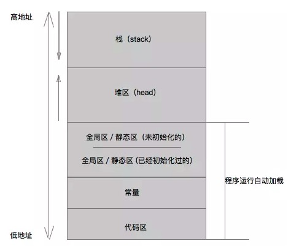
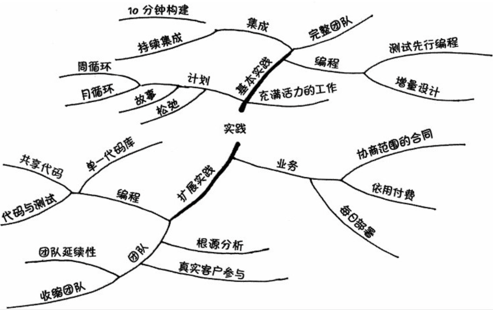

通用
常用链接
技术趋势
开发工具
其它工具
服务
- Appsflyer：归因服务
git
资料
Clone
| 命令 | 作用 |
|---|---|
git clone --depth=1 url | clone仓库，但git记录仅拉取深度为1的信息 |
git clone -b ${branch} --depth=1 | 当仓库用depth=1来拉取后，有些远程分支信息是没有的，此时可以拉对应远程分支 |
重置相关
还未添加到暂存区
| 命令 | 作用 |
|---|---|
git checkout . | 丢弃所有文件的修改 |
git checkout -- file | 丢弃单个文件的修改 |
git clean -xdf | 丢弃所有新增的文件 |
git clean -f a.txt | 移除单个新增的文件 |
git checkout . && git clean -xdf | 丢弃所有修改 |
已添加到暂存区，但还未提交
| 命令 | 作用 |
|---|---|
git reset HEAD | 将修改移回工作区 |
git reset --hard HEAD | 将修改丢弃 |
已经commit，但还未push
| 命令 | 作用 |
|---|---|
git reset commitid | 可以将commitid至HEAD之间的提交，全部移回到工作区 |
git reset --hard HEAD^ | 跳到上个结点 (HEAD^^跳到上上个结点) |
已经push到远端的提交
| 命令 | 作用 |
|---|---|
git revert commitid | 重置某次提交，会生成一条新的commit记录 (处理完git push即可) |
git revert HEAD | 将最新的提交revert掉 |
还有一种不安全的方式：git reset --hard commitID 然后 git push -f。 表示先在本地重置到某次提交，然后强制将远端的记录用本地替换。
分支相关
| 命令 | 作用 |
|---|---|
git checkout master | 切换到本地已有的分支 |
git checkout -b new_branch | 新建一个分支，并切换至该分支 |
git branch name | 从当前分支创建一个新分支，但不切换 |
git branch -a | 查看所有分支，包括远端分支 |
git branch -v | 查看本地分支跟踪的远程分支信息 |
git branch -u origin/master | 设置远程分支跟踪 (-u与--set-upstream-to等同) |
git merge --no-ff develop | 在merge指定分支时，生成一个合并结点 (即禁用Fast-Forward) |
git push origin branch_name:branch_name | 推送本地分支至远程（在远程会创建该分支） |
git branch -d branch_name | 删除本地分支 |
git branch -D branch_name | 强制删除本地分支 |
git push origin --delete branch_name | 删除远程分支 |
git cherry-pick commitid | 选择一个 commit，合并进当前分支 |
多仓库操作
| 命令 | 作用 |
|---|---|
git remote add another *** | 添加另外一个仓库地址至本仓库，别名为another |
git remote rm another | 删除别名为another的仓库地址 |
git remote show origin | 查看默认跟踪的源 |
git push -u origin master | 推送至指定远程仓库的指定分支 |
git pull origin master | 拉取指定远程仓库的指定分支 |
储藏区操作
| 命令 | 作用 |
|---|---|
git stash | 将工作区的修改添加至储藏区 |
git stash list | 查看储藏区内容 |
git stash pop | 将最上面的储藏内容应用至工作区，并删除这条储藏记录 |
git stash apply | 将最上面的储藏内容应用至工作区，并保留这条储藏记录 |
git stash apply stash@{0} | 应用指定的储藏记录 |
冲突相关
在merge冲突后，修复完冲突，需要执行如下指令：
# 2和3只需要执行一个就好，git merge --continue会填上默认的merge信息
1. git add * # 将修改添加
2. git commit -m * # 将修改提交
3. git merge --continue # 继续执行流程
如果不想继续解决冲突，则：
git merge --abort
rebase冲突后，类似
git add * # 标识冲突已解决 // rebase不需要commit
git rebase --continue # 继续执行流程
git rebase --abort # 中止rebase
在冲突解决时，要注意ours和theirs的含义：
merge时，ours表示当前分支，theirs表示被合并分支
rebase时，theirs表示当前分支，ours是表示被rebase的分支
参考：化解冲突：git merge 与 git rebase 中的 ours 和 theirs
SubModule
| 命令 | 作用 |
|---|---|
git submodule init | 初始化工程 (新clone的代码，要更新submodule，也需要调用这个命令) |
git submodule update | 更新submodule代码 |
git submodule add https://gitrepo.git directory | 添加submodule到当前工程 |
git push origin HEAD:master | 推送修改的代码至远端仓库指定分支 |
submodule相关信息，存储在了.gitmodules文件中
要删除某个submodule，参考：delete_git_submodule.md
SubTree
| 命令 | 作用 |
|---|---|
git subtree add --prefix=Path http://gitrepo.git master --squash | 添加subtree |
git subtree pull --prefix=Path http://gitrepo.git master --squash | 更新代码 |
git subtree split --rejoin push --prefix=Path http://gitrepo.git master | 推送代码 |
要查看subtree仓库有哪些，可以使用：
git log | grep git-subtree-dir | tr -d ' ' | cut -d ":" -f2 | sort | uniq
如果在推送时，不使用
--rejoin选项，可能会耗时很久
SubTree设置为一个仓库和分支之后，仍然可以随时修改为另一个仓库或分支
其它命令
| 命令 | 作用 |
|---|---|
git reflog | 查看有执行的记录 |
git show | 查看最近一次提交的修改 |
git show commitID | 查看指定commitID的修改 |
git show commit file | 查看某次，某个文件的修改 |
git fetch --all && git reset --hard origin/master | 重置本地所有修改，并更新到远端仓库的最新代码 |
git config --global https.proxy http://127.0.0.1 | 配置git全局代理 |
git config --global --unset http.proxy | 清理掉git全局代理 |
git config [--global] user.email "email@example.com" | 配置本地或全局仓库的用户邮箱 |
Merge、Rebase区别
- 在无法fast-forward时，Merge会生成一条新的合并记录 （当前分支/目标分支/共同祖先，共同生成）
- Rebase会把目标分支所有提交拿过来应用到当前分支上，当前分支的修改会放在最新的提交历史上
- git pull与git pull -r的区别，也是merge/rebase的区别。当用git pull时，如果本地和远端都有修改，则会生成一条新的merge记录
alias配置
打开或新建.gitconfig文件：vi ~/.gitconfig (配置别名)
加上如下内容:
[alias]
st = status
co = checkout
ci = commit
br = branch
pr = pull -r
lg = log --color --graph --pretty=format:'%Cred%h%Creset -%C(yellow)%d%Creset %s %Cgreen(%cr) %C(bold blue)<%an>%Creset' --abbrev-commit
ls-subtrees = !"git log | grep git-subtree-dir | tr -d ' ' | cut -d ":" -f2 | sort | uniq"
此时就可以使用 git ci -m "msg" 来提交代码了
高阶使用
修改已提交代码的日志
-
git rebase -i HEAD~2# 表示修改近两次的提交 -
指定哪些提交信息要被修改，如果两个都要修改，则要将pick修改为edit
pick f7f3f6d message1 pick 310154e message2修改为：
edit f7f3f6d message1 edit 310154e message2 -
保存退出，则控制台会提示操作某次修改，此时输入
git commit --amend，就可以针对一次提交进行编辑 -
保存退出，则提示某次修改成功，然后执行
git rebase --continue -
会提示进行下一次的操作修改，此时继续输入
git commit --amend，重复刚才的操作 -
当都修改完后，仍然需要继续执行一次
git rebase --continue，才能最终结束
合并多次提交至一次提交
-
git rebase -i HEAD~2# 合并最近两次提交 -
修改合并操作 (s表示squash，跟前一个提交合并，Message1为更早提交的)
p a4658c8 Message1 s ae2e0fa Message2 -
保存退出，正常情况下就完成了
但需要注意的是，已经push到远端的提交，不能使用这个操作。如果这样操作了，修改会无法push到远端的
参考：彻底搞懂 Git-Rebase，文章里有一点错误，p和s操作顺序写反了，要注意下这儿。
统计指定日期之后的提交次数
这种方法可以查看指定版本或灰度版本之后，进行的修改次数，以评估风险 (该命令过滤掉了merge的记录)
git log --since="2020-06-25" --no-merges | grep -e 'commit [a-zA-Z0-9]*' | wc -l
其它
Git工作流
- Git Flow: 现在较多的终端开发模式。长期存在master、develop分支，发布时就拉发布分支，fix版本拉bugfix分支。
- Github flow: 只存在一个master长期分支，功能开发、修改Bug，都拉分支操作，最后再PR回master。
- Gitlab flow: 也只有一个master长期分支，但强调“上游分支”的概念。代码的变化，必须由“上游”向“下游”发展。
参考：Git 工作流程
有趣的使用
本地仓库使用
- 假设本地有一个ARepo的仓库，可以直接通过
git clone ./ARepo ./BRepo来clone一个新的仓库 - 通过
git clone ./ARepo ./BRepoclone的BRepo的远端分支默认就是ARepo，git pull / git push默认也都是可以使用的 - 默认创建的ARepo，是无法往里面推送代码的，需要在ARepo下的
.git/config中添加denyCurrentBranch配置 (git push首次提交报错denyCurrentBranch) - 本地作为共享的仓库，最好用
git init --bare来初始化，这种仓库是没有工作区的，以免其它仓库推送代码过来之后，会导致当前工作区中代码很多变为修改状态
Reflog的使用
git reflog可以查看所有操作记录- 通过reflog可以在操作记录中任意跳转。如果跳到历史的一个记录，再进行新的提交，就可以认为时间线分叉了，然后可以通过
git reset --hard commitid来在不同时间线上跳，但一个时刻只能保持一个时间线。并且没办法合并两个不同
LFS使用
git commitizen
npm i -g commitizen && npm i -g cz-conventional-changelogecho '{ "path": "cz-conventional-changelog" }' > ~/.czrc
即可使用git cz提交代码，使用更规范的提交日志。
原理
VIM
跳转
| 操作 | 作用 |
|---|---|
10G / 10gg | 可以跳转到第10行 (G跳转至最后、gg跳转至最开头) |
ctrl-w-w | 在多个内部窗口之间跳转 |
0 | 移动光标到行首 (同 ^ ) |
w / b | w移动光标到下一个单词的开始位置 ( 2w 移到下下个单词开始位置)。b为前移 |
e | 移到光标到当前单词的末尾 |
b | 前一单词 |
% | 可以跳转至与括号匹配的另一个括号位置。 { [ ( ) ] }都可以匹配 |
H / M / L | 分别移动光标至屏幕顶端、屏幕中间、屏幕底部 |
zt / zz / zb | 分别为将光标所在行移至屏幕顶端、中间、底端 |
ctrl-f / ctrl-b | 分别为向下翻页，向上翻页 (同PgUp和pgDn按键) |
ctrl-e / ctrl-y | 分别为向下滚动，向上滚动 |
代码常用 (基于AS的VIM插件验证)
| 操作 | 作用 |
|---|---|
% | 匹配到对应的括号 |
gD | 跳转至符号定义处 |
ctrl-] | 跳转至符号定义处 |
ctrl-o (字母o) | 返回跳转前位置 (2,ctrl-o，可以返回2步） |
'' | 跳转到光标上次停留的地方 |
mx (x为a-z的字母) | 设置标签，并且在当前文件中，可以快速跳到标签位置 |
| ``x` | 跳至名为x的标签位置 |
>>、5>> | 增加缩进，前面加数字时，表示几行进行缩进 |
{ 、 } | 跳转至上一段或下一段的开头 (是以空行来区分段的) |
( 、) | 跳到当前段落的开头或结尾 |
编辑
| 操作 | 作用 |
|---|---|
d2w / d2e | 删除两个单词 (w会删除单词后的空格、e不包括) |
daw | 删除当前光标所在单词 |
cw / ce | 删除当前光标至单词末尾，并进入编辑模式 |
c$ | 删除光标至行尾，并进入编辑模式 |
ctrl-r | 可以将撤销的操作重新执行 |
J | 将当前行与下一行合并 |
"+y | 可以将内容复制到系统剪切板里。(如："+yw复制当前单词到系统剪切板) |
"+p | 将系统剪切板内容粘贴在光标后面 |
搜索/替换
| 操作 | 作用 |
|---|---|
/ | 直接进入搜索模式，正向查找 |
? | 直接进入搜索模式，反向搜索 |
ctrl-o | 可以回到跳转前的光标位置，并且可以多次执行 |
:s/old/new | 在当前行将第一个old替换为new |
:s/old/new/g | 在当前行，将所有old替换为new |
:%s/old/new/g | 全文替换 (:%s/old/new/gc: 全文替换时需要确认) |
命令
| 操作 | 作用 |
|---|---|
:help [cmd] | 查看帮助 |
:q | 可以关闭窗口，包括VIM内部打开的多个窗口 |
ZQ | 不保存退出 (ZZ是保存退出) |
:! | 执行外部命令，如: :!ls 表示查看外部当前目录的文件 |
:w filename | 将当前所有内容写入到filename中 |
:r filename | 可以将filename的内容读取出来，抛入到光标处 |
v | 进入可视模式，此时所有移动操作都可以用来选择内容 (选完再按:，就对选中内容操作) |
ctrl-d | 可以将所有匹配的命令列出来。如输入:e后，按ctrl-d，就能列出来以e开头的命令 |
配置
| 操作 | 作用 |
|---|---|
:set ic | 设置搜索忽略大小写 |
:set hls | 设置搜索结果高亮 |
:set is | 搜索时每次键入都去尝试匹配 |
Shell
资料
| 命令 | 作用 |
|---|---|
ctrl-r | 搜索历史命令，可以从命令中间进行匹配。Enter可以直接执行，左右方向键可以对命令二次编辑 |
ctrl-u | 删除当前行的内容 |
ctrl-w | 删除你输入的最后一个单词 |
ctrl-k | 删除光标之后的内容 |
option-左右方向键 | 可以左移或右移一个单词 |
ctrl-x ctrl-e | 在vim中编辑命令 |
cd - | 回到前一个工作路径中 |
set -o vi | 命令行用vi的方式来使用 |
set -o emacs | 还原为默认方式 |
| 命令 | 使用 |
|---|---|
ctrl-z | 将当前执行任务挂起 |
jobs | 列出所有子任务 |
fg %1 | 将编号为1的挂起任务放到前台来执行 |
bg %1 | 将编号为1的挂起任务在后台执行起来 |
kill %1 | 立即强制中止编码为1的任务 |
| 命令 | 作用 |
|---|---|
man ascii | 查看ascii码表 |
cal | 查看日历 |
bc / python | 使用计算器 |
其它
用JS写Shell的库：shelljs
Markdown
Markdown常用js库
- Marked
- Markdown-it
Marked和Markdown-it，在测试过程中，解析速度差不多。不过markdown-it扩展性更强，而且稳定性好。
正则表达式
资料
测试
资料
测试方式
回归测试
是指对软件的新版本测试时，重复执行之前某一个重要版本的所有测试用例
目的：
- 验证之前版本产生的所有缺陷已全部被修复；
- 确认修复这些缺陷没有引发新的缺陷
单元测试
通用
- 测试 - 测试覆盖率：语句覆盖率、条件覆盖率等是不一样的
前端
jest的使用
https://jestjs.io/docs/zh-Hans/getting-started
https://github.com/sapegin/jest-cheat-sheet
mocha的使用
https://github.com/matthewyan/Mocha
VSCode
VSCoce远程开发配置：https://juejin.im/post/5cf9d23ce51d45773d4685d9
远程开发配置好后，连接到远程服务器后，就用“打开文件夹”功能，就可以打开远端目录
VSCode快捷键
| 功能 | 快捷键 |
|---|---|
| 回退到上个位置 | Ctrl + - |
| 快速打开文件 | Ctrl + p |
| 代码格式化 | Shift + Option + F |
数据库
资料
通俗易懂 事务、ACID、脏读、脏写、幻读、读已提交、快照隔离、读写锁、两阶段锁定 的区别与联系
基础概念
- 关系型数据库，如MySQL、Oracle、SQL Server
- 非关系型数据库
- 事务：一个或者一系列操作的最小逻辑单元，这个逻辑单元内的操作要么全部成功，要么就全部失败。
AICD
- 原子性
- 隔离性：事务之间不会相互影响，如果多个事务操作一个对象时，会串行处理。
- 一致性
- 持久性：一旦事务成功提交后，就不会丢失。
ORM
ORM 就是通过实例对象的语法，完成关系型数据库的操作的技术，是"对象-关系映射"（Object/Relational Mapping） 的缩写。
索引
索引的本质，是在数据表之外，建立一个新的数据结构，提升查询效率。
关系型数据库
关系型数据库是指采用了关系模型来组织数据的数据库。简单来说，关系模式就是二维表格模型。
里面的核心概念是 联结
非关系型数据库
| 类型 | 示例 |
|---|---|
| KV存储 | LevelDB、Redis |
| 列存储 | HBase |
| 文档型 | MongoDB |
| 搜索型 | ElasticSearch |
| 图形数据库 | Neo4J |
列存储类型的介绍可以参考：五分钟轻松了解Hbase列式存储
了解文档存储，参考MongoDB介绍：了解 MongoDB 看这一篇就够了
常用数据库
LevelDB
SQLite
iOS端性能优化
-
Pragma参数优化（https://sqlite.org/pragma.html）
-
有效使用索引 （索引可以有效提升查询效率）(内置的explain功能查看语句的执行流程)
-
尽可能避免全表扫描。
-
减少无效数据的查询。
-
编写合理的语句
网络
概念
RTT：往返时延，表示从发送端发送数据开始，到发送端收到来自接收端的确认（接收端收到数据后便立即发送确认），总共经历的时延。
IPv6
- IPV4和IPV6的区别有哪些
- IPv6，到底是什么？：可以查看IPv6规则
套接字
由两端的IP/端口来唯一标识
TCP
三次握手步骤：
- SYN :客户端产生一个随机数x，再加上一些其他TCP参数，发送一个SYN包给服务端。
- SYN ACK：服务端在对x加1，自己再产生一个随机数y，再加上一些其他TCP参数，返回给客户端。
- ACK ：客户端同时对x和y再加1，发送最后一个ACK包，完成握手过程。
为什么需要三次握手：
TCP 为什么是三次握手，而不是两次或四次？ - 车小胖的回答 - 知乎 TCP 为什么是三次握手，而不是两次或四次？ - 山尽的回答 - 知乎
原因是为了防止链接复用时，收到了老的包。三次握手是在确定ISN，即初始序列号。
UDP
Http
状态码
整体范围 已定义范围 含义 100~199 100~101 信息提示 200~299 200~206 成功 300~399 300~305 重定向 400~499 400~415 客户端错误 500~599 500~505 服务器错误
Http/1.x
- 链接复用问题
- 1.0不支持链接复用
- 1.1，支持keep alive，但部分情况仍然需要建立多个链接
- HOLB（Head-Of-Line Blocking）：当第一个包被阻塞时，后续的包也都会被阻塞
- 1.0只能等
- 1.1部分解决，即请求可以一次发送多个
- 协议开销，每次Header里都带上所有相关信息
- 安全问题
- 有做并发限制，如果需要同时下载超过限制数的资源，就需要使用域名分片
Http/2
Http2的基础是Google开发的SPDY协议
- 二进制传输
- 同域名通信，都是单链接完成 （单链接也给Header优化提供了支持）
- 请求带有优先级
- 支持Server Push
问题：
- Http2的长链接，一旦丢包，就会导致所有包重传
Http/3
基于Google开发的QUIC协议
- 基于UDP (可以实现真正的多路复用)
- 向前纠错机制
Https
Https是在HTTP下加入SSL层
TLS目前使用较多的是TLS 1.1、TLS 1.2。
步骤：
- 客户端请求服务器获取证书公钥
- 客户端(SSL/TLS)解析证书（无效会弹出警告）
- 生成随机值
- 用公钥加密随机值生成密钥
- 客户端将秘钥发送给服务器
- 服务端用私钥解密秘钥得到随机值
- 将信息和随机值混合在一起进行对称加密
- 将加密的内容发送给客户端
- 客户端用秘钥解密信息
GET / POST区别
-
目的上有区别，GET用来获取数据，可以重复获取。POST用来写，重复请求会影响远端状态
-
请求报文上，没有实质区别。一个是
GET /uri ***，一个是POST /uri *** -
按照约定，GET的请求参数一般放在url中，POST的请求参数一般放在body中
常用工具
统计代码行数
安装：
gem install git_stats
在工程目录执行：
git_stats generate
其它的类似cloc也可以，参考：有哪些比较好用的代码量统计工具？
生成文本类型的目录结构
brew install tree- 使用：
tree -I node_modules > tree.text(表示忽略node_modules目录)
Bundler
能够跟踪并安装所需的特定版本的 gem
安装bundler：gem install bundler
安装依赖：bundle install
cocoapods
安装：sudo gem install cocoapods
如果提示路径没有权限的错误，可以用-n参数指定路径：sudo gem install cocoapods -n /usr/local/bin
Fastlane
实现iOS和Android的发布流程的自动化，以节省发布时间。功能有如下：
- 生成并下载开发者证书
- iTunes Connect上创建应用
- 打包应用
- 实现应用截屏
- 发布到Testflight
- 将包、截屏等传到Appstore
Fastlane实际上是一个Ruby脚本的集合,里面的每一个工具实际就是一个Ruby脚本,用于执行特定的工作任务。
Travis CI
市场份额最大，的持续集成服务。
目前并不只支持Github项目了，也开始支持Bitbucket等仓库了。
Jenkins
Gitlab-CI
算法
堆
一种特殊的树，是完全二叉树；堆中每一个节点的值都必须大于等于（或小于等于）其子树中每个节点的值。
堆化：当插入新的元素后，堆的条件不再满足时，就需要调整结点，以使其重新满足，这个过程就是堆化。
参考：https://time.geekbang.org/column/article/69913?utm_term=pc_interstitial_626
红黑树
红黑树(Red-black tree)：插入过程讲的比较清晰
使用场景
- STL中的map和set
- Linux进程调度
- nginx中的超时管理
- epoll的事件管理
图
- 带权重的图，称为加权图
- 不带权重的图，称为非加权图
其它数据结构
跳表
字典树
常用算法
狄克斯特拉算法
滑动窗口算法
滑动窗口算法可以用以解决数组/字符串的子元素问题，它可以将嵌套的循环问题，转换为单循环问题，降低时间复杂度。
洗牌算法
https://www.zhihu.com/question/358255792/answer/974431591
LRU算法
退火算法
图像处理
资料
基础概念
页面卡顿的原因：CPU或GPU计算好数据后将渲染后的结果放入帧缓冲区。视频控制器会根据VSync信号逐行读取帧缓冲区的数据，经过可能的数模转换传递给显示器显示。如果在一个 VSync 时间内，CPU 或者 GPU 没有完成内容提交，则那一帧就会被丢弃，等待下一次机会再显示，而这时显示屏会保留之前的内容不变。这就是界面卡顿的原因。
图像转换
矩阵变换
矩阵运算规则
解释
转换函数，是对图形的每一个点都应用这个转换，所有会使图形进行变形。这就是矩阵转换。
GPU渲染流程
顶点着色
输入是顶点数据
将一种3D坐标转为另一种3D坐标
对顶点属性做一些基本处理
形状装配
将所有的点装配成指定图元的形状
几何着色器
框架
Metal
Metal和OpenGL ES，Core Graphics属于同一级，最接近 Graphics HardwareMetal和OpenGL ES使用GPU处理，Core Graphics使用CPU处理OpenGL ES在iOS12之后被标记为废弃- 苹果很多图像处理框架，如
SpriteKit、SceneKit、Core Image等低层都基于metal来实现
Metal-IOS-通用GPU计算:Data-Parallel Compute Processing: Compute Command Encoder
WebGL
- 在Web端高效渲染交互式的2D/3D图形
- 与OpenGL ES 2.0的API非常接近
- API的使用同样需要在
<canvas>中使用
WebGPU
- 简单理解，WebGPU就是WebGL的升级版本
- WebGPU使用了Vulkan、Metal和Direct3D 12，引擎较新，也更好的反映了GPU这些年新的发展。(WebGL是基于OpenGL的)
- 提供更好的性能，支持多线程，采用了偏面向对象的编程风格
SVG
图片处理
操作系统
资料
虚拟内存
作业必须一次性全部装入内存后，方可运行。这是支持虚拟内存非常重要的目的。
虚拟内存技术实际上就是建立了“内存-外存”的两级存储器的结构，利用局部性原理实现高速缓存。
在程序装入时，可以将程序的一部分装入内存，而将其与部分留在外存，就可以启动程序执行。在程序执行过程中，当所访问的信息不在内存时，由操作系统将所需要的部分调入内存，然后继续执行程序。另一方面，操作系统将内存中暂时不使用的内容换到外存上，从而腾出空间存放将要调入内存的信息。
局部性原理：
- 时间局部性：如果程序中的某条指令一旦执行，则不久以后该指令可能再次执行。
- 空间局部性：一旦程序访问量某个存储单元，在不久之后，其附近的存储单元也将被访问。（如指令的顺序执行）
当用户程序要访问的部分尚未调入内存，则产生中断。
中断
- 中断是一种电信号，有硬件设备产生，直接向
中断控制器发送信号。 - 中断控制器将信号发给CPU，CPU一旦检测到信号，就中断当前任务，转而处理中断信号。
- CPU通知OS产生了中断，并将中断信号转给OS
中断的分类：
- 同步中断：由CPU产生 （也称异常）
- 异步中断：其它硬件设备产生 （称为中断）
异常分如下三类：
- 故障
- 陷阱
- 终止
安全
OAuth 2.0
OAuth的作用：就是让第三方服务安全可控地获取"用户"的授权，与"服务商提供商"进行互动。
方案
- 设置授权层，区分普通用户与第三方服务 (授权层可以做灵活的控制)
- 三方登录使用的票据称为
Token - 可以通过
Token限制三方的权限范围，比如只能读数据，不能写数据，设置Token有效期等
客户端获得授权，目前常用的方案为：授权码模式 （也即通过客户端导向认证服务器进行认证）
软件工程
架构图
画架构图的工具：
资料：
类图工具
PlantUML
官网：https://plantuml.com/zh/
安装：
brew install graphviz- 如果提示部分工具不存在：
xcode-select --install，执行完之后再安装graphviz - 下载plantuml.jar
- 执行
plantuml.jar，然后指定工作目录，以及配置支持的文件后缀(如添加md) - 在工作目录中新建的txt/md文件，编辑了之后直接保存，在当前目录下就会生成同名的png图片
Mermaid (推荐)
官网：https://github.com/mermaid-js/mermaid
typroa及gitlab默认都支持这个插件
开发模式
DDD
TDD
BDD：其实是TDD的改进版，把测试代码用DSL以更加可读的方式来描述，方便其他角色一起参与沟通。（参考：一文讲清楚什么是行为驱动开发）
工程管理
软件架构
基础概念
关注点分离：关注点混杂在一起会导致复杂性大大增加，所以能够把不同的关注点分离开来，分别处理就可以有效降低复杂性。关注点分离是处理复杂性的一个原则。
资料
架构
大的架构模式：
- 分层架构（用的最多，我们常提的MVC、MVVM等也是分层架构的实现）
- 事件驱动架构（终端开发经常使用的Dispatcher）
- 微核架构。内核较少，功能通过插件来扩展。
- 微服务架构。每一个服务就是一个独立的部署单元。
分层架构
在分层架构中，有一种常用的三层架构，即将系统分为三层。详细参考：三层架构详解
关于架构分层的优势：架构分层：我们为什么一定要这么做？
在三层架构中的DAL(数据访问层)，经常会使用DAO模式，关于DAO模式参考：DAO设计模式
MVC、MVVM也是分层架构，MV(X)模式介绍参考：
- 浅谈 MVC、MVP 和 MVVM 架构模式
- MVX模式示例：比较清晰易懂的示例
- MVP示例
架构模式
Provider
状态是组件私有的，则应该由组件自己管理；如果状态要跨组件共享，则该状态应该由各个组件共同的父元素来管理。
组件共享管理方式：
- 全局事件总线EventBus
BLoC
BLoC是Business Logic Components的缩写。
BLoC的哲学就是app里的所有东西都应该被认为是事件流：一部分组件订阅事件，另一部分组件则响应事件。BLoC居中管理这些会话。 来源：Flutter - BLoC模式入门
RESTful架构
理解RESTful架构：https://www.ruanyifeng.com/blog/2011/09/restful.html Restful API设计：http://www.ruanyifeng.com/blog/2014/05/restful_api.html RESTful API 最佳实践：https://www.ruanyifeng.com/blog/2018/10/restful-api-best-practices.html
架构模式比较 http://www.cocoachina.com/ios/20160108/14916.html https://academy.realm.io/cn/posts/krzysztof-zablocki-mDevCamp-ios-architecture-mvvm-mvc-viper/
架构相关 https://github.com/objcio/app-architecture https://www.objc.io/books/app-architecture/
GUI架构 https://martinfowler.com/eaaDev/uiArchs.html
iOS 架构之 View 层的架构方案 https://mp.weixin.qq.com/s/t_IBkCClPBZFBPmtZT0WsQ
https://casatwy.com/iosying-yong-jia-gou-tan-viewceng-de-zu-zhi-he-diao-yong-fang-an.html
////////////////////////////////////////////////////////////////////////////////////
几种架构demo https://github.com/uptechteam/Coordinator-MVVM-Rx-Example
Coordinator 架构模式 https://www.infoq.cn/article/ios-arch-based-on-reswift-and-app-coordinator
Coordinator架构开源库 https://github.com/quickbirdstudios/RxCoordinator https://github.com/RxSwiftCommunity/RxFlow
VIPER架构： https://objccn.io/issue-13-5/ Viper的Swift Demo https://github.com/mutualmobile/VIPER-SWIFT.git
https://github.com/Clean-Swift/CleanStore 清洁架构的实践，不同于VIPER
Clean Architecture https://clean-swift.com/clean-swift-ios-architecture/ https://github.com/sergdort/CleanArchitectureRxSwift https://github.com/CassiusPacheco/Swift-CleanArchitecture
翻译 https://www.roczhang.com/%E7%BF%BB%E8%AF%91%EF%BC%9AClean%20Swift%20iOS%20Architecture%20for%20Fixing%20Massive%20View%20Controller%20%EF%BC%88%E4%BA%8C%EF%BC%89.html
https://8thlight.com/blog/uncle-bob/2012/08/13/the-clean-architecture.html
Elm架构 https://github.com/chriseidhof/tea-in-swift https://medium.com/design-x-code/elmification-of-swift-af14b7f92b30
////////////////////////////////////////////////////////////////////////////////////////////////
单向数据流架构 由于所有东西都通过单一数据点和单一修改点，因此可以将所有修改状态的行为保存下来
RxSwift和状态管理 (ReSwift) https://juejin.im/post/5b6d72636fb9a04fd93e611b ReSwift单向数据流 https://medium.com/@tobi_86596/reswift-in-practice-1512e0f59eb5 https://github.com/ReSwift/ReSwift
RxSwift社区的Redux(Flux)实现 https://github.com/RxSwiftCommunity/RxReduce https://github.com/RxSwiftCommunity/RxState https://github.com/ReactorKit/ReactorKit
////////////////////////////////////////////////////////
Redux: （http://cn.redux.js.org/docs/basics/） 通用的单向数据流架构，基于Flux发展出来的 State只读，要改变State必须要通过触发Action 使用纯函数来执行修改，即编写的reducer。（使用纯函数，是为了明确输入和输出）
Redux的主要作用是管理程序状态的。
http://www.ruanyifeng.com/blog/2016/09/redux_tutorial_part_one_basic_usages.html
https://github.com/onmyway133/fantastic-ios-architecture
////////////////////////////////////////////////////////
Flux: Flux 的核心就是一个简单的约定：视图层组件不允许直接修改应用状态，只能触发 action。应用的状态必须独立出来放到 store 里面统一管理，通过侦听 action 来执行具体的状态操作。
https://gist.github.com/inamiy/bd257c60e670de8a144b1f97a07bacec
////////////////////////////////////////////////////////
https://matteomanferdini.com/ios-architecture-lotus-mvc-pattern/
https://github.com/matteocrippa/awesome-swift Events
笔记
从中台技术谈架构师的独立思考能力
一个持久创造价值的架构，一定是经过深度思考去发现的，而不是一本书上简单看到的。
好的思考，从清晰定义开始的，知道自己要做的真正的是什么。
中台定义：
- 定义1：多个部门间共享的开发资源所提供的业务、数据和计算能力
- 定义2：业务中台是对前台应用的抽象，提供多个前台业务间共享的业务逻辑、数据和计算能力

中台核心：抽象和降本
前台核心：商业机会捕捉和新商业机会创造
中台缺点：
- 对创新的遏制 （因为会将业务资源最小化，懂业务的人会非常少，导致面对业务创新受阻）
- 过度设计（容易做最大业务场景的全覆盖）
中台本质：最简单直接的理解，中台提供技术复用，但最终公司是希望可以共享商业能力。即从技术再往业务扩展。
中台目标，可以细分这6个目的：降低成本、加速上线、提升稳定性、加速能力扩散、统一数据资产、集团层次资源高效利用。
这些从左到右，即从具体到抽象，从技术到业务的过度。
中台适用范围是有限的，适用于通用性+确定性的领域，在特殊和不确定性中，最好不要盲目使用中台。
SuperCell的成功，源于北欧的生活、工作准则：
- 崇尚简约
- 尊重原创
- 组织扁平
中美等国家重复造轮子，源于文化，短期内难以解决。因为这些国家、公司都是奖励组织鼓胀，团队人数和收入挂钩，大家都会扩张组织。多出来的人力就去造轮子。
抽象有天花板，终局是零和游戏？ 这句话如何理解？
不存在面向未来的完美设计，中台的价值会不断衰减
中台的发展必须要有合理的机制来配套，要有科学的方法，要有修正的机制等。
中台建设期，最好是在系统开始的时候。如果随着业务发展，在基础服务之上的楼建的越来越高，此时再想推翻重构，设计中台，是一种很不明智的行为。
软件设计
浅谈软件设计
前言
软件设计中，什么最重要？能让软件灵活、低成本修改的前提下，又能尽可能减少变化带来的风险。
如何能达到这个目的呢？有如下几个方面：
- 能不修改原有代码就不修改，变化的功能完全通过新增代码来解决。(OCP原则)
- 必须修改原有代码时，尽量把代码的变化限制在足够小的范围内。（正交性）
正交性：源于《程序员修炼之道》，是一个核心指导原则。是指当某个模块有修改、变化时，对周边其它模块不造成任何影响。
设计原则
根据上面这些推导，就能看出来设计原则也是为了满足目的而总结出来的经验。虽然在《架构整洁之道》中提炼了SOLID五种设计原则，但根据上面的推论，可以看出来OCP/SRP/DIP是更加核心的设计原则。
如果从层次上来讲，OCP应该跟正交性属于同一个层次。
OCP在设计模式中的使用也是非常常用的指导原则，比如观察者模式、职责链、装饰器模式等，都是OCP原则的使用。
OCP也是可大可小的原则，在越大的系统上，OCP越重要。比如互联网，核心层是非常稳定，扩展性非常强，要发布新的网站完全是不需要修改互联网底层。
互联网的这个例子，来自软件设计之美，非常具有启发性。
针对OCP原则，在《设计模式之美》中提了一个有趣的问题：修改代码就意味着违背开闭原则吗？
其实不一定。比如实现某个需求时，如果在某个类中扩展了一个接口，那么对接口来说是满足OCP，但对类来说是不满足的(对模块和类层次来说也一样)。所以是否满足OCP不能简单一概而论。专栏中给出了这样的结论：尽量让修改操作更集中、更少，尽量让最核心、最复杂的那部分逻辑代码满足开闭原则。
那SOLID中剩余的LSP及ISP原则是有什么用处呢？
LSP(里氏替换原则)从定义上来说：任何基类可以出现的地方，子类都可以替换它。
子类可以完全替换父类，这个约束可以产生什么样的结果呢？
- 子类只能去扩展基类，而不能隐藏或者覆盖基类行为。这其实是对OCP的实践。
- 抽象层确定下来的行为，具体类不能改变它，只能适应它；也就是实现要依赖于抽象，而非具体。这其实是对DIP的实践。
所以本质上LSP是在满足DIP和OCP的原则下推导出的一个具体原则。
ISP(接口隔离原则)从定义上来说：不应强迫使用者依赖于它们不用的方法。ISP有如下作用：
- 源码层面的变化隔离，可以一定程度上提升源码编译速度。
- 对更高层次模块来说，可以防止不必要依赖变化时，都需要重新编译、布署。
ISP与SRP一定程度上有些相似性，但并不一样。ISP更侧重于接口的设计，思考角度也是略不同的。
ISP迫使我们在接口的维度上来思考，使我们站在行为的角度上来思考。行为是更加复杂易变的，实体会更加稳定。那么基于行为进行职责划分与隔离，就更容易封装变化。
除SOLID原则外，还有一些比较有名的指导原则：
- 针对接口编程：本质也是将代码分层，接口设计即抽象层的设计，也即DIP的实践。
- KISS：使代码保持简洁。注意，如果问题很复杂，此时解决方案复杂的话，也可以认为是满足KISS原则的。
- YAGNI：不要做过度设计。不要提前写用不到的代码，但预留扩展性是必要的。
- DRY：完全重复的代码不一定违反DRY，不完全一样的代码也可能违反了DRY。详情可以参考：重复的代码就一定违背DRY吗？如何提高代码的复用性？
- LOD：不该有直接依赖关系的类之间，不要有依赖；有依赖关系的类之间，尽量只依赖必要的接口。 详解参考：如何用迪米特法则（LOD）实现“高内聚、松耦合”？
KISS、LOD、YAGNI等原则的一些详细说明，《设计模式之美》 对这块的详细介绍是很值得看一下的DRY原则，在《程序员修炼之道》中有更全面的说明，DRY不止指代码层面的重复，还包括意图等方面的重复
设计模式
面向对象开发中，代码中遍布着对象。那么面向对象开发中对象及对象关系的处理就是非常重要的。GoF总结的设计模式，也可以围绕对象的关系/行为来理解。
对象的处理，可以划分为如下三种关系/行为：
- 对象的创建
- 对象间的关系
- 对象的行为
站在这个角度来理解设计模式是更容易理解的。但我们需要先考虑的是，为什么会存在这些设计模式。要研究这个问题，还是需要基于具体场景来看
比较简单的单例、观察者模式，以及使用场景比较受限的解释器，还有仅为了内存优化而存在的FlyWeight模式并没有涉及
对象的创建
直接创建一个类会有什么问题呢？可能会违反DIP原则，导致抽象类依赖于具体类。
如何解决这个问题呢？在抽象层中不做具体的创建，只保留基类中对象的引用。只要想办法给引用赋值即可，一种办法是在外部创建好后再传进来(即依赖注入)。如果在对象中存在继承关系，还有一种办法就是在子类中创建。
在子类中创建的方式就是**工厂模式**，具体实现上就是抽象类提供create接口返回具体的对象，子类重载该接口返回具体对象。
有批量对象需要创建，对象之间存在约束：某些类型的对象只能同时使用。为了满足该约束，需要封装创建者，并将创建者也进一步分层为抽象类及具体类，就是**抽象工厂模式**
有批量对象要创建，这些对象创建完之后还需要做进一步拼装/组合等操作，同样需要封装创建者并进行设计分层，将拼装/组合的差异放在具体创建者子类中，就是**创建者模式**
如果要对已有对象(包含状态)进行复制，就是**原型模式**
创建型的设计模式，都在遵循封装变化、对接口编程这些根本原则。
对象间的关系
对象与对象之间有多少种关系呢？
- 继承
- 包装(包含组合)
在什么场景下，可以很好的利用对象关系的处理达到设计的目的呢？
继承
继承重要的作用就是将代码进行分层，分为抽象层与具体层，并且尽量保持抽象层的稳定。（虽然代码复用也是其中一个功能，但并不推荐）
遇到问题需要对类进行分层时，要满足DIP原则的约束，针对这种约束沉淀出来的方案，自然就可以做到具体层可以随意变化，不影响抽象层，抽象层做一些调整时，具体层也可能完全不受影响。这就是**桥接模式**
包装
如果目前已有一个对象，我们希望对其进行扩展或修改时，但又希望满足OCP原则，那如何做呢？（还一种情况，就是原始对象无法修改）
有个办法就是通过一个Wrapper类，来将原有对象包装起来，并用Wrapper来替换原始对象的使用，以此来达到修改原始对象的功能。
要改变原始类的接口名称时，在Wrapper的新接口中调用原始接口，就是**适配器模式**
要扩展原始类的功能时，Wrapper与目标类设计为同样类型的对象。在Wrapper中抽象接口实现时，除了调用目标对象的接口，还补充了自己的逻辑。就是**装饰器模式**
修改原始类的行为时，Wrapper与目标类设计为同样类型的对象。在Wrapper中抽象接口实现时，可以按自己的预期来调整新的行为。就是**代理模式**
如果对象结构间有一种递归性，比如大图案是由小图案组合而成的，并且可以不断递归组合。此时Wrapper与目标类设计为同样的类型对象，并且Wrapper中可以存储多个目标类型对象。Wrapper的接口实现上，会迭代调用内部目标对象的接口。这就是**组合模式**
如果要扩大被包装目标的范围，比如是多个对象，或者某个模块，要对他们的接口进行调整，就可以产生**外观模式**
对象的行为
站在对象的行为上来考虑时，可以更多的从他们的时机和行为上来分析。
如果有一系列操作需要执行，可以将这些操作封装为同一种类型的对象，然后在抽象层可以按序执行它们，就是**Command模式**
如果有一个数据或事件，需要交给多个对象处理或执行。可以将这些处理对象封装为同一类型对象，数据/事件在这个对象链条上进行传递，就是**职责链模式**
如果系统中存在不同的状态，并且这些状态可以随着系统执行不断改变其中的状态时，就可以将这些状态封装为同一类型对象，核心执行逻辑可以不关心使用的具体对象，这就是**状态模式**
如果系统中存在不同的状态，并且在不同场景会使用不同对象时，就可以将这些状态封装为同一类型对象，要使用不同策略，仅需要将策略对象设置给该系统，这就是**策略模式**
如果某容器内有多个元素，想在不了解容器内部实现的情况下枚举其中的内部元素，就可以通过提供统一访问协议，容器来实现该协议以达到遍历的目的。这就是**迭代器模式**
如果某个对象有存取需求，并且不想暴露内部实现，就可以让该对象提供导出/导入状态的接口，在外部来存取相应数据。这就是**备忘录模式**
如果在完成某件任务时，有统一的执行流程，不同场景下的差异仅在于细节上的差异，就可以在抽象层实现流程和通用的执行细节，具体差异部分通过子类重写保留的接口来实现。这就是**模板模式**
如果想在不同场景对容器元素进行遍历操作并得到不同结果，并且要处理的元素类型比较固定，但处理的操作可能易变时，就可以让元素对象提供一个访问接口，然后把要处理的操作封装为访问者对象，访问者对象中可以对不同元素进行不同处理。这样就可以更好的满足OCP原则，这就是访问者模式
如果一组对象之间相互调用的关系比较复杂，形成了网状的结构时，通过增加一个中间交互对象的方式，来将各对象之间相互的引用解耦开，就是**中介者模式**
在行为类模式中，状态模式跟策略模式是很像的，从类图上来看也是一致的。但两个模式处理的问题场景是不同的。 比如登录问题很适合用状态模式，登录过程分为几个状态，这几个状态在开始登录后，会自动切换其中的状态，一种状态切为另一种状态可能会执行不同的操作，该系统给外界的反馈可能也会有差异。 一个软件是试用模式还是正式模式，就可以比较适合使用策略模式，比如试用版本时某些功能的调用受限。如果用户付了费，可以直接将另外一个策略替换当前策略。
其中Command模式、职责链模式、状态模式、策略模式在类结构上是比较相似的，可以用简单语言来描述的其中差异：
- 当一系列对象有统一行为接口，在抽象层可以按序执行它们，就是
Command模式 - 当一系列对象有统一行为接口，并且数据或事件会沿着这一系列对象传递时，就是
职责链模式 - 当一系列对象有统一行为接口，在不同时机会切换不同的对象，就是
状态模式 - 当一系列对象有统一行为接口，在不同的场景使用不同的对象，就是
策略模式
结语
现在再回过头来看，设计模式是什么呢？设计模式其实是针对场景总结出的设计经验。
学习设计模式最重要的是什么？透彻理解设计原则是最重要的。如果熟练掌握了设计原则，即使从来不知道设计模式，仍然能在开发过程中自然而然的用上设计模式。
当然并不是说设计模式没有价值，首先是它可以给我们一些指导和演示，告诉我们在某些场景下比较优秀的设计是什么样的。其次它是一种沟通语言，可以在不同的开发之间方便的传达设计思路。
参考资料
基础概念
高内聚：模块内的元素，关联性越强，则内聚越高。
依赖注入：当A类依赖于B类时，将B类的初始化等移出去，然后通过构造函数或接口的方式将其设置到A中，这种情况A仅对B的基类进行了依赖
控制反转：通过一个控制系统(IoC容器)来自动化依赖注入的过程，解除各对象之间直接的联系。
依赖倒置：直观的概念上，一个对象会依赖内部(实现)组件，依赖倒置即将上层对下层的依赖打破，做到上层仅依赖上层。控制反转就是DIP的一种实践
核心
软件设计的关键任务是职责分配，可以等同于分离关注点（正交性）。
高内聚性一般和许多理想的软件特性有关，包括鲁棒性、可靠度、可复用性及易懂性（understandability）等特性
深入原则
核心支撑：当有变化产生时，影响到的模块越少越好。
SRP
职责越少，改动时越不易受影响
OCP
尽可能不影响已有的模块，新增逻辑的风险或变化会更可控
DIP
抽象的代码更稳定、更不容易变更
ISP
不遵守ISP会导致的问题：
- 增加使用者的心智负担
- 不被使用的接口能力进行调整时，可能对使用者产生影响
LSP
本质是遵循的如下两个原则：
- 设计和实现要依赖于抽象而非具体； (对DIP的实践)
- 子类只能去扩展基类，而不是隐藏或者覆盖基类； （对OCP的实践）
LOD
迪米特法则(LOD)：又称最小知识法则，即一个类对其它类知道的越少越好，是对类职责划分做指导的原则。
为什么要依赖于抽象而非具体？
抽象更稳定
资料
设计模式
概览
面向对象开发中，代码中遍布着对象。那么面向对象开发中对象及对象关系的处理就是非常重要的。所谓的GoF设计模式，也可以围绕对象的关系/行为来理解。
对象的处理，可以划分为如下三种关系/行为：
- 对象的创建
- 对象间的关系
- 对象的行为
对象的创建
直接创建一个类会有什么问题呢？可能会违反DIP原则，导致抽象类依赖于具体类。
如何解决这个问题呢？在基类中不做具体的创建，只保留基类中对象的引用。只要想办法给引用赋值即可，一种办法是在外部创建好后再传进来(即依赖注入)。如果在对象中存在继承关系，还有一种办法就是在子类中创建。
抽象类提供create接口返回具体的对象，子类重载该接口返回具体对象，就是**工厂模式**
有批量对象需要创建，对象之间存在约束：某些类型的对象只能同时使用。为了满足该约束，需要封装创建者，并将创建者也进一步分层为抽象类及具体类，就是**抽象工厂模式**
有批量对象要创建，这些对象创建完之后还需要做进一步拼装/组合等操作，同样需要封装创建者并进行设计分层，将拼装/组合的差异放在具体创建者子类中，就是**创建者模式**
如果要对已有对象(包含状态)进行复制，就是**原型模式**
创建型的设计模式，都在遵循封装变化、对接口编程这些根本原则。而且目前提炼出来的构建型设计模式都是针对特性场景的，如果遇到的问题稍微有些不同，一定要能灵活的根据原则来调整模式。
对象间的关系
对象与对象之间有多少种关系呢？
- 继承
- 包装(包含组合)
继承
继承重要的作用就是将代码进行分层，分为抽象层与具体层，并且尽量保持抽象层的稳定。（虽然代码复用也是其中一个功能，但并不推荐）
利用对象继承时，需要注意的就是抽象层与具体层之间的依赖关系，需要满足DIP原则。针对这种原则，沉淀出来的具体实践就是**桥接模式**
包装
可以理解为对象的Hook，即拦截原始对象的调用，来达到某种目的。（为什么不直接修改原始的类呢？最主要的是为了满足OCP原则。其次是有些情况是无法修改原始类。）
当要改变原始类的接口名称时，就是**适配器模式**
当要扩展原始类的功能时，就是**装饰器模式**
当要修改原始类的行为时，就是**代理模式**
如果对象结构间有一种递归性，被包装的对象同样可以是包装对象时，就是**组合模式**
如果要扩大被包装目标的范围，比如是多个对象，或者某个模块，要对他们的接口进行调整，就可以产生**外观模式**
结构模式另一种描述
桥接模式：依赖倒置原则的一种实现，简单理解为依赖注入的实现结构。
适配器：简单理解就是转接头，将已有对象的接口，转为需要的接口。
装饰者模式：想灵活的给某些对象扩展功能就可以用装饰者模式。相比通过继承来扩展，装饰者模式可以给对象，而非类扩展功能。
代理模式：为了控制某个对象的操作行为，比如C++中的智能指针类就是典型的代理模式实现的。
组合模式：当某种结构有递归性时，就可以考虑组合模式。
外观模式：将一个子系统进行封装，提供一个高层接口来简化使用
FlyWeight模式：纯粹是为了减少运行时内存占用，这个模式并不是从代码的可维护角度来提出的
对象的行为
当一系列对象有统一行为接口，在抽象层可以按序执行它们，就是**Command模式**
当一系列对象有统一行为接口，并且数据或事件会沿着这一系列对象传递时，就是**职责链模式**
当一系列对象有统一行为接口，在不同时机使用不同的对象，就是**状态模式**
当一系列对象有统一行为接口，在不同的场景使用不同的对象，就是**策略模式**
屏蔽容器的内部实现，提供特定的接口来遍历容器内部的元素，就是**迭代器模式**
屏蔽对象的内部实现，对象通过特定接口来导出内部状态，并且将导致的状态保存至外部某处，并且提供了还原状态的方式。这就是**备忘录模式**
在不同场景下，操作步骤相同，但某些步骤实现有差异，就是**模板模式**
不同场景对容器执行遍历操作得出不同的结果，为了满足OCP原则而产生的就是访问者模式
一组对象之间相互调用的关系比较复杂，形成了网状的结构时，通过增加一个中间交互对象的方式，来将各对象之间相互的引用解耦开，就是**中介者模式**
资料
文档
流程图、架构图、类图等，有两个通用目的：
- 将自己的想法明确的表述出来，并提前与人讨论沟通，以发现其中的问题。
- 可以作为项目的概览文档，方便按图索骥
UML
统一建模语言，下面有各种使用，如流程图、类图等等。
流程图
目的：
- 清楚的描述产品的流程和边界
- 梳理清楚活动流程的先后顺序
- 帮我们查漏补缺
- 提升沟通效率
种类：
- 业务流程图
- 任务流程图
- 页面流程图
- 逻辑流程图
类图
泳道图
也叫跨职能流程图，旨在展示工作流中每个步骤涉及的流程和职能模块。
时序图
状态图
甘特图
协作图
用例图
用例图是描述用例、参与者以及它们之间关系的图。
用例是用户期望系统具备的功能，每一个用例说明一个系统提供给它的使用者的一种服务或功能。
iOS
资料
ARC
LLDB
chisel：facebook开源lldb插件
LLDB支持插件开发：LLDB插件(三)
命令
expression somesth：执行某个表达式call somesth：调用某个方法bt 5：打印当前堆栈，且只打印5帧thread list：查看线程列表thread return 10：直接从当前方法中返回，且返回值为10c：继续n：下一步s：进入f：跳出frame select N：当前堆栈中，跳至第N帧frame variable ***：查看帧变量（不指定具体变量，查看所有本地变量）target variable ***：查看全局变量（不指定具体变量名，即可查看所有）image lookup -address 0x***：查看指定地址的信息image lookup -name：查找方法来源，可以查看所有库中指定名称的方法image lookup -type：查看某个类的所有成员breakpoint set -f ViewController.m -l 30：在指定文件中指定行打断点breakpoint set -n viewDidLoad：会在所有viewDidLoad上打断点breakpoint set -n "-[MobShareViewController viewDidLoad]"：在指定类的指定方法上打断点breakpoint delete 编号：删除指定断点（不指定编号即清除所有）breakpoint set -f MOBQQViewController.m -l 50 -c "parameters != nil"：在指定位置添加符号断点，判断条件是c参数之后的字符串breakpoint list：查看断点列表breakpoint disable/enable 2：禁用/启用指定断点watchpoint set variable b：设置观察点，监听b变量，当其有改变时，会断下来watchpoint set expression 0x7ffee1c1f0fc：直接对指定内存地址进行监听watchpoint list：查看观察点watchpoint delete 编号：删除观察点（不指定编号即清除所有）target stop-hook command：可以在断点断下来之后，就自动执行指定的commandtarget stop-hook list：列出所有的hook指令
观察点，有软件/硬件实现之分。软件实现的话，执行速度比正常执行要慢非常多（上百倍）。硬件观察点，速度基本不受影响。目前Xcode调试也支持了硬件观察点，设置观察点时就可以看到相关信息：
Number of supported hardware watchpoints: 4
别名
| 原名 | 别名 |
|---|---|
| p | |
| expression | expr |
可以自定义别名：
command alias pb thread backtrace：即可将pb定义为thread backtrace
多媒体
metal在模拟器上是使用不了的
动态库 & 静态库
静态库：编译时跟App链接在一起，启动时间会更少、安装包大小更小。
动态库：动态库分两种，一种是系统的tbd、dylib。一种是.framework。
- tbd是系统使用的，真正的动态库。
- framework是动态加载到进程内存空间的，更多是为了同一进程内的多个目标使用。比如缩主和Extension可以共享。
- framework可以使用dlopen来加载。
- .tbd 其实是一个YAML本文文件，描述了需要链接的动态库的信息。主要目的是为了减少app 的下载大小。
崩溃
- Crash Sdk是通过注册异常信号来捕获异常的。
- 捕捉到异常再用
backtrace接口来获取当前堆栈信息
日志
NSLog
本质也是ASL(Apple System Logger)
aslMessageReceived接收日志，asl_get解码日志。
Runloop
是一个运行循环，有事情时处理事情，没有事情时休眠。
作用：
- 保持程序的持续运行g
- 处理各种事件
- 节省CPU资源，提高程序性能
特点：
- 一个线程对应一个Runloop
- 子线程Runloop的创建是发生在第一次获取时，Runloop的销毁是发生在线程结束时
- 一个Runloop中包含多个Mode
- 每个Mode包含若干个Source/Timer/Observer
Source主要用来跟其它线程互发消息使用
Observer可以监听：即将进入loop、即将处理timer、即将处理Source、即将进入休眠、刚从休眠中唤醒、即将退出loop这些事件。
performSelector:异步执行某个接口时，其实现也是通过添加timer来做的。
Runloop类型：
- NSDefaultRunLoopMode：默认的模式
- UITrackingRunLoopMode：界面跟踪，用于scrollView拖拽滑动
- NSRunLoopCommonModes：综合模式
示意图：（来源：https://www.jianshu.com/p/d8c3a65b6e19）

Timer与Runloop结合的使用：
- 子线程中启动Timer，需要手动将其加入到当前runloop中
- 如果当前线程的runloop还没有启动过，还需要调用一下
run接口 - 子线程释放Timer也需要注意，
timer.invalidate()的调用线程要与Timer的创建线程是同一个
Xcode
Xcode中的Do no embed等作用：https://stackoverflow.com/questions/57687170/do-not-embed-embed-sign-embed-without-signing-what-are-they-what-th
汇编调度：Xcode->Debug->Debug workflow->Always Show Disassembly
内存
缺页中断类型
- Hard Page Fault：物理内存中没有对应页，需要从磁盘读取
- Soft Page Fault：物理内存中存在对应页，其它进程可能正在处理。只要用MMU建立映射
- Invalid Page Fault：会触发SIGSEGV异常，导致应用中止。
内存布局

内存压缩
在iOS上，虚拟内存机制，并不是跟磁盘进行交换。而是将最久不使用的内存（LRU）进行压缩。当内存需要使用时，再解压。
FOOM
即前台内存占用过多被杀，检测方法：
1.App没有升级
2.App没有调用exit()或abort()退出
3.App没有出现Crash (依赖于自身CrashReport组件的Crash回调)
4.用户没有强退App
5.系统没有升级/重启
6.App当时没有后台运行（依赖于ApplicationState和前后台切换通知）
7.App出现FOOM （依赖于ApplicationState和前后台切换通知）
内存问题情况
- leaked Memory：有retain，但没对应release导致的（MRC容易出现）
- Abandoned Memory：循环引用导致的
- Zombies：即僵尸对象，已经释放了，但仍然可能被使用
图形处理
使用渐进式 JPEG 来提升用户体验：渐进式图片是需要图片本身支持
图片所占内存的大小与图片的尺寸有关，而不是图片的文件大小
CPU & GPU
在图形处理过程中，CPU的作用是将相应需要展示的内存数据准备好
GPU是拿这些内存数据，转化为可以直接渲染的数据。其中有多步：
- 3D坐标转化为2D坐标
- 2D坐标转化为实际像素
- 顶点着色器
- 形状装配
- 几何着色器
- 光栅化
- 片段着色器
- 测试与混合
原生渲染
- 更新视图树，同步更新图层树
- CPU计算要显示的内容（包括布局计算、图像解码等），然后转至Render Server
- 数据到达Render Server后，按照图层树中图层顺序、RGBA值等等，转成渲染树给OpenGL / Metal
- Render Server调用GPU进行处理
前三步，被称为Commit Transaction

黑暗模式适配
注意问题
要关掉黑暗模式，需要在info.plist中添加如下KV值：
Key: UIUserInterfaceStyle
Value: Light
注意：
工程中如果有Extension，则Extension的配置文件也需要改，否则扩展还是默认会打开黑暗模式。
但是经测试，Today Extension 即使关掉了黑暗模式，背景仍然会以黑暗模式的形式来展示。（为了防止系统级体验不好，也是合理）。所以Today Extension最好适配黑暗模式
Universal Links支持
关注点
- 一个应用是可以支持多个Universal Link的
apple-app-site-association可以放在https://domain/apple-app-site-association也可以放在https://domain/.well-known/apple-app-site-association，建议放在.well-known路径下，而且苹果会优先下载这个位置的配置文件apple-app-site-association中details字典搜索顺序是从上至下，把希望优先匹配的内容放在前面- path匹配是支持*和?的，*表示匹配任意字符，?表示匹配一个字符，?*表示匹配至少一个字符。
其它
性能相关
资料
手机淘宝对应用启动、运行等性能分析：手淘iOS性能优化探索
安装包大小
App Thinning
根据不同设备，下载不同的资源、架构的二进制包。
在Appstore上看到的应用大小，就是经过App Thinning，在本机安装后的大小。
具体分为三种方式：
- App Slicing：针对不同设备，对App切割成不同变体
- Bitcode：针对特定设备进行包大小优化（目前优化不明显，为未来预留可能性）
- On-Demand Resources：主要是游戏场景，如关卡资源等使用。
通过Asset管理的资源，会自动被App Slicing处理。
资源压缩
ImageOptim
启动过程
从大的过程上来说，分为三个阶段：main前、main后、首屏渲染完成
main前
- 加载可执行文件
- 加载动态链接库
- OC运行时环境初始化
- 初始化，包括
+load()、创建C++静态全局变量等
此阶段可优化工作：
- 减少动态链接库（苹果建议最多使用6个非系统动态库，也可以尝试合并动态库）
- 减少无用代码
- 减少+load方法的使用 (可以使用+initialize方法替换，该方法在类的第一个方法调用前才会调用)
- 减少类似C++全局变量数量
Swift不支持静态库，引用的库必须是framework的，所以Swift代码中引入的第三方，需要编译为framework的
main后
指main至didFinishLaunchingWithOptions首屏渲染相关方法执行完成。
- 首屏初始化所需配置文件读写操作
- 首屏列表大数据读取
- 首屏渲染大量计算
此阶段可以优化工作：
- 此阶段只做首屏渲染必要的初始化功能，要从业务逻辑上梳理清楚。
首屏渲染完成后
此时已经可以看到首屏了。具体优化是跟业务有更强的关联性。
启动耗时监控
DYLD_PRINT_STATISTICS
在Edit scheme -> Run -> Arguments中，设置如下的环境变量，即可查看启动时间
DYLD_PRINT_STATISTICS设为1DYLD_PRINT_STATISTICS_DETAILS设为1，可以查看更详细的信息
MetricsKit Test
// 测试代码中测试
- (void)testLaunchPerformance {
if (@available(macOS 10.15, iOS 13.0, tvOS 13.0, *)) {
[self measureWithMetrics:@[XCTOSSignpostMetric.applicationLaunchMetric] block:^{
[[[XCUIApplication alloc] init] launch];
}];
}
}
线上精确度量启动时间
iOS13之后，使用 MetricsKit
MetricsKit使用不错的文档：iOS13+ 性能和耗电量信息收集框架
性能监控方法
- 每隔一段时间截取一下堆栈信息，根据堆栈里的调用栈判断某函数存在的时间（也即执行的时间，Time Profiler也是这种方案）
- hook
objc_msgSend，统计所有执行耗时
hook objc_msgSend 方法：
- 使用fishhook工具 （通过重新绑定符号实现C接口的替换）
- 写相应的自己的
objc_msgSend方法进行替换
卡顿监控
卡顿监控实现方式有两种：
- 监听主线程Runloop来实现
- 监听
CADisplayLink时间间隔来实现
利用Runloop来监控即可
原理：监听主线程的Runloop，监听其开始和结束时间，当消耗的时间超过一定的阈值，就认为卡顿。 (这个是微信的Matrix实现方案)
在微信的实现中，有使用退火算法来优化。 具体参考：Matrix for iOS macOS 卡顿监控原理
CADisplayLink实现
手Q Blue组件，通过CADisplayLink两次回调时间间隔来预测掉的帧。时间间隔为33.2ms~49.8ms认为是掉了一帧。原因是该回调接口至少也有16.6ms的间隔。
内存
JetSam机制，是操作系统为了控制内存资源过度使用而采用的一种资源管控机制。
从设置 -> 隐私 -> 分析中，查看JetsamEvent开头的日志，可以看到App内存限制。
电量
电量的消耗，本质还是计算资源的消耗。
移动端的电量是稀缺品，用户对电量也是非常敏感的。苹果的新系统也支持了查看每个应用对电量的消耗。
要想分析电量的消耗，可以通过如下方法：
- 首先获取所有线程信息。 (
task_threads接口可以获取) - 获取到的线程信息数组，是
thread_basic_info结构数组 - 在该结构中，有
cpu_usage字段，存储了该信息 - 如果某个线程的该字段，长时间都是高占用，就需要仔细分析该线程
电量优化：
- 大数据量的复杂计算，通过
dispatch_block_create_with_qos_class指定队列Qos为QOS_CLASS_UTILITY，这个队列里的任务有专门做了电量优化。 - 利用GPU做密集计算
- 将一些操作可以放后台计算
- 利用
NSCache，将批量的I/O操作统一写入磁盘
官方的其它优化建议：
- 少做后台任务
- 少用Timer
- 监听用户是否开了低电量模式，低电量模式可以做不同的优化 （
NSProcessInfoPowerStateDidChangeNotification） - ……
Instruments
Instruments能力：（有部分能力在模拟器上是不支持的）
-
App Launch：统计启动耗时，并有相应接口的耗时细节
-
Activity Monitor：监视CPU、内存、磁盘、网络等信息
-
Allocations：匿名虚拟内存及堆的状态，可以查看内存增长时主要是哪些对象的申请导致的
-
Animation Hitches：动画、滚动等性能检测
-
Energy Log：电量使用信息
-
Leaks：检查泄露内存
-
Zombies：测量一般内存使用情况，并关注过度释放的Zobies对象检测
-
Time Profiler：对相应进程执行进行采样
Instruments支持开发自定义插件
Signpost
支持在Instrument中显示自定义事件：WWDC 2019 Session 411译文
Metrics
WWDC：
- Improving Battery Life and Performance
- What's new in MetricKit
- Ultimate application performance survival guide
其它：
测试指定性能指标：
- (void)testReSizeImagePerformance {
__auto_type app = [XCUIApplication new];
[self
measureWithMetrics:@[
XCTMemoryMetric.new,
XCTClockMetric.new,
XCTCPUMetric.new
]
block:^{
[app.buttons[@"reSize"] tap];
}];
}
UI相关
资料
iOS性能优化 - 工具Instruments之CoreAnimation
基础概念
UIView
- 处理触摸事件
- 可以支持基于Core Graphics绘图
- 可以做仿射变换
- 支持简单动画
CALayer
- 一些属性用来做动画和变化
- 不处理用户交互
- 每个UIView都有一个CALayer实例的图层属性
- UIView其实只是对CALayer的封装，提供一些触摸处理的功能。具体显示和动画是在CALayer中做的。
CALayer
CALayer能力：
- 阴影、圆角、带颜色的边框
- 3D变换
- 非矩形范围
- 透明遮罩
- 多级非线性动画
使用：
- 可以自己创建CALayer，加到UIView的layer上
- 有
contents属性，其可以设置为CGImage - 有
contentsGravity属性，可以设置图片的布局样式 masksToBounds可以裁剪区域之外的部分- ……
离屏渲染
定义：如果要在显示屏上显示内容，我们至少需要一块与屏幕像素数据量一样大的frame buffer，作为像素数据存储区域，而这也是GPU存储渲染结果的地方。如果有时因为面临一些限制，无法把渲染结果直接写入frame buffer，而是先暂存在另外的内存区域，之后再写入frame buffer，那么这个过程被称之为离屏渲染。
常规认为的CPU渲染，只是“软件渲染”，而真正的离屏渲染是发生在GPU中的。
离屏渲染的性能影响：本身GPU是流水线化的操作，当需要离屏渲染时，就需要将当前操作移至另外一个buffer中操作，并且最终做裁剪、混合等。操作完之后再拷贝回来。这本身就是有很大的损耗。
在《关于iOS离屏渲染的深入研究》中，将离屏渲染的原因定义为如下：（如圆角会触发离屏渲染）
- 将一个layer的内容裁剪成圆角，可能不存在一次遍历就能完成的方法
- 容器的子layer因为父容器有圆角，那么也会需要被裁剪，而这时它们还在渲染队列中排队，尚未被组合到一块画布上，自然也无法统一裁剪
此时我们就不得不开辟一块独立于frame buffer的空白内存，先把容器以及其所有子layer依次画好，然后把四个角“剪”成圆形，再把结果画到frame buffer中。这就是GPU的离屏渲染。
常见离屏渲染场景：
- cornerRadius+clipsToBounds （圆角，同时裁剪，原因如上）
- shadow
- group opacity
- mask
- UIBlurEffect
即刻App优化：
- 使用异步框架 (Texture)
- 采用“precomposite”的策略
- 圆角的情况，使用底色的弧形layer来盖住四个角
- 阴影使用shadowPath来规避离屏渲染
- 特殊形状的view，打开shouldRasterize进行缓存
- 高斯模糊，可以自己处理并管理渲染结果
Swift
特性
@_functionBuilder
Swift 5.1
Swift Function Builder @_functionBuilder
SwiftUI 和 Swift 5.1 新特性(4) 苹果先斩后奏？Function Builder 造就 SwiftUI 的 DSL
一些利用@_functionBuilder的一些有趣实现：awesome-function-builders
@_functionBuilder就是一个语法糖，可以为builder提供简洁的语法，你可以尝试用它简化任何builder类型的操作。也可以这样来用：
@_functionBuilder struct AddBuilder {
static func buildBlock<T: Numeric>(_ l: T, _ r: T) -> T {
return l + r
}
}
func myadd(@AddBuilder _ builder: () -> Int) -> Int {
return builder()
}
// 1和2相加
let r = myadd { // r的结果是3
1
2
}
@propertyWrapper
Swift 5.1
Swift — 製作一個 UserDefault 專屬的屬性包裝器吧！
简单理解，@propertyWrapper就是用来hook属性，可以加一些自己的操作，让属性变为自己预期中的那样
@propertyWrapper struct Beatiful {
private var value: String = ""
// 计算属性
var wrappedValue: String {
get { value }
set { value = newValue.trimmingCharacters(in: .whitespacesAndNewlines) }
}
init(wrappedValue initialValue: String) {
self.wrappedValue = initialValue
}
}
struct MyData {
// 让data变得更漂亮，自动将两边多余的空格去掉
@Beatiful var data: String
}
var d = MyData(data: " Hello World ")
d.data // 变为"Hello World"
Objective-C
资料
Objective-C 中 nullable、__nullable、_Nullable 的区别
语法
所有权
ARC下支持如下4种所有权：
- __strong
- __weak
- __unsafe_unretained
- __autoreleasing (修饰当前变量，可以在当前autorelease pool结束时自动释放)
const的位置
C++里 const int* 与 int const* 有什么区别？
@import
#include、#import 和 @import 的区别
- 不需要像 #import 一样得手动去链接 Framework，@import 会自动去链接
- @import 工作方式和 PCH 很像，但是 @import 要比 PCH 的效率高出许多
- @import 导入 Modul 优化文件体积变大、编译速度变慢的问题
- 可以部分导入（@import Framework.A）或全部导入（@import Framework）
Clang Attributes
SwiftUI
SwiftUI Demo
SwiftUI书籍
动画
Advanced SwiftUI Animations
其它资料
- SwiftUI 学习曲线
- SwiftUI代码片断
- @ObservedObject、@State、@EnvironmentObject区别
- @Environment与@EnvironmentObject的区别
- SwiftUI: Setting Environment Values
Runtime
资料
-
无忘无往的文章列表：对Runtime讲解的非常清晰易读
-
SEL类型数据和selector的用法：SEL就是方法的包装，包含了调用地址
介绍
将一些在编译和链接过程中的工作，放到了运行阶段。
能力
- 可以运行时新增类、方法、属性等
- 可以运行时交换两个方法
- 获得某个类所有成员方法、成员变量
对象 & 类实现
所有的类、元类，都是运行时创建的。
- 普通@interface定义的对象，都是从NSObject继承的。其存在一个属性，即
Class isa。 Class类型，是struct objc_class的定义objc_class继承自objc_objectobjc_class中有三个成员Class superclass指向父类cache_t cache优化方法调用的cacheclass_data_bits_t bits标明Class的属性的
objc_object是Runtime层的对象。而类是一种特殊的对象，即对象的继承对象 (OC中id类型也是定义为该结构体类型)objc_object仅有一个isa_t isa属性isa_t是一个联合体，可能描述了对象的属性，也可能指向了一个类- 元类不是父类
示意图：（来源https://www.jianshu.com/p/b42db8b06088）

消息
- SEL定义为
struct objc_selector（目前仅是一个字符串，苹果将其实现隐藏了） - 不同类的同名方法（即使参数不同），它们的SEL也是相同的
@selector及sel_registerName可以获取SEL方法选择器- IMP实际上是一个函数指针
- 在cache中存的是
method_t类型，里面包含了SEL和IMP
消息调用示意图：（来源：https://www.jianshu.com/p/782d7ce86d0f）

消息调用流程
- 实例对象通过isa找到它的类对象
- 在类对象的缓存方法列表中寻找指定方法
- 如果缓存中没有，就到当前类的方法列表中寻找
- 如果方法列表中没有，就通过superclass到父类的方法列表中寻找
- 如果父类方法类别也没有，那么就动态解析（Method Resolution）
- 如果消息解析后还没找到，那么就消息转发（Method Forwarding）
- 如果还是没找到，程序就崩溃，如果2~6步骤中有一个找到，则返回对应的函数实现（IMP）
类方法的调用类似，但是是会去元类中找
动态解析，需要重写NSObject的resolveInstanceMethod来实现
消息转发，可以分两步处理：
- 先调用
forwardingTargetForSelector，返回可以处理的对象 - 上面不响应，则调用
methodSignatureForSelector，返回函数签名，然后调用forwardInvocation
流程参考：

多线程
多线程方式
- NSThread
- NSOperation
- GCD
- pthread
NSThread
使用方式：
NSThread *thread = [[NSThread alloc] initWithTarget:self selector:@selector(run:) object:nil];
[thread start];
GCD
- GCD 可用于多核的并行运算；
- GCD 会自动管理线程的生命周期（创建线程、调度任务、销毁线程）；
- 创建线程简单。
GCD创建的异步任务，虽然有开启新线程的能力，但不一定开启的。比如同步的任务，不会开启线程
Group
- 通过group相关接口，gcd可以实现类似promise的all能力。即可以等多个异步任务，执行完毕回调指定接口。
Barrier
- 栅栏，可以阻隔开多个并发任务
- 通过dispatch_barrier_async添加的block会等到之前添加所有的block执行完毕再执行
- 在dispatch_barrier_async之后添加的block会等到dispatch_barrier_async添加的block执行完毕再执行
- dispatch_barrier_async的上述特点只在自己创建的concurrent queue有效, 在serial queue和global concurrent queues中的作用和dispatch_sync完全相同
NSOperation
- 底层使用gcd来实现
- 支持创建依赖关系
- 支持通过KVO观察Operation当前的状态（是否执行，取消）
- 支持设置优先级
锁
锁的种类：
- 自旋锁 （os_unfair_lock）
- 互斥锁
- 递归锁 （NSRecursiveLock、@synchronized、atomic）
- 非递归锁 （NSLock、NSCondition、NSConditionLock）
递归锁：同一线程多次获取该锁，而不会产生死锁。比如在一个递归接口中，多次获取锁，是ok的。
NSConditionLock，是有条件的互斥锁
OSSpinLock因为安全问题，在iOS10之后，被os_unfair_lock取代
os_unfair_lock实现上是会处于
休眠状态，不会忙等。
锁的关系： (虽然图上将os_unfair_lock划至互斥锁，但其更应该属于自旋锁)

性能从高到底：
- os_unfair_lock
- OSSpinLock (不再使用)
- dispatch_semaphore
- pthread_mutex(default)
- dispatch_queue(DISPATCH_QUEUE_SERIAL)
- NSLock
- NSCondition
- pthread_mutex(recursive)
- NSRecursiveLock
- NSConditionLock
- @synchronized
不同锁的使用场景
- 互斥锁会改变线程的状态，使得内核不断的调度线程资源，因此效率上比自旋锁要低很多，不适合使用自旋锁的场景都使用互斥锁。
- 自旋锁在线程的等待过程中是活跃的，避免了进程上下文的调度开销，因此对于线程只会阻塞很短时间的场合是有效的。因此自旋锁适合用于短时间内的轻量级锁定，主要用在临界区持锁时间非常短且CPU资源不紧张的情况下。
信号量
gcd信号量，是特殊的互斥锁，可以控制线程并发访问的数量。其是基于内核信号量的封装。
pthread_rwlock
读写锁，其是一种特殊的自旋锁。
事件相关
事件传递顺序：iOS-使用hitTest控制点击事件的响应对象
手势
离散手势：只发生一次的，比如单击
连续手势：如滑动
详细介绍：https://www.jianshu.com/p/a8c04c70212f
手势冲突的处理，可以参考：同时使用多个手势识别器
其中有两个方法需要关注：
// 设置other的识别，是否要依赖于第一个gesture的失败。如果设置为yes的话，仅当第一个gesture识别错误时，才丢给第二个进行识别
- (BOOL)gestureRecognizer:(UIGestureRecognizer*)gestureRecognizer
shouldBeRequiredToFailByGestureRecognizer:(UIGestureRecognizer*)otherGestureRecognizer;
// 当前gesture，是否依赖于other的失败。设置为YES时，则other失败后，才会交给第一个gesture处理
- (BOOL)gestureRecognizer:(UIGestureRecognizer*)gestureRecognizer
shouldRequireFailureOfGestureRecognizer:(UIGestureRecognizer*)otherGestureRecognizer;
如果要支持多个手势同时识别，使用如下接口
- (BOOL)gestureRecognizer:(UIGestureRecognizer*)gestureRecognizer
shouldRecognizeSimultaneouslyWithGestureRecognizer:
(UIGestureRecognizer*)otherGestureRecognizer;
delaysTouchesBegan、delaysTouchesEnded
https://www.jianshu.com/p/714a3140d571
delaysTouchesBegan: 默认是NO，这种情况下当发生一个touch时，手势识别器先捕捉到到touch，然后发给hit-testview，两者各自做出响应。如果设置为YES，手势识别器在识别的过程中（注意是识别过程），不会将touch发给hit-test view，即hit-testview不会有任何触摸事件。只有在识别失败之后才会将touch发给hit-testview，这种情况下hit-test view的响应会延迟约0.15ms。
delaysTouchesEnded: 默认为YES。这种情况下发生一个touch时，在手势识别成功后,发送给touchesCancelled消息给hit-test view，手势识别失败时，会延迟大概0.15ms,期间没有接收到别的touch才会发送touchesEnded。如果设置为NO，则不会延迟，即会立即发送touchesEnded以结束当前触摸。
但是当在View上有多个手势时，有些表现异常的地方，参考Demo: GestureDemo
WKWebview
可配置能力
WKWebViewConfiguration
是用来初始化时作的配置，可以配置如下项
-
进程池(
WKProcessPool)：多个webview可以配置为同一个进程，这样他们就能共享数据，如Cookie等 -
WKPreferences：最小字号、是否可以运行js等
-
Natvie与Webview交互(
WKUserContentController)- 其中有
WKContentRuleList的设置，这个设置的详解：iOS 11：WKWebView内容过滤规则详解
- 其中有
-
缓存数据的配置(
WKWebsiteDataStore) -
UA名称、在页面完全加载完前，是否禁止渲染、是否支持airplay、页面内视频播放等
-
配置页面优先加载的页面的形式(有: 推荐、desktop、mobile三个选项)
-
配置数据类型识别（如是否自动识别电话号码、链接等）
-
是否允许页面缩放
-
代理设置(非自定义的默认就支持，使用
setURLSchemeHandler:forURLScheme:。要处理http/https，参考下面的WKWebview代理实现)
Delegate
WKNavigationDelegate能力
- 确认是否允许跳转链接 （包括开始，以及拿到Response数据后来决定）
- 导航开始、重定向事件
- 页面加载错误
- 页面开始有内容到达、内容接收完成事件
- 验证自签名证书的有效性(
webView:didReceiveAuthenticationChallenge:completionHandler:)
WKUIDelegate能力
- 创建新的Webview或关闭Webview的事件
- Alert、Promot、Confirm事件
- 上下文菜单相关
其它能力
- 设置导航记录 (backForwardList)
- 自定义UA
- 前进、后退、重新加载等
- Webview截屏能力 (
-takeSnapshotWithConfiguration:completionHandler:)
WKWebview实现代理
Cookie设置
WKWebView有三种在终端设置Cookie的方式
一、通过Header中的Cookies字段来设置
var req = URLRequest(url: myURL!)
let cookieValue = "uin=10000; uid=10001"
req.addValue(cookieValue, forHTTPHeaderField: "Cookie")
self.webView.load(req)
这种设置方式，仅在请求头里包含，前端页面通过
document.cookie是无法读取到的
二、通过JS注入的方式来设置
let script = "document.cookie = 'aaaaa=11111; domain=127.0.0.1; path=/; '; document.cookie = 'bbbbbb=22222; domain=127.0.0.1; path=/; ';"
let us = WKUserScript(source: script, injectionTime: .atDocumentStart, forMainFrameOnly: false)
self.webView?.configuration.userContentController.addUserScript(us)
这种方式设置的，在域的处理上，会跟第三点有些区别 比如设置的Cookie是
qq.com域，但前端页面拿到的域会自动在前面添加上点号，变为.qq.com
三、通过将Cookie存储至WKHTTPCookieStore中
let wkStore = WKWebsiteDataStore.default().httpCookieStore
cookies.forEach { cookie in
wkStore.setCookie(cookie)
}
这种方式设置的Cookie，在域的处理上也需要注意：
如果是访问的
docs.qq.com，则qq.com域下的Cookie是不会被设置的，但.qq.com域下的Cookie会被设置(docs.qq.com、.docs.qq.com域的Cookie也都会被设置)
四、通过Svr端Set-Cookie设置
// node.js
app.get('/', (req, res) => {
let options = {
domain: 'matthewyan1.repl.co',
maxAge: 30 * 86400000, // 1 months
httpOnly: true, // The cookie only accessible by the web server
}
// Set cookie
res.cookie('myTestCookie', '223', options)
res.send('Hello World!!!')
})
Cookie删除
一、通过WKWebsiteDataStore的removeData接口来删除
let types = Set(arrayLiteral: WKWebsiteDataTypeCookies)
let store = WKWebsiteDataStore.default()
store.fetchDataRecords(ofTypes: types) { cookies in
store.removeData(ofTypes: types, for: cookies) {
print("cookies clear result:\(records.count > 0)")
}
}
二、通过WKWebsiteDataStore中的httpCookieStore提供的delete接口来删除
let wkStore = WKWebsiteDataStore.default().httpCookieStore
wkStore.getAllCookies { cookies in
cookies.forEach { cookie in
wkStore.delete(cookie) {
print("cookie:\(cookie.name) clear ok")
}
}
}
三、服务端通过Set-Cookie来清除Cookie
// 使用的express提供的接口
app.get('/', (req, res) => {
let options = {
domain: 'matthewyan1.repl.co',
httpOnly: true, // The cookie only accessible by the web server
}
/*
express的clearCookie的实现
本质是通过将过期时间设置为过去的一个过期时间来实现cookie被清除的
res.clearCookie = function clearCookie(name, options) {
var opts = merge({ expires: new Date(1), path: '/' }, options);
return this.cookie(name, '', opts);
};
*/
// clear cookie
res.clearCookie('myTestCookie', options)
res.send('Clear Ok!!!')
})
需要注意的是，在清楚cookie时，
max-Age就不要再设置了，如果max-Age也设置了的话，会以max-Age为准了
WKWebview 302过程
// 1. 是否允许首个链接打开
func webView(WKWebView, decidePolicyFor: WKNavigationAction, decisionHandler: (WKNavigationActionPolicy) -> Void)
// 2. 页面开始加载
func webView(_ webView: WKWebView, didStartProvisionalNavigation navigation: WKNavigation!)
// 3. 是否允许跳转链接打开
func webView(WKWebView, decidePolicyFor: WKNavigationAction, decisionHandler: (WKNavigationActionPolicy) -> Void)
// 4. 允许跳转链接之后，就通知链接跳转事件
func webView(_ webView: WKWebView, didReceiveServerRedirectForProvisionalNavigation navigation: WKNavigation!)
// 5. 收到请求的响应包之后，决定是否允许跳转
func webView(_ webView: WKWebView, decidePolicyFor navigationResponse: WKNavigationResponse, decisionHandler: @escaping (WKNavigationResponsePolicy) -> Void)
// 6. 允许跳转之后，就开始接收页面内容
func webView(_ webView: WKWebView, didCommit navigation: WKNavigation!)
// 7. 页面加载完成
func webView(_ webView: WKWebView, didFinish navigation: WKNavigation!)
302跳转需要注意的事项：
如果在首个url请求的header中设置了cookie，则后续302跳转的请求header，会被重置为开始设置的！
这样就会导致首个url请求，想通过Set-Cookie来设置Cookie，但302时无法带到新的请求中
需要注意的点
WebView的goBack接口执行需要时间，如果连接调用goBack，并不能回退多个页面，只能回退到上个页面。参考：在 iOS 上踩过的坑。如果需要连续跳转多个页面，需要用如下接口：
open func go(to item: WKBackForwardListItem) -> WKNavigation?
Scheme
canOpenURL接口
- 仅iOS9之后受限
- 使用Xcode7及以后版本编译：对于注册的scheme数量不限制，但是只有前50个调用canOpenURL的，返回值才是对的，从第51个开始，canOpenURL返回的值不保证是对的
- 使用Xcode6及以前版本编译：canOpenURL仅能调用50次，超过50次后就会返回false（应用重装或升级可以重置计数）
签名相关
签名实现原理，是基于非对称加密实现的。核心实现是基于公钥加密的数据只能用私钥解，私钥加密的只能用公钥解。
CA数字签名一句话概括：CA机构(可信)用自己的私钥加密第三方的公钥和信息生成的，其可以保证其内容的安全性。（操作系统会内置CA证书）
证书相关点
- 数字证书：是一个经 CA 数字签名的包含公开密钥拥有者信息以及公开密钥的文件。最简单的证书包含一个公开密钥、名称以及 CA 的数字签名。
- 操作系统会内置一份可信的根证书列表，以保证根证书的有效性。
- 证书机构，可以对你的个人证书进行签名，以保证你的个人证书没有被修改。（如果被修改的话，用根证书的公钥是无法解开的）
- 只有你的证书是正常情况时，根证书才能解开你的证书，然后再用你的公钥去继续解。
- 从KeyChain里可以创建CSR文件，即请求证书文件。CSR包含了个人信息和公钥。
- 私钥和公钥都可以从电脑中导出，默认私钥导出即为P12格式，公钥导出即为pem格式。
mobileprovision中包含了：证书、App ID 和 设备 ID (app id就是TeamID + BundleID)
参考：iOS开发证书相关知识- iOS Provisioning Profile(Certificate)与Code Signing详解
iOS签名工作步骤
- 在本机生成一对公私钥，分别称为公钥L和私钥L。(公钥即为生成的
certSigningRequest后缀的文件。私钥默认存储在本机中，通过keychain可以导出(默认导出为p12)) - Apple也有一对公私钥，分别称为公钥A和私钥A。
- 上传公钥L至Apple后台，Apple使用私钥A加密公钥L，生成
cer证书。 - 苹果后台，将
cer证书连同一些其它信息(如App所支持的功能、开发证书注册的设备等)，打包为mobileprovision文件。 - 编译打包App时，选择对应的
mobileprovision相对应的私钥L进行签名，并且最终mobileprovision会存储在App的安装包内。 - 在用户启动App时，公钥A去解密
mobileprovision，能解开说明证书是有效的。 - 解开
mobileprovision后将公钥L取出，然后用公钥L再去验证App的签名是否正确。
命令
- 解压ipa之后，进入.app目录：
codesign -d --entitlements :- AppName，可以查看当前包的签名信息
单元测试
XCTest
资料
常用判断接口
XCTFail
XCTAssert
XCTAssertTrue
XCTAssertEqual // 使用==来判断的
XCTAssertEqualObjects // 使用isEqual来判断的
XCTAssertEqualWithAccuracy
XCTAssertNil
XCTAssertNotNil
XCTAssertThrows
setUp、tearDown
- (void)setUp是对每个测试接口测试前都会调用的+ (void)setUp仅会调用一次，在第一个方法测试前调用
性能测试
- (void)testPerformanceExample {
// This is an example of a performance test case.
[self measureBlock:^{
// Put the code you want to measure the time of here.
}];
}
异步测试
- (void)testAsync {
XCTestExpectation *expectation = [self expectationWithDescription:@"xx"];
dispatch_queue_t queue = dispatch_queue_create("group.queue", DISPATCH_QUEUE_SERIAL);
dispatch_block_t block = dispatch_block_create(0, ^{
[NSThread sleepForTimeInterval:1.0f];
XCTFail(); // 表示验证失败
[expectation fulfill]; // 完成后需要调用这个接口
});
dispatch_async(queue, block);
[self waitForExpectationsWithTimeout:3 handler:^(NSError * _Nullable error) {
}];
}
OCMock
资料：
http://luoxianming.cn/2016/05/25/ocmock/
使用
- 在Test的Target中，添加
pod 'OCMock' pod install- 在测试代码中引入：
#import <OCMock/OCMock.h>
返回值
id mockClass = OCMClassMock([SomeClass class]);
// 没有参数的方法
OCMStub([mockClass someMethod]).andReturn(anObject);
// 有参数的方法
OCMStub([mockClass someMethod:[OCMArg any]]).andReturn(anObject);
验证某方法被调用了
id mockClass = OCMClassMock([SomeClass class]);
//...
//some code
//...
OCMVerify([mockClass someMethod]);
验证某方法没有被调用
static BOOL isCalled = false;
id mockClass = OCMClassMock([SomeClass class]);
OCMStub([mockClass someMethod]).andDo(^(NSInvocation *invocation) {
isCalled = YES;
});
//...
//some code
//...
XCTAssertFalse(isCalled);
验证mock方法传入的参数
id mockClass = OCMClassMock([SomeClass class]);
OCMStub([mockClass someMethod:[OCMArg checkWithBlock:^BOOL(id obj) {
//...
//some code
//...
return YES;
]]);
Mock单例
id mockManager = OCMClassMock([OKDataManager class]);
OCMStub([mockManager shareManager]).andReturn(mockManager); // 重点是这句，需要将自身返回
OKUserInfoModel *userModel = [[OKUserInfoModel alloc] init];
userModel.userId = @"123456"; //在测试调用的地方userId返回的就是123456
OKDataManager *manager = [OKDataManager shareManager];
OCMStub([manager userInfoModel]).andReturn(userModel);
Mock block参数
// http://zixun.github.io/blog/2015/04/16/iosdan-yuan-ce-shi-xi-lie-yi-ocmockchang-jian-shi-yong-fang-shi/
// 函数签名为： [[MyManager shareInstance] myCompleteBlock:void (^)(BOOL hasNewVersion, NSString *newBundleVersion)]
id mockClass = OCMClassMock([MyManager class]);
OCMStub([mockClass shareInstance]).andReturn(mockClass);
OCMStub([mockClass myCompleteBlock:[OCMArg any]])
.andDo(^(NSInvocation *invocation) {
void (^checkUpdateBlock)(BOOL hasNewVersion, NSString *newBundleVersion);
// 这儿index需要注意，如果第一个参数是block，就需要填2，因为前面默认有类实例作为第1个参数
[invocation getArgument:&checkUpdateBlock atIndex:2];
checkUpdateBlock(TRUE, @"10.10.10");
});
UI Test
XCUITest
Monkey Test
iOS上的Monkey Test库：SwiftMonkey
其它自动化测试工具
设备及系统
系统和设备对应关系
| 系统 | 最低支持到的设备 | 最低设备芯片 |
|---|---|---|
| iOS5 | iPhone 3GS, iPad | |
| iOS6 | iPhone 3GS，iPad2之后 | |
| iOS7 | iPhone 4及之后 | |
| iOS8 | iPhone 4s, iPad 2等 (11年及之后的设备) | A5 |
| iOS9 | 同iOS8 | |
| iOS10 | iPhone 5, iPad 4, iPad Mini2等 (12年及之后的设备) | A6 |
| iOS11 | iPhone 5s, iPad 5,iPad Mini2等 | A7(64位) |
| iOS12 | 同iOS11 | |
| iOS13 | iPhone 6s之后 | A9 |
| iOS14 | 同iOS13 | |
| iOS15 | 同iOS13 |
设备尺寸及分辨率
| 设备 | 渲染像素 | 逻辑像素 | 物理像素 | 尺寸 | 屏幕模式 | PPI | 提审需要 | 外观 |
|---|---|---|---|---|---|---|---|---|
| iPhone 12 | 2532 x 1170 | 844 x 390 | 6.1英寸 | 3x | 460 | |||
| iPhone 12 Mini | 2340 x 1080 | 780 x 360 | 5.4英寸 | 3x | 476 | |||
| iPhone 12 Pro | 2532 x 1170 | 844 x 390 | 6.1英寸 | 3x | 460 | |||
| iPhone 12 Pro Max | 2778 x 1284 | 926 x 428 | 6.7英寸 | 3x | 458 | |||
| iPhone 11 Pro Max | 2688 x 1242 | 896 x 414 | 6.5英寸 | 3x | 458 | ✓ | ||
| iPhone 11 Pro | 2436 x 1125 | 812 x 375 | 5.8 英寸 | 3x | 458 | |||
| iPhone 11 | 1792 x 828 | 896 x 414 | 6.1英寸 | 2x | 326 | |||
| iPhone 8 | 1334 x 750 | 667 x 375 | ||||||
| iPhone 8 Plus | 2208 x 1242 | 736 x 414 | 1920 x 1080 (比较特殊) | 5.5英寸 | 3x | ✓ | ||
| iPad Pro(三代) | 2732×2048 | 2x | ✓ | https://www.apple.com.cn/shop/buy-ipad/ipad-pro | ||||
| iPad Pro(二代) | 2732×2048 | 2x | ✓ | 带Home键、大边框 |
参考资料
iPhone 11、iPhone 11 Pro、iPhone 11 Pro Max 屏幕尺寸，分辨率，PPI 详细数据对比
框架
ReactiveObjC
ReactiveCocoa 中 RACSignal 是如何发送信号的
代码
组件属性绑定变量
RAC(self.curVer, text) = RACObserve(self.model, appRNVersion);
登录按钮状态绑定
// combineLatest
RAC(self.loginBtn, enabled) = [RACSignal combineLatest:@[self.phoneNumber.rac_textSignal, self.password.rac_textSignal] reduce:^id _Nullable(NSString *phone, NSString *password) {
return @(phone.length >= 11 && password.length >= 8);
}];
RACSignal发送信号
RACSignal *signal = [RACSignal createSignal:
^RACDisposable *(id<RACSubscriber> subscriber)
{
[subscriber sendNext:@1];
[subscriber sendNext:@2];
[subscriber sendNext:@3];
[subscriber sendCompleted];
return [RACDisposable disposableWithBlock:^{
NSLog(@"signal dispose");
}];
}];
RACSubject发送信号
RACSubject<NSString *> *loginMsg;
[loginMsg sendNext:@"login ok"];
SDWebImage
内存缓存 + 磁盘缓存
内存缓存：
- AutoPurgeCache：继承自NSCache，支持内存紧张时释放缓存能力 （因为NSCache在iOS7上，收到警告存在没有释放缓存的问题）
NSCache缓存淘汰策略，是使用了LRU，即最早没有使用的缓存被淘汰。
问题集合
Storyboard
Storyboard中，TabbarItem的SelectedImage设置方法：https://stackoverflow.com/a/44646623
Web
资料
浏览器相关
其它
多端框架
调试
VSCode中调试页面
如果下载的源码需要用npm run dev来运行的话：
- 先用
npm run dev跑起页面来 - 配置工程调试，环境选
chrome - 编辑
launch.json，将url修改为npm run dev后启动的页面url - 然后再在VSCode中执行调试，此时下的断点就可以正常断下来了
框架
Svelte
Angular
Angular与AngularJS是有差异的，参考：Angular和AngularJS之间的关系？
特性
- 零配置 CLI，不用关心任何webpack Config
- 官方提供所有的必须组件
- 有官方的应用市场
- 框架100%由TypeScript开发，并且生态内的所有三方库都是（只能用） TypeScript 开发
- 内置 RxJS
SSR框架
Next.js / Nuxt.js
包管理工具
npm
yarn
bower (已经渐渐衰落)
语言
TypeScript
PureScript
函数式的js语言，可以转为js，也可以转为其它语言，如go语言。也很适合配合nodejs写后端代码
Elm
ReasonML
WebAssembly
Evernote，待整理
https://github.com/wx-chevalier/Web-Series
浏览器工作原理与实践 https://blog.poetries.top/browser-working-principle/
////////////////////////////////////////////////////////////////////////////////
https://developer.mozilla.org/zh-CN/docs/Web/API/MutationObserver
////////////////////////////////////////////////////////////////////////////////
理解webpack原理，手写一个100行的webpack https://zhuanlan.zhihu.com/p/58151131
理解async/await https://segmentfault.com/a/1190000007535316
在vs code中使用flow时的配置 https://stackoverflow.com/questions/48859169/js-types-can-only-be-used-in-a-ts-file-visual-studio-code-using-ts-check
Redux JS库 https://github.com/reduxjs/redux
Redux教程 https://www.redux.org.cn/
JSX转JS代码 https://babeljs.io/repl/#?presets=react&code_lz=GYVwdgxgLglg9mABACwKYBt1wBQEpEDeAUIogE6pQhlIA8AJjAG4B8AEhlogO5xnr0AhLQD0jVgG4iAXyJA
npm安装失败，可以尝试配置代理： npm config set proxy "http://web-proxy.tencent.com:8080” 或者尝试删除代理： npm config delete https-proxy npm config delete proxy
//////////////////////////////////////////////////////////////////////////////////////////////////////////////////////////////////////////////// ////////////////////////////////////////////////////////////////////////////////////////////////////////////////////////////////////////////////
多端开发框架比较
小程序多端框架全面测评 https://juejin.im/post/5c90eb366fb9a070d4199cc9
深入测试一周，主流多端框架大比武 https://mp.weixin.qq.com/s/jIDEHfuMnED6HTfNgjsW4w
Taro资料： https://nervjs.github.io/taro/docs/tutorial.html https://juejin.im/book/5b73a131f265da28065fb1cd?referrer=5ba228f16fb9a05d3251492d
//////////////////////////////////////////////////////////////////////////////////////////////////////////////////////////////////////////////// ////////////////////////////////////////////////////////////////////////////////////////////////////////////////////////////////////////////////
JS code https://github.com/30-seconds/30-seconds-of-code
CDN使用 https://cdnjs.com/
ESLint https://zhuanlan.zhihu.com/p/32297243
ES2016 - ES2019 https://zhuanlan.zhihu.com/p/59096242
Rollup实践笔记 https://chenshenhai.github.io/rollupjs-note/
WebSocket协议 http://www.ruanyifeng.com/blog/2017/05/websocket.html https://www.liaoxuefeng.com/wiki/1022910821149312/1103303693824096
DOM Viewer http://software.hixie.ch/utilities/js/live-dom-viewer/
Tree shaking介绍 https://webpack.docschina.org/guides/tree-shaking/
Google Closure Compiler高级压缩混淆Javascript代码 https://www.cnblogs.com/DDgougou/p/9355567.html Closure/Rollup/Webpack压缩代码对比 https://www.syntaxsuccess.com/viewarticle/closure-compiler-vs-rollup-vs-webpack
Dom api https://harttle.land/2015/10/01/javascript-dom-api.html
前端手册 https://frontendmasters.com/books/front-end-handbook/2019/
Prepack，主要优化代码性能 https://prepack.io/
Closure，主要减小包大小 https://developers.google.com/closure/library/
TypeScript https://github.com/semlinker/awesome-typescript
//////////////////////////////////////////////////////////////////////////////////////////////////////////////////////////////////////////////// //////////////////////////////////////////////////////////////////////////////////////////////////////////////////////////////////////////////// Html相关
CSS布局： https://zh.learnlayout.com/
在线体验 https://codepen.io/pen/?&editable=true
CSS表达长度的不同单位 https://www.w3.org/Style/Examples/007/units.zh_CN.html
http://www.bootcss.com/
https://codepen.io
html支持自定义标签 http://www.ruanyifeng.com/blog/2017/06/custom-elements.html
css的padding会影响元素的宽度的 https://blog.csdn.net/lzhlzz/article/details/52937310 https://developer.mozilla.org/zh-CN/docs/Web/CSS/box-sizing
001 https://codepen.io/alvaromontoro/pen/dwPeNZ
SVG能力 http://www.w3school.com.cn/svg/svg_rect.asp
js代码放的位置也需要注意，body跟head是有区别的 https://www.cnblogs.com/ddyq/archive/2012/03/06/2382816.html
css布局 https://www.jianshu.com/p/c6673f8a6a5a
node中包含一个叫global的全局对象 http://www.runoob.com/nodejs/nodejs-global-object.html
//////////////////////////////////////////////////////////////////////////////////////////////////////////////////////////////////////////////// //////////////////////////////////////////////////////////////////////////////////////////////////////////////////////////////////////////////// JS相关
标签函数 https://zhuanlan.zhihu.com/p/31687266
官方文档 https://developer.mozilla.org/zh-CN/docs/Web/JavaScript/Reference
JS 编码规范： https://github.com/BingKui/javascript-zh
JS是如何工作的 https://segmentfault.com/blog/zsxuexi https://segmentfault.com/a/1190000017927665
尽量使用 const
数组也是类，数组的每个数据，都是一个属性，但这个属性没办法直接通过.0、.1这样访问，必须要通过 a[0]、a[1]这样来访问。 访问数组越界也没问题，返回的值就会变成undefined
可以通过数组的方式来将数组赋值给新的名称 var arr = [1, 2, 3] const [a, b] = arr console.log(a, b) // 输出：1 2 https://developer.mozilla.org/zh-CN/docs/Web/JavaScript/Reference/Global_Objects/Array
JS是单线程的 Web Worker，可以为JS创造多线程运行环境 http://www.ruanyifeng.com/blog/2018/07/web-worker.html
JavaScript 秘密花园 http://bonsaiden.github.io/JavaScript-Garden/zh/
JS博客 https://github.com/mqyqingfeng/Blog
es6入门 http://es6.ruanyifeng.com/
es6的generator (协程) http://es6.ruanyifeng.com/#docs/generator
扩展运算符 https://blog.csdn.net/qq_30100043/article/details/53391308
js代码小片断 https://github.com/30-seconds/30-seconds-of-code
前端日报 http://caibaojian.com/t/前端日报
简单的编译器 https://juejin.im/entry/59cdbe11f265da06633d4ac2
Dart可以转为js http://www.dartlang.cc/docs/dart-up-and-running/contents/ch04-tools-dart2js.html
typescript练习 http://www.typescriptlang.org/play/
http://www.ruanyifeng.com/blog/2017/09/asmjs_emscripten.html
JS函数式编程指南 https://legacy.gitbook.com/book/llh911001/mostly-adequate-guide-chinese
http://www.ruanyifeng.com/blog/2017/03/ramda.html http://www.bootcss.com/p/underscore/
http://asmjs.org/
WebAssembly，编译运行 http://web.jobbole.com/95160/
https://github.com/jashkenas/coffeescript/wiki/List-of-languages-that-compile-to-JS
//////////////////////////////////////////////////////////////////////////////////////////////////////////////////////////////////////////////// //////////////////////////////////////////////////////////////////////////////////////////////////////////////////////////////////////////////// CSS相关
Display: http://www.w3school.com.cn/cssref/pr_class_display.asp Margin: http://www.w3school.com.cn/cssref/pr_margin.asp Padding: http://www.w3school.com.cn/cssref/pr_padding.asp
派生选择器 ID选择器 类选择器
CSS的多重选择器 https://pjchender.blogspot.com/2015/03/cssmultiple-selectorsspace.html
Flex 布局教程 http://www.ruanyifeng.com/blog/2015/07/flex-grammar.html https://www.jianshu.com/p/f82262002f8a
Flex 布局实例 http://www.ruanyifeng.com/blog/2015/07/flex-examples.html
弹性盒子 https://developer.mozilla.org/zh-CN/docs/Web/CSS/CSS_Flexible_Box_Layout/Using_CSS_flexible_boxes
Grid布局 https://www.css88.com/archives/8510
css中的 > + ~ 区别 https://www.webdesigns.com.tw/CSS-webdesign-170811.asp
http://zhoon.github.io/css3/2014/08/23/flex.html
Flex Basis与Width的区别 https://www.jianshu.com/p/17b1b445ecd4
http://www.runoob.com/try/try.php?filename=trycss3_flex-basis
CSS相关基础教程 http://www.w3school.com.cn/css/index.asp
CSS编码规范： https://segmentfault.com/a/1190000002460968
CSS示例 https://github.com/mdn/css-examples
小程序Grid示例 https://juejin.im/entry/5b8c8c346fb9a019d3344d84
CSS Float： http://www.runoob.com/css/css-float.html 一个浮动元素会尽量向左或向右移动，直到它的外边缘碰到包含框或另一个浮动框的边框为止。
BFC介绍: https://juejin.im/post/5909db2fda2f60005d2093db
https://github.com/chokcoco/CSS-Inspiration
//////////////////////////////////////////////////////////////////////////////////////////////////////////////////////////////////////////////// ////////////////////////////////////////////////////////////////////////////////////////////////////////////////////////////////////////////////
前端周报 https://github.com/Tnfe/TNFE-Weekly
https://github.com/Microsoft/frontend-bootcamp
sketch转js代码 https://github.com/ashnkumar/sketch-code
小程序UI库 https://github.com/weilanwl/ColorUI
////////////////////////////////////////////////////////////////////////
[React技术内幕] key带来了什么 https://juejin.im/post/59abb01c518825243f1b6dad
阮一峰Webpack教程 https://github.com/ruanyf/webpack-demos
深入浅出webpack http://webpack.wuhaolin.cn/
https://docschina.org/
前端电子书 https://juejin.im/post/5c0098f66fb9a049dd80019e
嵌入式JS模板引擎 https://ejs.bootcss.com/
JS教程 http://wangdoc.com/javascript/index.html
CheckList https://frontendchecklist.io/
https://github.com/yangshun/front-end-interview-handbook
https://github.com/topics/front-end-development
export、import使用 http://es6.ruanyifeng.com/?search=import&x=0&y=0#docs/module#export-default-%E5%91%BD%E4%BB%A4 import命令是编译阶段执行的，在代码运行之前 一个模块就是一个独立的文件。该文件内部的所有变量，外部无法获取。如果你希望外部能够读取模块内部的某个变量，就必须使用export关键字输出该变量。
React中文教程 https://react.docschina.org/
VSCode插件 https://segmentfault.com/a/1190000011779959
////////////////////////////////////////////////////////////////////////
小程序相关
要让小程序里支持npm 在工作目录里，要先执行npm init
微信小程序开发资源汇总： https://github.com/justjavac/awesome-wechat-weapp
mpvue使用 http://mpvue.com/mpvue/quickstart/#_1
////////////////////////////////////////////////////////////////////////
Vue相关
new Vue参数 https://www.jianshu.com/p/cf2611ed1b1f
Vue支持在vscode中直接运行调试： https://cn.vuejs.org/v2/cookbook/debugging-in-vscode.html
Vue技术内幕 http://hcysun.me/vue-design/
vue组件入门 http://www.cnblogs.com/keepfool/p/5625583.html
vue学习 http://www.runoob.com/vue2/vue-start.html https://cn.vuejs.org/ https://vuefe.cn/v2/guide/ https://jsfiddle.net/chrisvfritz/50wL7mdz/
vue相关的UI组件比较
////////////////////////////////////////////////////////////////////////////////////////////////////////////
Webpack相关
Webpack中文指南 https://zhaoda.net/webpack-handbook/index.html
Webpack的配置 https://webpack.docschina.org/configuration
web-dev-server使用 https://segmentfault.com/a/1190000006670084
vue、webpack简单模板生成 https://github.com/vuejs-templates/webpack-simple
https://segmentfault.com/q/1010000008881292 路径中@的含义
html-webpack-plugin介绍 https://webpack.docschina.org/plugins/html-webpack-plugin/
webpack-dev-server的使用 https://segmentfault.com/a/1190000006670084
////////////////////////////////////////////////////////////////////////////////////////////////////////////
JS模块 (AMD、CommonJS介绍及对比) https://zhuanlan.zhihu.com/p/22890374 （最后面介绍的es6的模块管理)
CommonJS http://javascript.ruanyifeng.com/nodejs/module.html
模块打包 https://zhuanlan.zhihu.com/p/22945985 模块打包，把所有的模块合并到一个或几个文件中，以此来减少HTTP请求数。
package.json配置项文档 https://docs.npmjs.com/files/package.json https://www.cnblogs.com/tzyy/p/5193811.html
ejs介绍 https://ejs.bootcss.com/
Sass，对css的扩展 (SCSS) http://sass.bootcss.com/docs/sass-reference/
Node.js笔记 https://github.com/chyingp/nodejs-learning-guide
babel使用 http://es6.ruanyifeng.com/#docs/intro#Babel-%E8%BD%AC%E7%A0%81%E5%99%A8
babel配置参数解释 https://www.vanadis.cn/2017/03/18/babel-stage-x/ https://babeljs.io/docs/en/babel-preset-stage-0/
babel的polyfill和runtime的区别 https://segmentfault.com/q/1010000005596587
////////////////////////////////////////////////////////////////////////
html中使用SVG图像 http://javascript.ruanyifeng.com/htmlapi/svg.html
AST for JavaScript developers https://github.com/CodeLittlePrince/blog/issues/19
mustache语法 https://www.jianshu.com/p/a4eee37b2849
BOM和DOM的区别 https://blog.csdn.net/xiao__gui/article/details/8315148
////////////////////////////////////////////////////////////////////////
精读周刊 https://github.com/dt-fe/weekly
////////////////////////////////////////////////////////////////////////
H5标准 https://developer.mozilla.org/zh-CN/docs/Web/Guide/HTML/HTML5
H5中可以使用WebGL，来开发相应游戏 (https://developer.mozilla.org/zh-CN/docs/Web/API/WebGL_API) 微信小游戏也是基于该能力。
three.js是基于WebGL开发的H5 3D库 https://threejs.org/ https://github.com/mrdoob/three.js/
HTML
HTML5
HTML5类别
- 离线：
Local storage、IndexDB、Application Cache（已废弃，被Service Workers代替） - 连接：
WebSockets、Server-Sent Events(参考：Server-Sent Events 教程) - ……
CSS
CSS Paint API目前支持的浏览器：https://caniuse.com/css-paint-api
JS
资料
JS动态特性
JavaScript 虽然被称为是“动态语言”，但确实是拥有静态语义的。
# 这些执行在不同的环境中，表现其实是不一样的，如在node、chrome的控制台中表现也不一样
> [] + {}
'[object Object]'
# 这一行，由于自动分号插入，会被解析成：{}; + []
# +[] 等价于：Number([])
> {} + []
0
> {} + {}
NaN
> [] + []
''
- js支持在对象定义之后，动态的 添加 / 修改 / 删除 / 查询
类型转换
- 在算术函数和表达式中，会自动进行 number 类型转换。(如
"6" / "2"，结果为3) - 任何对象转为boolean类型时，都为true
JS中存在两种大的类型，引用类型和值类型。引用类型细分为对象和函数，其它的类型为值类型。
从值到引用，使用Object(x)，这个方法是安全无副作用的。从引用到值，使用x.valueOf()
“任何东西都是可以转换为字符串的”，这个在理论上是行的通，但实际是存在一些无法完成转换的情况。这种情况下，转换为字符串，只会得到一个“简单的描述”，仅能表示“这是一个对象”，而没有其它意义。
JavaScript 约定，所有“对象 -> 值”的转换结果要尽量地趋近于 string、number 和 boolean 三者之一。
其它
JSAOT
JS/TS转C语言
https://github.com/andrei-markeev/ts2c
https://andrei-markeev.github.io/ts2c/
https://github.com/NectarJS/nectarjs
TypeScript
资料
语法
- 支持可选参数，通过在参数类型后加
?。可选参数需要放在参数列表的后面 - 支持默认参数
React
概念
JSX
React建议使用JSX：JSX 简介
使用JSX有如下优点：
-
编译为JS时，会进行代码的优化
-
代码更清晰、更易维护
-
类型安全的
Virtual DOM
React中很重要的一个概念就是Virtual DOM
至于引入VDOM的原因，是因为直接操作DOM的成本太高。参考：DOM
React的createElement接口，即是创建Virtual DOM的操作
ReactDOM.render操作可以将虚拟DOM渲染到真正的DOM中
Diff算法
Diff采用了一些策略，将时间复杂度降为O(n)
传统的Diff算法，循环递归对比差异，算法复杂度为O(n3)
但在React中，跨层级的DOM操作非常少，这是Diff算法优化的前提
一个简单的Virtual DOM的实现，包含了简单的diff：深度剖析：如何实现一个 Virtual DOM 算法
React Hooks
简单来说，React Hooks是一组新的API，目的是为了解决React类层级太深太复杂的问题。React团队希望组件变为纯粹的数据管道，而非组件类。因为提供了React Hooks，可以理解为可以用函数的方式来提供组件，并且函数也可以维护自己的内部状态。
React Hooks 的意思是，组件尽量写成纯函数，如果需要外部功能和副作用，就用钩子把外部代码"钩"进来。 React Hooks 就是那些钩子。
你需要什么功能，就使用什么钩子。React 默认提供了一些常用钩子，你也可以封装自己的钩子。
所有的钩子都是为函数引入外部功能，所以 React 约定，钩子一律使用
use前缀命名，便于识别。你要使用 xxx 功能，钩子就命名为 usexxx。
原理
工作步骤
Vue
WebAssembly
支持的语言
Swift (fork后还未合入swift工程)
语言列表：awesome-wasm-langs
解释引擎
- wasm3 支持在iOS上使用
asm.js
asm.js可以理解为wasm的前身，也是通过符合指定的条件，来让JS代码在某些JS引擎上执行更快。asm.js更多是面向JS引擎，而非普通开发者的。
资料
- asm.js 和 Emscripten 入门教程
- asm.js：面向未来的开发
- WebAssembly 为什么比 asm.js 快？
- 编译器和解析器：V8如何执行一段JavaScript代码的
- WebAssembly系列
- WebAssembly标准
- Webassembly.studio 创建在线的WASM工程页面，支持C/Rust等
- WasmExplorer 可以在线生成WAT和WASM文件
- MDN文档
- WAPM WebAssembly Package Manager
- 标准化中的 WASI
同源策略 & 跨域
跨域访问
要跨域访问，需要服务器也支持。在页面跨域访问时，服务器根据Origin字段，来判断访问源是否被允许。
如果Origin指定的源，不在许可范围内，服务器会返回一个正常的HTTP回应。浏览器发现，这个回应的头信息没有包含Access-Control-Allow-Origin字段（详见下文），就知道出错了，从而抛出一个错误，被XMLHttpRequest的onerror回调函数捕获。注意，这种错误无法通过状态码识别，因为HTTP回应的状态码有可能是200。
Cookie
规范 RFC 6265
中文版本可以参考：cookie规范（RFC 6265）翻译
其它中文资料：HTTP cookies
- 仅name、value是必须的属性外，其它都是可选的
- 属性名都是大小写不敏感的
- Max-Age和expires都是设置过期时间的属性，Max-Age是相对过期时间，单位为秒。当两个都设置时，以Max-Age为准
- 要删除一个Cookie，可以通过设置相同的domain和path，以及已过期的时间
- Secure属性仅在https请求中才带上相关cookie
- HttpOnly属性，可以防止js脚本调用（即无法通过
Document.cookie来读取），这种只能由浏览器发给服务端 - 有个新增的属性：
SameSite，可以用来阻止跨站请求
Cookie域
Cookie的域使用时需要注意，qq.com和.qq.com是不一样的，简单来说，.qq.com是包含子域名的，比如docs.qq.com可以获取到.qq.com的，但获取不到qq.com的
Web通过Set-Cookie来设置cookie时，如果域上没有带前缀.，则cookie存到本地时会自动带上.。chrome、WKWebview都是这样的表现。
具体区别可以参考：What does the dot prefix in the cookie domain mean?
iOS WKWebView Cookie设置
WKWebView有三种设置Cookie的方式
一、通过Header中的Cookies字段来设置
var req = URLRequest(url: myURL!)
let cookieValue = "uin=10000; uid=10001"
req.addValue(cookieValue, forHTTPHeaderField: "Cookie")
self.webView.load(req)
这种设置方式，仅在请求头里包含，前端页面通过
document.cookie是无法读取到的
二、通过JS注入的方式来设置
let script = "document.cookie = 'aaaaa=11111; domain=127.0.0.1; path=/; '; document.cookie = 'bbbbbb=22222; domain=127.0.0.1; path=/; ';"
let us = WKUserScript(source: script, injectionTime: .atDocumentStart, forMainFrameOnly: false)
self.webView?.configuration.userContentController.addUserScript(us)
这种方式设置的，在域的处理上，会跟第三点有些区别 比如设置的Cookie是
qq.com域，但前端页面拿到的域会自动在前面添加上点号，变为.qq.com
三、通过将Cookie存储至WKHTTPCookieStore中
let wkStore = WKWebsiteDataStore.default().httpCookieStore
cookies.forEach { cookie in
wkStore.setCookie(cookie)
}
这种方式设置的Cookie，在域的处理上也需要注意：
如果是访问的
docs.qq.com，则qq.com域下的Cookie是不会被设置的，但.qq.com域下的Cookie会被设置(docs.qq.com、.docs.qq.com域的Cookie也都会被设置)
其它
服务端设置Cookie，是通过在响应头里加Set-Cookie字段
参考：Set Cookie
DOM
资料
- Live DOM Viewer：查看DOM结构的页面
- DOM操作API
Virtual DOM的实现，可以参考：深度剖析：如何实现一个 Virtual DOM 算法
对应的实现Demo为: simple-virtual-dom
simple-virtual-dom的实现思路也比较简单，在修改时，通过一个中间层来减少真实DOM的操作次数。
可以在生产环境中使用的Virtual DOM库：virtual-dom
DOM操作成本高的原因
- JS引擎与DOM引擎共享一个主线程，DOM与JS引擎切换过程会涉及非常耗时的操作
- 很多DOM API的读写涉及页面布局的重新计算
单次调用DOM API的成本就较高，当频繁调用时会迅速累积这些损耗
更详细的介绍参考：前端为什么操作 DOM 是最耗性能的呢？
JS引擎
V8
Node.js、deno也是基于V8开发的
V8高效的原因
- JIT编译
- 精确垃圾回收管理
- 内联缓存
- 隐藏类
Hermes
Hermes是Facebook专门针对RN开发的一款JS引擎。其它的引擎设计之初，主要面向的桌面端，所以在移动端上存在一些问题。比如内存占用、引擎大小等。
因为Hermes的定位原因，存在如下特点：
- 使用字节码预编译
- 放弃了JIT (原因是影响启动时间、引擎大小、内存占用等)
- 纯文本的JS代码执行效率会降低 (因为放弃了JIT)
JavaScriptCore
JavaScriptCore是开源的，源码：Source/JavaScriptCore
资料
如何优化JavaScriptCore：比较详细的介绍了JSCore的劣势
深入剖析 JavaScriptCore：偏原理和实现的文章
iOS平台上的JavaScriptCore特性
- 性能差，不支持JIT
- 不支持WASM
关于性能差，WKWebview中使用的Nitro要比系统提供的JSCore快2~20倍。 主要原因就是JSCore不支持JIT导致的
来源：https://developers.weixin.qq.com/miniprogram/dev/framework/view/wxs/ 由于运行环境的差异，在 iOS 设备上小程序内的 WXS 会比 JavaScript 代码快 2 ~ 20 倍。在 android 设备上二者运行效率无差异。
在iOS上JavaScriptCore是作为单独的Framework提供的，并且UIWebview默认没有提供JavaScriptCore的接口。
不过还有办法可以从UIWebview中获取到JSContext：
// 获取JSContext
JSContext *context = [webView valueForKeyPath:@"documentView.webView.mainFrame.javaScriptContext"];
但此方法仅对UIWebview适用。在WKWebview上，已经不再使用JavaScriptCore引擎，而是换成了Nitro。
Canvas
资料
原理
- Canvas目前在大部分浏览器上都有使用硬件加速
- 效率还是要比Native的绘制要差，主要原因在于浏览器中代码执行流程过长：
js代码 -> js引擎 -> 浏览器接口逻辑 -> 图形库。性能损耗最大的地方就在js引擎这儿。
OpenGL
OpenGL是统称，在移动端是指OpenGLES(ES即Embedded Systems)，Web端是指WebGL
OpenGLES是OpenGL的子集，去除了历史发展导致的冗余的API。
Flutter
资料
命令
| 命令 | 作用 |
|---|---|
flutter create my_project | 创建名称为my_project的工程 |
flutter create --template=package hello | 创建名为hello的package工程 |
flutter doctor | 查看Flutter的状态，如果有些配置没配置好，也会自动配置 |
flutter upgrade | 升级Flutter |
flutter devices | 查看可用设备列表 |
flutter channel | 查看flutter分支，以及当前处于哪个分支上 |
flutter channel master | 切换flutter至master分支 |
flutter pub get | 获取工程依赖包 |
flutter pub upgrade | 依赖包更新 |
flutter run | 运行工程，可以用-d指定设备，如：flutter run -d macOS |
flutter test --coverage | 查看测试覆盖率 |
flutter的分支有如下几种：
- master: 最新代码分支，是最不稳定的，新增的功能后续也可能删除
- dev: 当前最新，且经过充分测试的分支
- beta: 每月从dev中选出的最优的作为beta
- stable: 当前最稳定的分支
Android Studio快捷键
| 快捷键 | 含义 |
|---|---|
Optional + Enter | 在某Widget上操作时，可以查看所有可以针对Widget的操作` |
Cmd + [ 及Cmd + ] | 浏览代码时的后退和前进 |
Android Studio也可以将快捷键设为其它IDE的，比如可以设置为Visual Studio的：Android Studio - 快捷键详解-MAC版
工程设置
依赖设置
在pubspec.yaml中，dependencies项中添加依赖
| 语法 | 作用 |
|---|---|
zefyr: | 版本号不限定，尽可能使用新版本。也可以使用zefyr: any |
zefyr: ^0.8 | 指明可以是兼容0.8的所有版本 |
zefyr: '>=0.8.0 <0.10.0' | 指明版本号范围，为大于等于0.8，小于0.10 |
flutter的所有可用依赖包，以及依赖包的更新日志，可以在pub.dev上搜索查看
VSCode
使用VSCode调试时，要选择不同的设备进行调试：
Cmd + Shift + P打开命令面板- 选择
Flutter: Select Device - 选择指定的设备即可，此时再调试，就会使用指定的设备了
开发问题
-
遇到:
Waiting for another flutter command to release the startup lock执行
rm -rf ~/dev/flutter/bin/cache/lockfile路径注意换成自己的flutter安装目录
-
遇到：
could not find included file 'Pods/Target Support Files/Pods-Runner到
Podfile所在目录，再手动执行一次pod install
性能优化
在真机上跑DevTools：flutter run --profile -d deviceid
跑起来之后，会在控制台中输出查看链接
在AS中直接跑Profile操作路径为：Run -> Profile (参考：run-in-profile-mode)
参考源码
Flutter_Catalog: Appstore上有提供App，可以边看效果，边看代码
常用Packages
json_serializable
主要参考：https://www.jianshu.com/p/84a0b551e3eb
这个库的使用有依赖build_runner这个库，并且需要在根目录执行flutter packages pub run build_runner build来生成相应的文件
Flutter框架
入门文章
包含了最简单的Image、列表等的使用
包含了比较全面的知识点，这儿为相应源码：https://github.com/wendux/flutter_in_action_source_code.git
MaterialApp 和 Scaffold :也包含了bottomNavigationBar的使用
Flutter混合栈管理方案：thrio、flutter_boost
Flutter基础概念，如Widget、Context等。
https://juejin.im/post/5c768ad2f265da2dce1f535c
能力及组件预览
组件
FlutterUnit: 非常好的查看各组件使用的示例
Flutter go组件预览: 可以查看有哪些组件可用，展示效果如何
Flutter组件实时预览：更全面的组件预览，包括动画等
示例
flutter_ui_challenges: 可以查看各种效果，以及代码如何实现
HistoryOfEverything: 万物起源的代码，做的很漂亮的应用
开发知识点
获取屏幕宽高度
final size = MediaQuery.of(context).size;
final width = size.width;
final height = size.height;
添加图片资源
要在pubspec.yaml中进行配置，指定支持的资源目录 (搜索assets关键词，有默认代码，打开之后做相应修改就可以)
获取状态栏高度
double statusBarHeight = MediaQuery.of(context).padding.top;
常用Plugin
-
assorted_layout_widgets: 增强型的Row、Column等
-
shimmer: 给组件添加微光效果
-
flutter_villains：可以添加页面进入、弹出时的动画
Dart
在安装了Flutter的情况下，要直接使用dart，只需要将dart sdk配置到环境变量中即可。
dart sdk的位置在$FlutterPATH/cache/dart-sdk/bin，具体使用参考：Dart配置环境变量
Dart常用命令
| 命令 | 作用 |
|---|---|
dart main.dart | 可以直接执行main.dart |
dart create myproj | 创建dart工程 |
dart create --template=package-simple mypackage | 创建dart的package工程 （还有其它类型的template，通过dart create --help查看） |
dart pub add/remove *** | 添加/移除包依赖 |
dart pub publish | 可以发布包至pub.dev上 |
pub global activate somepackage | 安装指定脚本并激活，然后可以使用该package bin目录下的脚本 (如安装并使用fvm) |
特性列表
- Dart是单线程语言 (Dart中的
Isolate类似多线程，但不完全一样) - Dart函数也是一等公民
- Dart支持内部方法 (函数里再定义函数)
- Dart不支持内部类
- 支持对已有的类进行扩展 (如：
extension MyExt on num，就表示扩展num类。Dart 2.7之后的能力) - 函数对象也可以被扩展（如：可以将两个参数的函数扩展一个curry的接口）
- 支持运算符重载
- 支持泛型
- 支持协程
- 支持ffi，可调用c/c++接口：Binding to native code using dart:ffi
- 支持反射 (但Flutter中不能使用)：dart:mirrors
- 支持空安全 (Dart 2.12版本之后)
常用语法
类型
// 类似Swift，所有的类型都是类对象，包括int
int i = 10;
i.toString();
// num类型是比较特殊的，即可以表示int，也可以表示double，并且可以在运行时修改
// 参考：https://juejin.im/post/5b9fc2ce5188255c2f420e1f
// 如下的代码是可以正常运行的
num number = 1;
number = 1.01;
print(number); // 输出1.01
// dart中也支持泛型，能力和使用上类似swift
// 比如都支持泛型类型的限定
// 参考：https://dart.cn/guides/language/language-tour#generics
var names = List<String>();
names.addAll(['小芸', '小芳', '小民']);
// list的简化初始化方法：
final lst = <int>[];
// map的简化初始化方法：
final m = {};
///////////////////////////////////
// final、const等
final a = 10; // final表示只能赋值一次。
final lst = <int>[];
lst.add(10); // 是正常的，可以添加元素
const lst = <int>[]; // const更加类似Swift中的let，但也不完全一样
lst.add(10); // 会出错，是个运行时错误，而非编译时错误
List
// 扩展操作符，向一个list中插入另外一个list
var list = [1, 2, 3];
var list2 = [0, ...list];
// null-aware 扩展操作符，可以防止被添加的list为空
var list;
var list2 = [0, ...?list];
// list中有map、where(类似filter)
// 包括Map、Set类型，也都支持map、where这样的高阶操作
// 这些高阶函数都是lazy的，也即在真正访问数据前，并不会真的过滤或转换数据
var list = [1, 2, 3];
list.where((i) => i % 2 == 0).toList();
还存在LinkedList、ListQueue等集合。ListQueue是一种先进先出的数据结构
Map
// 创建空map
var gifts = Map();
// 创建空map后，可以往其中添加不同类型的key及value
var m = Map();
m[2] = 'helium';
m['aaa'] = 'neon';
m['ccc'] = 7;
// 但如果创建map时限定了类型，则后面无法再添加不同类型的key或value
var m = {'first': 'partridge'};
m[2] = 'helium'; // Error!
还有其它类型的Map，如：LinkedHashMap，是有序的map。可以参考：简单谈谈dart中几种Map的不同
Set
// 创建空set
var names = <String>{};
names.add('green'); // 添加元素
// 创建非空set
var names = {'lucy', 'jim'};
在dart:collection library中有更详细的集合列表
Function
// 函数也是对象，也支持作为参数传递给另外的函数。
// 也即函数也是一等公民，就支持了函数式编程，以及高阶方法
// bool Function(int)即是定义了函数类型
// 参数类型，也可以简写为 Function
void myfun(bool Function(int) f) {
// do sth
}
/////////////////////
// 参数相关
// 普通函数参数使用
void _funParam1(int p1, int p2) {
print(p1 + p2);
}
// 命名参数，用{}来包括起来，调用时就要指定参数名
void _funParam2({int p1, int p2}) {
print(p1 + p2);
}
// 使用命名参数时，参数也就是可选的，有些参数可以设置上默认值
// 如果可选参数不设置默认值时，则要在函数体内部判断参数是否为null，否则会执行异常
void _funParam3({int p1, int p2 = 2}) {
print(p1 + p2);
}
// @required可以表示参数是必须的，如果调用时不填的话，编译期就可以检测出来
// 要使用@required，需要引入meta包：
// import 'package:meta/meta.dart';
void _funParam4({@required int p1, int p2 = 2}) {
print(p1 + p2);
}
// {}可以只括某个参数，表示该参数是命名可选参数
void _funParam5(int p1, {int p2}) {
print(p1 + p2);
}
// []与{}的区别是，它只表示可选，并不存在命名。称为可选位置参数。
void _funParam6(int p1, [int p2]) {
if (p2 == null) {
print(p1);
} else {
print(p1 + p2);
}
}
void _paramTest() {
_funParam1(1, 2);
_funParam2(p1: 1, p2: 2); // 使用上要指定参数名
_funParam2(p2: 2, p1: 1); // 使用命名参数时，参数的位置可以随意调整
_funParam3(p1: 1);
// _funParam4(); // 限定了required的参数，如果不填写，编辑器就可以提示出来不对
_funParam4(p1: 1);
_funParam5(1, p2: 2);
_funParam6(1, 2); // _funParam6与_funParam5的调用区别
_funParam6(1);
}
运算符
// as、is、is! 运算符是在运行时判断对象类型的运算符。
(emp as Person).firstName = 'Bob'; // 将obj转为Person后再赋值
// 类型检查 (is!是判断类型不为指定类型时，为true)
if (emp is Person) {
emp.firstName = 'Bob';
}
// 赋值运算符，且仅当 b 为 null 时才赋值
b ??= value;
//////////////////////////////
// dart支持运算符重载
// 更类似C++的运算符重载，表达能力上要弱于Swift的自定义运算符
class Man {
int a;
int b;
Man(this.a, this.b);
Man operator +(Man v) {
return new Man(a + v.a, b + v.b);
}
}
var man1 = new Man(1, 2);
var man2 = new Man(3, 4);
var r = man1 + man2;
print('${r.a}, ${r.b}'); // 输出：4, 6
异常
// dart可以将任何非null的对象作为异常拋出，而不局限于Exception或Error类型
throw FormatException('Expected at least 1 section');
throw 'Out of llamas!';
// rethrow可以将接收到的异常重新拋出去
void misbehave() {
try {
dynamic foo = true;
print(foo++); // 运行时错误
} catch (e) {
print('misbehave() partially handled ${e.runtimeType}.');
rethrow; // 将异常重新拋到外面
}
}
Class
// 普通的成员变量直接用.来访问即可，但为了防止实例为空，可以用：?. 来访问属性
Point p; // 需要引入math库：import 'dart:math';
print(p?.x); // 输出null
// Dart2中，创建对象时可以省略new关键字
Point p = Point(1, 2);
////////////////////////////////
// 构造函数
class MyPoint {
num x, y;
// 如果不声明构造函数的话，系统会默认创建一个无参数的构造函数，并且会调用父类的无参构造函数
// 默认构造函数的形式
// 这个语法，可以简化为：
// MyPoint(this.x, this.y);
// 这种也要“生成式构造函数”
MyPoint(num x, num y) {
this.x = x;
this.y = y;
}
// Dart也支持初始化参数列表
MyPoint() : x = 0, y = 0;
// 命名式构造函数，可以用来表达更明确的意图
// https://dart.cn/guides/language/language-tour#named-constructors
// 构造函数不能被子类继承，所以类似命名式构造函数，
MyPoint.origin() {
x = 0;
y = 0;
}
// 初始化列表的使用，在构造函数体执行之前初始化实例变量
MyPoint.fromJson(Map<String, num> json)
: x = json['x'],
y = json['y'] {
print('In Point.fromJson(): ($x, $y)');
}
// 重定向构造函数。委托实现给主构造函数。
MyPoint.alongXAxis(num x) : this(x, 0);
// 除此之外，还有工厂构造方法等
// 参考：https://dart.cn/guides/language/language-tour#constructors
}
隐式接口
class AClass {
// 非构造函数的方法，以及所有实例成员，都有生成默认的接口
void sayHello() {
print("Hello");
}
void sayWorld() {
print("World");
}
}
// 使用implements关键词，就表示需要实现AClass的接口
// implements后可以指定多个类
class BClass implements AClass {
@override
void sayHello() {
print("BClass: Hello");
}
@override
void sayWorld() {
print("BClass: World");
}
}
void runCode() {
BClass cls = BClass();
cls.sayHello(); // BClass: Hello
cls.sayWorld(); // BClass: World
}
Mixin
// Dart中的Mixin，类似Swift中的Protocol默认实现
// dart的Mixin使用参考：https://juejin.im/post/5d25a6d7f265da1b725c2b2a
// mixin类有两种定义方式：
// 一、定义没有构造器的class类，可以拿来作为mixin类使用（如下使用）
// 二、直接使用mixin关键字代替class类
// 即可以这样来定义： mixin MixinCls {}
class MixinCls {
void sayWorld() {
print("World");
}
}
class Father {
void sayHello() {
print('Hello');
}
}
class Son1 extends Father {
}
// 用with关键词，来加上Mixin类，接入Mixin类的实现
class Son2 extends Father with MixinCls {
// 子类跟Mixin中的方法签名相同时，子类的实现有更高的优先级
// void sayWorld() {
// print("Son2: World");
// }
}
void runClasses() {
Son1 son1 = Son1();
son1.sayHello();
// son1.sayWorld(); // son1是调用不了sayWorld的
Son2 son2 = Son2();
son2.sayHello();
son2.sayWorld(); // 可以正常输出World
}
异步
////////////////////////////////
// Future就是iOS开发中理解的Promise，表示未来会产生值或会产生错误
Future<String> loadData() {
sleep(Duration(seconds: 1)); // 延迟1秒
// 随机产生成功或失败
if (Random().nextInt(10) % 2 == 0) {
return Future.value('Hello');
} else {
return Future.error('Error!');
}
}
void runFuture() {
// 1秒后会输出: Hello 或: Warnning! Error!
loadData().then((v) {
print(v);
}).catchError((err) {
print('Warnning! ${err}');
});
}
////////////////////////////////
// await/async可以理解为协程的支持
// await要配合Future来使用
// 会同步的获取等待Future的结果返回，才会继续往下走
void runAwait() async {
// 使用await来同步获取结果时，产生的错误要通过try来捕获
try {
String data = await loadData();
print(data);
} catch (e) {
print(e);
}
}
////////////////////////////////
// Stream类似RxSwift中的Observable，表示未来的一系列数据，能力上要强于Future
// RxDart在实现时，就没有实现Observable类，而是基于Stream扩展的
// 示例参考：https://juejin.im/post/5baa4b90e51d450e6d00f12e
Stream<String> readFile() async* {
// 该方法其实是用的异步生成器来生成的Stream对象
for (int i = 1; i <= 3; i++) {
sleep(Duration(seconds: 1));
yield 'line ${i}';
}
}
void runStream() {
// 输出结果上，会每隔1秒打印一次
readFile().listen((v) {
print(v);
});
}
生成器
// 生成器分同步生成器、异步生成器
// 异步生成器生成的结果就是上面提的Stream
Stream<int> asynchronousNaturalsTo(int n) async* {
int k = 0;
while (k < n) yield k++;
}
// 同步生成器返回的结果是Iterable对象 (即可以使用moveNext进行迭代的对象)
// 可以通过for来枚举里面的所有元素的集合对象
// 使用同步生成器的好处在于，只有调用moveNext时，才会真正执行相应的逻辑。可以理解为lazy类型的操作
Iterable<int> naturalsTo(int n) sync* {
var k = 0;
while (k < n) {
print('Iterable count $k');
yield k++;
}
}
// 同步生成器真正执行的结果：
// Iterable count 0
// i:0
// Iterable count 1
// i:1
// Iterable count 2
final v = naturalsTo(10);
for (final i in v) {
if (i == 2) {
break
}
print('i:$i');
}
Extension
// dart 2.7
class MyClass {
int value;
MyClass(this.value);
}
extension MyClsExt on MyClass {
// 目前extension中还不支持static方法 (2021.4.15)
// 但目前是有计划: https://github.com/dart-lang/language/blob/master/accepted/2.7/static-extension-methods/feature-specification.md
void outputInfo() {
print(value);
}
}
main() {
final c = MyClass(10);
c.outputInfo(); // 输出10
}
Null Safety
// dart 2.12
// 能力及使用上非常类似于Swift中的Optional
void myfunc(int v) {
print(v);
}
main() {
int? v1;
myfunc(v1); // 编译错误
myfunc(v1!); // 无编译错误，但会挂掉：Null check operator used on a null value
int v2;
myfunc(v2); // 编译错误
int? v3 = 5;
myfunc(v3); // ok
}
Const
const关键字使用需要注意：
- 被const修饰的对象，内部所有数据都是不可更改的
- 必须由编译时可计算的数据所初始化
- 函数可选参数的默认值必须是
const的 - 可选参数默认值，用一个
const类型的构造器构造的对象，也必须再用const修饰一下 const类型的构造函数，初始化列表参数中，默认初始化数据也必须用const来修饰 (非const构造函数没有这个限制)
高级使用
在Dart库中大量使用了VM编译语法，如：_List实现
其它需要关注点
- List、Map中，可以添加null的 (map的key也可以为null，并且也是一个有效key)
- 一个实体类的子类，仍然可以定义为抽象类
- 所有的函数都有返回值，如果函数返回值定义为void，则接收到的返回值其实是null
- mixin的顺序是比较重要的，后面的mixin实现会覆盖前面的实现
- dart警告可以通过在代码上方加上：
// ignore: ***来禁用相应警告 (不建议)
资料
Dart 异步编程详解 讲Isolate非常好的文章
布局
Flutter布局比较全面的讲解：https://github.com/yang7229693/flutter-study
对布局原理讲解比较清晰的文章：必读 | 深入理解布局约束
核心概念
约束类型
Flutter中有有限制约束和无限制约束，有限制的含义是指，大小受限，比如Row、Column，大小受限于屏幕大小。无限制的含义是指，它本身的尺寸是不可确定的，比如ListView、ScrollView。
Flutter Container Widget 布局详解 解释了各种场景的表现
这儿会导致一些表现差异，需要注意：
- 在有限制约束中，组件会尽可能大，因为maxWidth和maxHeight是有效值
- 在无限制约束中，组件会尽可能小
例如：
- 不指定宽高的Container，放到ConstrainedBox中时，会采用ConstrainedBox的最大区间
- 不指定宽高的Container，放在ListView中时，会让Container尽可能小（此时size会为0)
需要关注的点
- MaterialApp的home(或routes)指定的widget，自己设置宽高是不生效，会全屏显示
- Container的布局是比较复杂的，具体表现参考：Container class
相关Package
- assorted_layout_widgets: 提供了
ColumnSuper、RowSuper等，对这些组件进行了能力扩展 - flutter_screenutil： 通过设置设计稿基于的尺寸，在不同设备上比较好的显示元素
- flui: 支持根据json来渲染UI的框架
代码片断
Padding可以控制与四周其他元素的约束
Padding(
padding: EdgeInsets.only(left: 30, right: 30),
child: Container(height: 30, color: Colors.red),
)
部分Widget固定宽度，一个Widget占满剩余空间
Row(
children: <Widget>[
// 左右两边有50宽度的两个元素，中间的占满剩余空间
Container(height: 30, width: 50, color: Colors.yellow,),
Expanded(
child: Container(height: 30, color: Colors.red),
),
Container(height: 30, width: 50, color: Colors.blueGrey,),
],
),
动画
资料
核心概念
Tween
Tween是插值器。Tween在实现上是简单的线性插值。Tween除了实现数据类型的线性插值，它也默认实现了其它类型的插值，如Color、Size等。
Tween子类实现的核心是
lerp函数。关于lerp可以参考：Lerp的应用-利用简单线性插值来平滑动画效果
要使用Tween的动画，可以直接调用animate来生成相应animation对象：
final ani = IntTween(begin: 0, end: 255).animate(controller);
Curve
Curve也是插值器。相比Tween、Curve只支持double，但Curve支持比较复杂的曲线。
Curves class，这里面大部分定义的都是三次贝塞尔曲线。非贝塞尔的曲线有Bounce、Elastic类型的
贝塞尔曲线的原理：https://leovan.me/cn/2019/02/bezier-curve/
如果要实现自己的贝塞尔曲线，可以直接用
Cubic类，这个类的4个参数，即是4个控制点Curve子类实现核心是
transformInternal函数
要使用Curves的效果，直接用CurvedAnimation类来构建即可
Tween是可以和Curve结合起来，比如实现颜色的曲线变化。如下代码：（理论上也可以在实现lerp时，利用curve返回的值实现)
animation = Tween<Offset>(
begin: Offset.zero,
end: const Offset(0.8, 0.0),
).animate(CurvedAnimation(
parent: controller,
curve: Curves.elasticIn,
));
动画组件
除了自己写动画逻辑，系统也预设了很多现成的动画组件，可以很方便的简化动画代码。
最简单的动画组件：AnimatedWidget，可以用来简化动画的代码。继承自AnimatedWidget的组件，可以在实现动画时，不需要专门监听动画事件进行状态更新。
除此之外，还有很多动画组件，通过指定child，来给某个Widget添加动画效果。（有些组件是重载自AnimatedWidget)
- AnimatedPositioned：Positioned的动画版，线性变化。仅工作在Stack内。
- PositionedTransition：AnimatedPositioned的自定义版本，可以指定变化曲线。
- FadeTransition：渐变动画组件
- SlideTransition：对子组件使用Offset动画
- AlignTransition：Align的动画版本
以及其他很多类似的，如ScaleTransition、SizeTransition等
动画组件也可以相互组合，比如：
// 组合ani1和ani2
FadeTransition(
opacity: ani1,
child: ScaleTransition(
scale: ani2,
child: widget
)
)
其它动画组件
- AnimatedList: 可以为List的Item添加或删除时设置动画
页面切换动画
切换动画主要是PageRouteBuilder的使用，其中pageBuilder和transitionsBuilder参数是比较关键的。pageBuilder用来创建子页面,transitionBuilder用来创建动画组件。标准的做法，就是buildTransitions中示例代码的做法。不过，也可以省略transitionsBuilder参数，直接在pageBuilder中返回动画组件。
如果要自定义动画时，把builder调用参数里的animation拿来作为parent就可以
Hero动画
能力
- 在同一个Page中，是支持多个Hero组件的
- 同一个Page中的每个Hero组件，都可以有自己的动画方式
- 通过手势滑动返回时，也可以支持Hero动画 (
transitionOnUserGestures)
原理
Hero动画在执行时，实际上是有一个中间页面来操作动画。简单描述如下：
- 在开始执行时，会先把目标Hero widget放在中间层上，然后大小和位置和源相同。
- 算出中间动画路线，并且在中间层上执行
- 执行完成后，将Hero widget放到目标页面上，然后清理中间层
可以在这儿查看详细的说明：Flutter Hero动画 - 在幕后
组件
Scroll
监听ScrollView的事件
通过两个类来监听Scroll事件，一种是Notification，一种是ScrollController
- Notification：可以监听滚动开始、结束、到达边界等
- ScrollController：滚动进行时，会不变的回调，此时通过获取controller中的信息来进一步操作
滚动组件到达边界后，继续滑动的效果，SDK默认提供了三种效果：iOS、安卓、不响应继续滑动。这儿也可以自己重载ScrollPhysics来实现不同的效果。
NestedScrollView
headerSliverBuilder的innerBoxIsScrolled参数，可以很明确的知道body是否处于滚动状态，比如值为false时，当前的滚动事件，肯定是outter的scrollView发出的。NestedScrollView中设置的自定义ScrollPhysics是不生效的
SliverAppBar
可以用这个来实现导航栏展开和收起的效果: https://juejin.im/post/5c909cd3f265da610d0cbd4d
状态管理
Provider
实现上：
- 基于
InheritedWidget实现 - 数据监听使用了SDK中的
ChangeNotifier
使用上：
- 需要监听数据的Widget，外层（或其父Widget）需要用
ChangeNotifierProvider来包装 （或者MultiProvider，来包装多个数据） - 使用
Consumer来进行数据的监听。
// 外层包装
void main() {
runApp(
ChangeNotifierProvider(
create: (context) => CartModel(),
child: MyApp(),
),
);
}
// 内层使用
return Consumer<CartModel>(
builder: (context, cart, child) {
return Text("Total price: ${cart.totalPrice}");
},
);
BloC
最简单的理解，BloC就是利用了 StreamBuilder + Stream 来管理状态的。具体可以参看该Demo:block_demo, Demo对应的文章：状态管理探索篇——BLoC(三)
但被广泛使用的flutter_bloc，没有直接使用StreamBuilder，而是自己实现了类似StreamBuilder的BlocBuilder。在实现上，flutter_bloc也有类似Redux的状态转换的纯方法。
Redux
其它
- Scoped model vs Provider: Scoped model与Provider的区别
主题
Material及Cupertino风格
在Flutter中，存在两种风格，一种是Material风格，一种是Cupertino(iOS)风格。Cupertino主题默认色值等都是源自苹果官方资源：Apple Design Resources
两种风格差异较大，除了样式上不一样，还有交互上的不同。
在开发上，Cupertino风格的组件都有Cupertino的前缀。两种组件，有些可以相互使用，但有些组件，比如AppBar，只能在MaterialApp中使用的，否则就会出错。
两种风格对比
| Material | Cupertino |
|---|---|
| 组件较多 | 组件较少 |
| 开发体验好，可控制的参数多 | 开发体验一般 |
| 主题支持好：在MaterialApp中，Material Widget和类似Text这种不属于具体风格的Widget，在Material中支持也更好 | 主题支持一般：CupertinoApp中，仅Cupertino组件被主题所控制。 |
兼容性好：如MaterialApp跳转的子页面，appbar可以使用CupertinoNavigationBar | 兼容性差：如CupertinoApp跳转的子页面，appbar只能使用CupertinoNavigationBar |
Flutter中Material风格，与"Material"设计原则强烈相关。
比如，ThemeData中的primaryColor和accentColor，就是Material风格中的主要颜色和辅助颜色的使用。这儿在Material官网中对这两种颜色的使用说的非常清楚：The Color System
简单来说就是：主色及其变种色，用来定下基调，会在大量元素上使用。辅助色，一般用来表示强调，比如选中文本、进度条的进度、打开的开关等。
Material风格的简单介绍：Material Design的前世今生
Material & Cupertino混用
在Android上，页面也能左滑返回，则使用CupertinoPageRoute
Navigator.push(context, CupertinoPageRoute(
builder: (context)=>PageB(),
));
参考：自定义路由切换动画
开发设置
主题的简单使用参考：颜色和主题
如果需要根据系统是否黑暗模式来影响App的表现，则代码简单设为如下形式即可
return MaterialApp(
themeMode: ThemeMode.system, // 表示使用系统设置
darkTheme: ThemeData(
brightness: Brightness.dark,
primarySwatch: Colors.yellow // 仅指定了主色盘（其它颜色基于这个来生成）
),
theme: ThemeData(
brightness: Brightness.light,
primarySwatch: Colors.blue,
),
home: MyHomePage(title: 'Flutter Theme Demo'),
);
如果程序只希望通过应用内来修改，则只保留theme参数即可，通过修改ThemeData的brightness参数来表示是否黑暗模式。
主题的设置中，可以只设置主色盘，其它都采用默认的生成方式来生成。此时主色、辅助色等，会参考色盘来生成。（如果设置了具体的颜色，则会优先使用开发者设置的颜色）
但黑暗模式和普通模式主色、辅色等设置，并不是一样的。比如黑暗模式的主色会固定为黑色，但普通模式就是色盘的主色。
这儿可以直接查看ThemeData的构造函数来看具体的使用及差异。
Theme也可以仅对某个Widget进行设置的，这样的话，当前Widget的样式会优先采用当前主题风格
// 这种情况下，Card组件是dark的，展示上Card就会展示为黑底白字
Theme(
data: ThemeData(
brightness: Brightness.dark,
primarySwatch: Colors.teal
),
child: Card(
child: Text('Card Widget'),
),
)
如果要使用某个字体主题，可以直接从当前context中获取：
var style = Theme.of(context).textTheme.headline1;
资料
字体主题的几种效果：TextTheme Class
源码 & 原理
- Flutter源码分析系列（一）：runApp方法究竟做了什么
- 从源码了解Flutter的渲染基础：Widget/Element/RenderObject
- Flutter核心原理之RenderObject和RenderBox
- Flutter 跨平台演进及架构开篇: 包含了Flutter应用、引擎等启动分析的链接
- Dart VM 是如何运行你的代码的
引擎调试
参考：探究Flutter Engine调试、Compiling the engine
git clone https://chromium.googlesource.com/chromium/tools/depot_tools.git安装depot工具包，并将其导出- 新建engine目录，并在目录下新建
.gclient文件，内容如下
solutions = [
{
"managed": False,
"name": "src/flutter",
"url": "https://github.com/flutter/engine.git", # 这儿也可以换成自己fork的仓库
"custom_deps": {},
"deps_file": "DEPS",
"safesync_url": "",
},
]
- 在engine目录中执行：
gclient sync - 查看flutter框架所依赖的引擎版本：
cat $FLUTTER_SDK_PATH/bin/internal/engine.version - 将更新下来的engine代码(
src/flutter目录)修改为flutter依赖的版本：git reset --hard $engineVersion(engineVersion替换为上一步engine.version的内容) - 基于新的engine代码，重新更新依赖：
gclient sync --with_branch_heads --with_tags - 进入到src目录，并且生成模拟器所用的工程：
./flutter/tools/gn --ios --simulator --unoptimized(如果需要真机的，用：./flutter/tools/gn --ios --unoptimized) - 编译代码，生成Flutter的framework:
ninja -C out/ios_debug_sim_unopt && ninja -C out/host_debug_unopt(一定要编译host_debug_unopt，否则在尝试运行时会提示找不到dart工具等) - 创建测试工程(或使用已有所需的工程):
flutter create my_project - 在测试flutter工程中，执行如下命令：
flutter run -d 589BAE64-D728-41E4-90C2-F090F069DE67 --local-engine-src-path $path/engine/src --local-engine=ios_debug_sim_unopt(其中path换成engine所在的绝对目录)。(目的是为了修改Flutter的工程配置，将flutter引擎指向我们所需的位置，主要是./ios/Flutter/Generated.xcconfig配置文件的修改) - 打开example工程里的Xcode工程，并且把
out/ios_debug_sim_unopt目录下的products.xcodeproj工程拖到示例主工程中。此时就可以直接在Flutter引擎代码里下断点进行调试了 - 如果修改了引擎的代码，需要看到效果的话，需要在src目录下，再执行该命令：
ninja -C out/ios_debug_sim_unopt
引擎源码
{kind=link}
TODO
- 确认核心类有哪些
- 每个核心类的作用都是什么
- Dart JIT相关逻辑，应该不属于Engine中的？
- DartVM与引擎什么区别？
- 如何做的任务管理
Shell
引擎中最重要的类
FlutterEngine
真正可以用来执行dart代码的类（通过run方法）
FlutterViewController
Flutter的页面窗口，引擎源码执行入口类
是如何将Skia的内容显示在该VC上的？
DartIsolate
一个Isolate就是一个Dart的执行上下文
DartVM
PlatformView / PlatformViewIOS
TaskRunners / TaskRunner
任务管理类
FlutterDartProject
Flutter/Dart的资源管理类
Window
RuntimeController
布局 & 绘制
BuilderOwner
Widget的管理类，全局的BuilderOwner被WidgetsBinding所持有。
如果要做离屏渲染的话，可以新创建一个BuildOwner
PipelineOwner
这个是渲染流水线的管理类，它的根结点是RenderView（RenderView是RenderObject树的根结点）
AbstractNode
树对象的顶点，仅定义了树操作的一些接口。比如设置子节点深度、设置子对象等，以及设置结点所依附的对象
其中对象的深度与一般的理解有些差异，只保证子对象深度比父对象深度高，并不保证兄弟对象深度的关系。具体解释参考：AbstractNode
RenderObject
渲染库的核心。RenderObject中两个重要成员，parent、parentData
parent就是指向父的RenderObject
而parentData是保留给父类进行设置的数据，并且自己知道该数据类型，在渲染时，父对象会设置该值，自己会读取该值。比如父类知道我的偏移数据，设置进来。我从这里面读取后自己做相应处理
对象中也定义了布局等操作的抽象处理。
RenderBox
继承自RenderObject，使用笛卡尔坐标系。
平常开发中，打交道较多的对象。要实现一些新组件时，往往要从RenderBox继承。
在继承RenderBox时，需要注意markNeedsLayout要少调用，布局重算的成本会较高，仅必须时才调用。
BoxConstraints
重要的约束类，给RenderBox使用，提供了一些约束处理的工具方法。
测试
资料
- 简单介绍：测试Flutter App
- 官方测试代码: 有很详细的测试代码可以参考
- Flutter Widget測試解析: 参考官方测试用例代码，整理的常用测试方法
- Flutter 的性能测试和理论
使用测试工具
-
安装
genhtml工具：brew install lcov -
在工程目录执行：
flutter test --coverage，此时会在coverage目录下生成lcov.info文件 -
执行：
genhtml coverage/lcov.info -o coverage/html，生成相应可视化的html文件
安装
genhtml时，可能出现没有权限的错误:按提示，可能要执行
sudo chown -R $(whoami) /usr/local/share/man/man7
Mock
mockito：可以在预编译阶段生成Mock对象
测试实践
- Fake仓库的使用
- fake_async：可以人为控制时间流逝
- faker：可以生成一些假数据
- 可以通过
@Timeout(Duration(seconds: 45))来更改测试默认的超时时间 - 测试组或单个的测试用例也可以设置自己的超时时间
- Dart是支持对测试做一些配置的，配置内容放在根目录的
dart_test.yaml中，参考：Test configuration- 支持配置
tags，来将测试用例进行打标签，比如仅测试指定标签的测试，或者不测指定标签的测试用例
- 支持配置
测试代码片断
异步测试
test('Future.value() returns the value', () async {
var value = await Future.value(10);
expect(value, equals(10));
});
test('Future.value() returns the value', () {
expect(Future.value(10), completion(equals(10)));
});
test('Future.error() throws the error', () {
expect(Future.error('oh no'), throwsA(equals('oh no')));
expect(Future.error(StateError('bad state')), throwsStateError);
});
test('Stream.fromIterable() emits the values in the iterable', () {
var stream = Stream.fromIterable([1, 2, 3]);
stream.listen(expectAsync1((number) {
expect(number, inInclusiveRange(1, 3));
}, count: 3));
});
Stream测试
test('process emits status messages', () {
// Dummy data to mimic something that might be emitted by a process.
var stdoutLines = Stream.fromIterable([
'Ready.',
'Loading took 150ms.',
'Succeeded!'
]);
expect(stdoutLines, emitsInOrder([
// Values match individual events.
'Ready.',
// Matchers also run against individual events.
startsWith('Loading took'),
// Stream matchers can be nested. This asserts that one of two events are
// emitted after the "Loading took" line.
emitsAnyOf(['Succeeded!', 'Failed!']),
// By default, more events are allowed after the matcher finishes
// matching. This asserts instead that the stream emits a done event and
// nothing else.
emitsDone
]));
});
基础Widget测试
// 点击按钮
tester.tap(find.text('Go'));
// 获取某类型的第一个组件。（先添加的组件会先被获取到）
tester.firstWidget(find.byType(Text));
// 获取某类型的第二个组件
tester.widgetList(find.byType(Text)).elementAt(1);
// 获取组件位置 (通过组件的位置及大小，验证组件布局正常)
Offset textFieldTopLeft = tester.getTopLeft(find.byType(TextField));
// 获取组件大小
Size size = tester.getSize(find.byType(TextField));
在UI测试中使用BuildContext
// 方式1
await tester.pumpWidget(MaterialApp(
home: Material(
child: Center(
child: Builder(builder: (BuildContext context) {
return RaisedButton(
onPressed: () {
// use context
},
child: const Text('Go'),
);
}),
),
),
));
await tester.tap(find.text('Go'));
await tester.pump();
// 方式2
await tester.pumpWidget(
const MaterialApp(
home: Material(
child: Center(
child: RaisedButton(
onPressed: null,
child: Text('Go'),
),
),
),
),
);
// Element就是BuildContext的实现。通过获取按钮的Element，就拿到了context
final BuildContext context = tester.element(find.text('Go'));
性能相关
性能工具（DevTools）
- 可以逐帧分析UI性能
动画帧率提升
Flutter Web
资料
Flutter Web使用
# 1. Flutter 1.12版本，需要先切为beta版本才可以使用web功能
# 如果无法使用，请注意开代理
flutter channel beta
flutter upgrade
flutter config --enable-web
# 2. 然后重启vscode
# 3. 查看device是否出现了chrome
flutter devices
# 4. Cmd + Shift + P，即可创建Flutter工程了
# 5. 如果是之前创建的工程，现在执行如下命令即可使工程支持web
flutter create .
# 6. 运行即可
flutter run -d chrome
# 7. 生成发布版本
flutter build web # 在工程的build/web目录下，就会生成可以发布的资源
如果遇到错误 websocket not upgraded error，采用这篇文章的解决方案：
websocket not upgraded error
即通过设置NO_PROXY环境变量
export NO_PROXY=127.0.0.1,localhost
发布资源，是html + main.dart.js等，其中main.dart.js较大，默认demo就有1.1M
Flutter For Web实现原理
Dart转为JS，界面上部分转换成标准的html标签，部分转换成通过Canvas绘制的自定义标签，最终构成一个dom树。
参考
Flutter Desktop
Flutter Desktop开发方案
官方方案
https://flutter.dev/desktop
go-flutter方案
https://github.com/go-flutter-desktop/go-flutter
两种方案对比: Flutter 开发桌面应用——迁移已有App应用到桌面版
后台
相关链接
基础概念
RPC
最简单的HttpSvr
JS
let express = require("express");
let app = express();
// 加载指定目录作为静态页面目录
app.use(express.static("../develop/_book"));
app.listen(8080, ()=>{
console.log("listen 8080");
})
GO
package main
import (
"log"
"net/http"
)
func main() {
// 使用_book作为静态页面目录
h := http.FileServer(http.Dir("./_book"))
err := http.ListenAndServe(":9090", h)
if err != nil {
log.Fatal("ListenAndServe: ", err)
}
}
其它资料
基于go实现的websocket库：gorilla/websocket
基于websocket库实现的非常简单的聊天demo: go-realtime-chat
Linux
资料
Linux命令大全：linux-command
系统命令
| 命令 | 作用 |
|---|---|
ps auxf | 查看所有进程 |
disown | 执行一个命令后，再执行disown，可以来保持后台一直执行 |
crontab | 定时任务，参考: crontab 定时任务 |
kill -9 pid | 杀死指定id的进程 |
普通命令
| 命令 | 作用 |
|---|---|
ls -lR \| grep '.svg' \|wc -l | 统计当前目录下，指定类型文件的个数 |
ln dir/src.txt other/dest.txt | 创建硬链接 (第一个参数是源，第二个参数是目的) |
which cmd | 查看cmd命令所在的位置 |
工具
| 名称 | 示例 | 作用 |
|---|---|---|
serve | serve -l 80 -s build | 在80端口上启动一个简单的httpsvr，加载build目录 |
scp | scp /home/a.zip root@129.20.0.2:/work/a.zip | 拷贝本地相应目录的a.zip文件，至远程服务器的相应目录下 |
GO语言
Go一共只有25个关键字，继承了C的简单、暴力的编程哲学: Golang 25 个保留关键字
go中的数组是不可变的，切片是可变的。go的切片是更类似于Swift中的数组的集合。具体可参考：详解go语言的array和slice
// 数组
var arr [3]int
// 切片
var arr = []string{1, 2, 3}
go中有多值返回，也有多值赋值，看起来像元组，但并没有元组类型
// 多值赋值
var a, b = true, "sss" // 分别为 bool, string 类型
// 多值返回
func myfunc() (int, int) {
return 3, 7
}
go中也有可变参数，类似swift
// go
func sum(nums ...int) {
}
go中，函数也是一等公民
Go的函数名首字母大小写，来表示函数是否导出（大写为导出，小写为私有）
资料
Go By Example 通过例子学习Go基础，非常好的示例！
Go Web编程 : 包含了基本的安装等信息
Go命令列表
| 命令 | 作用 |
|---|---|
go get | 更新指定的代码包及其依赖包，会安装在GOPATH环境变量指定的目录下面 |
Node.js
资料
express中cookie的使用和cookie-parser的解读
代码
测试cookie代码
// 代码：https://repl.it/@matthewyan1/OilyDraftyHashfunction#index.js
const express = require('express')
const app = express()
var cookieParser = require('cookie-parser');
const port = 8888
app.get('/', (req, res) => {
// 当存在maxAge或expire字段时，就会存储为permanent类型的cookie
// 当这两个字段都不存在时，就会是session类型的cookie，即关闭浏览器之后，cookie就会被清除
let options = {
domain: 'oilydraftyhashfunction.matthewyan1.repl.co',
maxAge: 30 * 86400000, // 1 months
httpOnly: true, // The cookie only accessible by the web server
// signed: true // Indicates if the cookie should be signed
}
// 清除cookie
res.clearCookie('myTestCookie', {domain: 'matthewyan1.repl.co'})
// Set cookie
res.cookie('myTestCookie', '222', options)
res.redirect('/redirect_path');
})
app.use(cookieParser())
app.get('/redirect_path', (req, res, next) => {
console.log(`cookies: ${JSON.stringify(req.cookies)}`)
res.send('Redirect Hello World!!!')
})
app.listen(port, () => {
console.log(`Example app listening at port ${port}`)
})
express配置https
// https://blog.csdn.net/CHENYUFENG1991/article/details/60340006
var express = require('express'); // 项目服务端使用express框架
var app = express();
var path = require('path');
var fs = require('fs');
// 使用nodejs自带的http、https模块
var http = require('http');
var https = require('https');
// 根据项目的路径导入生成的证书文件
var privateKey = fs.readFileSync(path.join(__dirname, './cert/https.key'), 'utf8'); // 私钥
var certificate = fs.readFileSync(path.join(__dirname, './cert/https.crt'), 'utf8');
var credentials = {key: privateKey, cert: certificate};
var httpServer = http.createServer(app);
var httpsServer = https.createServer(credentials, app);
var PORT = 8000;
var SSLPORT = 8001;
// 创建http服务器
httpServer.listen(PORT, function() {
console.log('HTTP Server is running on: %s', PORT);
});
// 创建https服务器
httpsServer.listen(SSLPORT, function() {
console.log('HTTPS Server is running on: %s', SSLPORT);
});
// 可以根据请求判断是http还是https
app.get('/', function (req, res) {
if (req.protocol === 'https') {
res.status(200).send('This is https visit!');
} else {
res.status(200).send('This is http visit!');
}
});
Docker
K8S
6. 语言
抽象
语言的抽象，往往意味着一定的性能损耗，但类似Rust语言，将抽象带来的损耗尽可能往编译期移，所以提出了zero-cost abstraction。
编程语言中有哪些抽象手段，这些抽象的cost怎么衡量？ - KE meng的回答 - 知乎
Swift
特性
@_functionBuilder
Swift 5.1
Swift Function Builder @_functionBuilder
SwiftUI 和 Swift 5.1 新特性(4) 苹果先斩后奏？Function Builder 造就 SwiftUI 的 DSL
一些利用@_functionBuilder的一些有趣实现：awesome-function-builders
@_functionBuilder就是一个语法糖，可以为builder提供简洁的语法，你可以尝试用它简化任何builder类型的操作。也可以这样来用：
@_functionBuilder struct AddBuilder {
static func buildBlock<T: Numeric>(_ l: T, _ r: T) -> T {
return l + r
}
}
func myadd(@AddBuilder _ builder: () -> Int) -> Int {
return builder()
}
// 1和2相加
let r = myadd { // r的结果是3
1
2
}
@propertyWrapper
Swift 5.1
Swift — 製作一個 UserDefault 專屬的屬性包裝器吧！
简单理解，@propertyWrapper就是用来hook属性，可以加一些自己的操作，让属性变为自己预期中的那样
@propertyWrapper struct Beatiful {
private var value: String = ""
// 计算属性
var wrappedValue: String {
get { value }
set { value = newValue.trimmingCharacters(in: .whitespacesAndNewlines) }
}
init(wrappedValue initialValue: String) {
self.wrappedValue = initialValue
}
}
struct MyData {
// 让data变得更漂亮，自动将两边多余的空格去掉
@Beatiful var data: String
}
var d = MyData(data: " Hello World ")
d.data // 变为"Hello World"
Dart
在安装了Flutter的情况下，要直接使用dart，只需要将dart sdk配置到环境变量中即可。
dart sdk的位置在$FlutterPATH/cache/dart-sdk/bin，具体使用参考：Dart配置环境变量
Dart常用命令
| 命令 | 作用 |
|---|---|
dart main.dart | 可以直接执行main.dart |
dart create myproj | 创建dart工程 |
dart create --template=package-simple mypackage | 创建dart的package工程 （还有其它类型的template，通过dart create --help查看） |
dart pub add/remove *** | 添加/移除包依赖 |
dart pub publish | 可以发布包至pub.dev上 |
pub global activate somepackage | 安装指定脚本并激活，然后可以使用该package bin目录下的脚本 (如安装并使用fvm) |
特性列表
- Dart是单线程语言 (Dart中的
Isolate类似多线程，但不完全一样) - Dart函数也是一等公民
- Dart支持内部方法 (函数里再定义函数)
- Dart不支持内部类
- 支持对已有的类进行扩展 (如：
extension MyExt on num，就表示扩展num类。Dart 2.7之后的能力) - 函数对象也可以被扩展（如：可以将两个参数的函数扩展一个curry的接口）
- 支持运算符重载
- 支持泛型
- 支持协程
- 支持ffi，可调用c/c++接口：Binding to native code using dart:ffi
- 支持反射 (但Flutter中不能使用)：dart:mirrors
- 支持空安全 (Dart 2.12版本之后)
常用语法
类型
// 类似Swift，所有的类型都是类对象，包括int
int i = 10;
i.toString();
// num类型是比较特殊的，即可以表示int，也可以表示double，并且可以在运行时修改
// 参考：https://juejin.im/post/5b9fc2ce5188255c2f420e1f
// 如下的代码是可以正常运行的
num number = 1;
number = 1.01;
print(number); // 输出1.01
// dart中也支持泛型，能力和使用上类似swift
// 比如都支持泛型类型的限定
// 参考：https://dart.cn/guides/language/language-tour#generics
var names = List<String>();
names.addAll(['小芸', '小芳', '小民']);
// list的简化初始化方法：
final lst = <int>[];
// map的简化初始化方法：
final m = {};
///////////////////////////////////
// final、const等
final a = 10; // final表示只能赋值一次。
final lst = <int>[];
lst.add(10); // 是正常的，可以添加元素
const lst = <int>[]; // const更加类似Swift中的let，但也不完全一样
lst.add(10); // 会出错，是个运行时错误，而非编译时错误
List
// 扩展操作符，向一个list中插入另外一个list
var list = [1, 2, 3];
var list2 = [0, ...list];
// null-aware 扩展操作符，可以防止被添加的list为空
var list;
var list2 = [0, ...?list];
// list中有map、where(类似filter)
// 包括Map、Set类型，也都支持map、where这样的高阶操作
// 这些高阶函数都是lazy的，也即在真正访问数据前，并不会真的过滤或转换数据
var list = [1, 2, 3];
list.where((i) => i % 2 == 0).toList();
还存在LinkedList、ListQueue等集合。ListQueue是一种先进先出的数据结构
Map
// 创建空map
var gifts = Map();
// 创建空map后，可以往其中添加不同类型的key及value
var m = Map();
m[2] = 'helium';
m['aaa'] = 'neon';
m['ccc'] = 7;
// 但如果创建map时限定了类型，则后面无法再添加不同类型的key或value
var m = {'first': 'partridge'};
m[2] = 'helium'; // Error!
还有其它类型的Map，如：LinkedHashMap，是有序的map。可以参考：简单谈谈dart中几种Map的不同
Set
// 创建空set
var names = <String>{};
names.add('green'); // 添加元素
// 创建非空set
var names = {'lucy', 'jim'};
在dart:collection library中有更详细的集合列表
Function
// 函数也是对象，也支持作为参数传递给另外的函数。
// 也即函数也是一等公民，就支持了函数式编程，以及高阶方法
// bool Function(int)即是定义了函数类型
// 参数类型，也可以简写为 Function
void myfun(bool Function(int) f) {
// do sth
}
/////////////////////
// 参数相关
// 普通函数参数使用
void _funParam1(int p1, int p2) {
print(p1 + p2);
}
// 命名参数，用{}来包括起来，调用时就要指定参数名
void _funParam2({int p1, int p2}) {
print(p1 + p2);
}
// 使用命名参数时，参数也就是可选的，有些参数可以设置上默认值
// 如果可选参数不设置默认值时，则要在函数体内部判断参数是否为null，否则会执行异常
void _funParam3({int p1, int p2 = 2}) {
print(p1 + p2);
}
// @required可以表示参数是必须的，如果调用时不填的话，编译期就可以检测出来
// 要使用@required，需要引入meta包：
// import 'package:meta/meta.dart';
void _funParam4({@required int p1, int p2 = 2}) {
print(p1 + p2);
}
// {}可以只括某个参数，表示该参数是命名可选参数
void _funParam5(int p1, {int p2}) {
print(p1 + p2);
}
// []与{}的区别是，它只表示可选，并不存在命名。称为可选位置参数。
void _funParam6(int p1, [int p2]) {
if (p2 == null) {
print(p1);
} else {
print(p1 + p2);
}
}
void _paramTest() {
_funParam1(1, 2);
_funParam2(p1: 1, p2: 2); // 使用上要指定参数名
_funParam2(p2: 2, p1: 1); // 使用命名参数时，参数的位置可以随意调整
_funParam3(p1: 1);
// _funParam4(); // 限定了required的参数，如果不填写，编辑器就可以提示出来不对
_funParam4(p1: 1);
_funParam5(1, p2: 2);
_funParam6(1, 2); // _funParam6与_funParam5的调用区别
_funParam6(1);
}
运算符
// as、is、is! 运算符是在运行时判断对象类型的运算符。
(emp as Person).firstName = 'Bob'; // 将obj转为Person后再赋值
// 类型检查 (is!是判断类型不为指定类型时，为true)
if (emp is Person) {
emp.firstName = 'Bob';
}
// 赋值运算符，且仅当 b 为 null 时才赋值
b ??= value;
//////////////////////////////
// dart支持运算符重载
// 更类似C++的运算符重载，表达能力上要弱于Swift的自定义运算符
class Man {
int a;
int b;
Man(this.a, this.b);
Man operator +(Man v) {
return new Man(a + v.a, b + v.b);
}
}
var man1 = new Man(1, 2);
var man2 = new Man(3, 4);
var r = man1 + man2;
print('${r.a}, ${r.b}'); // 输出：4, 6
异常
// dart可以将任何非null的对象作为异常拋出，而不局限于Exception或Error类型
throw FormatException('Expected at least 1 section');
throw 'Out of llamas!';
// rethrow可以将接收到的异常重新拋出去
void misbehave() {
try {
dynamic foo = true;
print(foo++); // 运行时错误
} catch (e) {
print('misbehave() partially handled ${e.runtimeType}.');
rethrow; // 将异常重新拋到外面
}
}
Class
// 普通的成员变量直接用.来访问即可，但为了防止实例为空，可以用：?. 来访问属性
Point p; // 需要引入math库：import 'dart:math';
print(p?.x); // 输出null
// Dart2中，创建对象时可以省略new关键字
Point p = Point(1, 2);
////////////////////////////////
// 构造函数
class MyPoint {
num x, y;
// 如果不声明构造函数的话，系统会默认创建一个无参数的构造函数，并且会调用父类的无参构造函数
// 默认构造函数的形式
// 这个语法，可以简化为：
// MyPoint(this.x, this.y);
// 这种也要“生成式构造函数”
MyPoint(num x, num y) {
this.x = x;
this.y = y;
}
// Dart也支持初始化参数列表
MyPoint() : x = 0, y = 0;
// 命名式构造函数，可以用来表达更明确的意图
// https://dart.cn/guides/language/language-tour#named-constructors
// 构造函数不能被子类继承，所以类似命名式构造函数，
MyPoint.origin() {
x = 0;
y = 0;
}
// 初始化列表的使用，在构造函数体执行之前初始化实例变量
MyPoint.fromJson(Map<String, num> json)
: x = json['x'],
y = json['y'] {
print('In Point.fromJson(): ($x, $y)');
}
// 重定向构造函数。委托实现给主构造函数。
MyPoint.alongXAxis(num x) : this(x, 0);
// 除此之外，还有工厂构造方法等
// 参考：https://dart.cn/guides/language/language-tour#constructors
}
隐式接口
class AClass {
// 非构造函数的方法，以及所有实例成员，都有生成默认的接口
void sayHello() {
print("Hello");
}
void sayWorld() {
print("World");
}
}
// 使用implements关键词，就表示需要实现AClass的接口
// implements后可以指定多个类
class BClass implements AClass {
@override
void sayHello() {
print("BClass: Hello");
}
@override
void sayWorld() {
print("BClass: World");
}
}
void runCode() {
BClass cls = BClass();
cls.sayHello(); // BClass: Hello
cls.sayWorld(); // BClass: World
}
Mixin
// Dart中的Mixin，类似Swift中的Protocol默认实现
// dart的Mixin使用参考：https://juejin.im/post/5d25a6d7f265da1b725c2b2a
// mixin类有两种定义方式：
// 一、定义没有构造器的class类，可以拿来作为mixin类使用（如下使用）
// 二、直接使用mixin关键字代替class类
// 即可以这样来定义： mixin MixinCls {}
class MixinCls {
void sayWorld() {
print("World");
}
}
class Father {
void sayHello() {
print('Hello');
}
}
class Son1 extends Father {
}
// 用with关键词，来加上Mixin类，接入Mixin类的实现
class Son2 extends Father with MixinCls {
// 子类跟Mixin中的方法签名相同时，子类的实现有更高的优先级
// void sayWorld() {
// print("Son2: World");
// }
}
void runClasses() {
Son1 son1 = Son1();
son1.sayHello();
// son1.sayWorld(); // son1是调用不了sayWorld的
Son2 son2 = Son2();
son2.sayHello();
son2.sayWorld(); // 可以正常输出World
}
异步
////////////////////////////////
// Future就是iOS开发中理解的Promise，表示未来会产生值或会产生错误
Future<String> loadData() {
sleep(Duration(seconds: 1)); // 延迟1秒
// 随机产生成功或失败
if (Random().nextInt(10) % 2 == 0) {
return Future.value('Hello');
} else {
return Future.error('Error!');
}
}
void runFuture() {
// 1秒后会输出: Hello 或: Warnning! Error!
loadData().then((v) {
print(v);
}).catchError((err) {
print('Warnning! ${err}');
});
}
////////////////////////////////
// await/async可以理解为协程的支持
// await要配合Future来使用
// 会同步的获取等待Future的结果返回，才会继续往下走
void runAwait() async {
// 使用await来同步获取结果时，产生的错误要通过try来捕获
try {
String data = await loadData();
print(data);
} catch (e) {
print(e);
}
}
////////////////////////////////
// Stream类似RxSwift中的Observable，表示未来的一系列数据，能力上要强于Future
// RxDart在实现时，就没有实现Observable类，而是基于Stream扩展的
// 示例参考：https://juejin.im/post/5baa4b90e51d450e6d00f12e
Stream<String> readFile() async* {
// 该方法其实是用的异步生成器来生成的Stream对象
for (int i = 1; i <= 3; i++) {
sleep(Duration(seconds: 1));
yield 'line ${i}';
}
}
void runStream() {
// 输出结果上，会每隔1秒打印一次
readFile().listen((v) {
print(v);
});
}
生成器
// 生成器分同步生成器、异步生成器
// 异步生成器生成的结果就是上面提的Stream
Stream<int> asynchronousNaturalsTo(int n) async* {
int k = 0;
while (k < n) yield k++;
}
// 同步生成器返回的结果是Iterable对象 (即可以使用moveNext进行迭代的对象)
// 可以通过for来枚举里面的所有元素的集合对象
// 使用同步生成器的好处在于，只有调用moveNext时，才会真正执行相应的逻辑。可以理解为lazy类型的操作
Iterable<int> naturalsTo(int n) sync* {
var k = 0;
while (k < n) {
print('Iterable count $k');
yield k++;
}
}
// 同步生成器真正执行的结果：
// Iterable count 0
// i:0
// Iterable count 1
// i:1
// Iterable count 2
final v = naturalsTo(10);
for (final i in v) {
if (i == 2) {
break
}
print('i:$i');
}
Extension
// dart 2.7
class MyClass {
int value;
MyClass(this.value);
}
extension MyClsExt on MyClass {
// 目前extension中还不支持static方法 (2021.4.15)
// 但目前是有计划: https://github.com/dart-lang/language/blob/master/accepted/2.7/static-extension-methods/feature-specification.md
void outputInfo() {
print(value);
}
}
main() {
final c = MyClass(10);
c.outputInfo(); // 输出10
}
Null Safety
// dart 2.12
// 能力及使用上非常类似于Swift中的Optional
void myfunc(int v) {
print(v);
}
main() {
int? v1;
myfunc(v1); // 编译错误
myfunc(v1!); // 无编译错误，但会挂掉：Null check operator used on a null value
int v2;
myfunc(v2); // 编译错误
int? v3 = 5;
myfunc(v3); // ok
}
Const
const关键字使用需要注意：
- 被const修饰的对象，内部所有数据都是不可更改的
- 必须由编译时可计算的数据所初始化
- 函数可选参数的默认值必须是
const的 - 可选参数默认值，用一个
const类型的构造器构造的对象，也必须再用const修饰一下 const类型的构造函数，初始化列表参数中，默认初始化数据也必须用const来修饰 (非const构造函数没有这个限制)
高级使用
在Dart库中大量使用了VM编译语法，如：_List实现
其它需要关注点
- List、Map中，可以添加null的 (map的key也可以为null，并且也是一个有效key)
- 一个实体类的子类，仍然可以定义为抽象类
- 所有的函数都有返回值，如果函数返回值定义为void，则接收到的返回值其实是null
- mixin的顺序是比较重要的，后面的mixin实现会覆盖前面的实现
- dart警告可以通过在代码上方加上：
// ignore: ***来禁用相应警告 (不建议)
资料
Dart 异步编程详解 讲Isolate非常好的文章
C++
资料
特性
- 支持默认参数 (如果某个参数是默认参数，那么它后面的参数必须都是默认参数)
- 支持类型的自动推断 (auto)
- 支持闭包 (lambda)
- 支持泛型 (模板)
- 闭包支持作为函数参数传递（当闭包捕获列表为空时支持）
- 支持运算符重载 (C++ 运算符重载详解，运算重载实质还是定义了一个函数)
- 支持
类型转换函数(type conversion function)（C++中的类型转换函数） - 支持类型别名 (
using foo = void(int);) - 支持偏函数，提前绑定函数参数 (
std::bind) - 支持Promise/Future (
std::promise及std::future) - 支持内部类
- 支持拷贝构造函数和赋值构造函数
技术点
- 左值：有内存位置的对象，例如:
int var = 4;中，var就是左值。(参考：理解 C/C++ 中的左值和右值) - 右值：除左值之外的，例如：常量
4就是右值 - 函数对象包装器(
std::function)支持将任何可调用目标实体进行存储、复制与调用。 default关键字，可以生成默认的函数。(可以解决添加了其他有参数的构造函数，编译器就不再生成缺省的构造函数的问题)noexcept，声明不会发生异常。(C++11 带来的新特性 （3）—— 关键字noexcept)友元函数：定义在类外部，但有权访问类的所有私有成员和保护成员。（用friend来修饰）友元类：友元类的所有成员函数都是另一个类的友元函数，都可以访问另一个类中的隐藏信息。struct和class的区别：1. 默认继承权限不同，class默认private，struct默认public。2. 成员默认访问权限不同，class成员默认为private，struct成员默认为public
标准库
std::once_flag、std::call_once：C++中once_flag、call_once使用- 支持纳秒级精度的
std::chrono
Rust
资料
-
Rust By Example | 中文版：非常好的学习方式
-
The Rust Reference | 中文版：更加全面与简单的指导手册
链接
命令
| 命令 | 作用 |
|---|---|
rustc main.rs | 编译main.rs为二进制文件 |
cargo new hello | 创建命为hello的Rust项目 |
cargo build | 构建Rust项目 |
cargo run | 运行Rust项目 |
cargo build --release | 构建可发布的Rust项目 |
cargo run --example example_name | 运行工程中的指定示例 |
cargo run -- args | 使用指定参数执行应用 |
Rust介绍
四大目标：
- 内存安全
- 一致性
- 明确语义
- 零成本抽象表达能力
类型种类：
- 基本类型
- 自定义复合类型
- 容器类型
- 泛型
- 特定类型
Rust特性
- 支持
可变/不可变类型 - 支持元组 （Rust也支持命名元组，使用Struct来定义）
- 标准库中，支持
Option类型，也支持Result类型。区别在于Option是由Some和None来区分，Result由Ok与Err区分结果 - 支持模式匹配
- 枚举中也支持定义函数类型
- 支持泛型 (与C++的template比较像，编译时生成多个方法)
- 支持一种特殊泛型，
所有权泛型，使用方式类似：struct Renderer<'a> - 支持协议 (Rust中叫
Trait，Swift中叫Protocol)，两者的协议能力非常类似 - 没有提供继承，通过组合来实现代码复用
- 测试代码可以写在源文件中
- 注释文档中可以也可以写测试代码
- 面向表达式的语言。（除了
use这种声明语句，其它基本都是表达式） - 没有
三元操作符 内存字节对齐在Rust中会进一步优化，进行字段重排，以优化内存占用- 函数、闭包是不同的，调用语法也不一样。闭包是这种形式：
|e| e +1（闭包也分不同类型，可以参考：谈一谈Fn, FnMut, FnOnce的区别 ) - 仅字符串类型就分很多种，根据不同类型使用不同字符串
概念
package：
crate：一个或一批文件，编译后可以生成一个可执行文件或库
语法
宏
#[macro_use] 将其它模块中的宏加载到本模块中使用
#[macro_export] 支持将包中的宏导出，给外部使用
类型
DST：动态大小类型
ZST：0大小类型
存在Sized的trait，用来表示是否可以在编译期确定大小。
Sized：确定的大小!Sized：不能确定大小?Sized：都可
内存相关
Deref
Deref 是 deref 操作符 * 的 trait，比如 *v。*v 操作，是 &v 的反向操作，即试图由资源的引用获取到资源的拷贝。
AsRef / AsMut
AsRef可以从T得到了一个类型为 &U 的新引用，并且T不会被消耗。
AsMut是AsRef的可变引用版本。
Borrow, BorrowMut, ToOwned
Borrow 是 AsRef 的严格版本，前后类型之间要求必须有内部等价性。
ToOwned是Clone的普适版本，Clone只能从T生成T，但ToOwned可以从T生成U，没有限制。
Cow
Clone-on-write的缩写
Move
在绑定数据时，当类型实现了拷贝时，默认会进行对象的拷贝。如果不希望其拷贝，则可以使用move来修饰
fn main() { let mut x: String = String::from("abc"); { // 这儿使用括号括起来，是为了让x用完之后将所有权释放，以便后续继续使用x let mut some_closure = |c: char| x.push(c); some_closure('d'); } println!("x={:?}", x); // 打印：x="abcd" }
Lifetime
借用：借用方的生命周期不能比出借方的生命周期还要长。
函数中的生命周期参数
fn max_num<'a>(x: &'a i32, y: &'a i32) -> &'a i32，当x和y的生命周期不一样长时，会取x和y的重叠部分，即x和y都有效的时间段，是'a的生命周期。
Rust实现原则
- 迫使你处理结果
- 不提供继承，迫使你优先使用组合来实现代码复用
工程开发
- Rust模块和文件：对模块说的非常清晰的文章
其它
- Rust后端也是LLVM
细节
- 支持问号操作符，简化Result处理
- 不使用的变量，可以通过加
下划线前缀，来关闭警告 - 使用
r""来包裹的字符串，里面可以使用特殊字符而不需要转义（r表示原始字符串） - 使用
r#""#来包裹的字符串，里面即可以有特殊字符，也可以有"而不需要转义
| 能力 | Rust | Swift |
|---|---|---|
| 不可变类型 | let x = 5 | let x = 5 |
| 可变类型 | let mut x = 5 | var x = 5 |
| 支持元组 | (1, true) | (1, true) |
有趣特性
loop中的break后可以跟数值
#![allow(unused)] fn main() { let mut counter = 0; let result = loop { counter += 1; if counter == 10 { break counter * 2; } }; }
方法与函数做了明确的区分
#![allow(unused)] fn main() { struct Rectangle { width: u32, height: u32, } impl Rectangle { // 方法是定义在结构体/枚举等中定义的，其首个参数总是self fn area(&self) -> u32 { self.width * self.height } } }
调试
- 安装
codelldb扩展 - 利用vscode生成
launch.json文件 - 如果是想调试example，找到：name为
Debug example的项，如果需要参数的话，在args中添加上相应的参数
开源库
JS
资料
JS动态特性
JavaScript 虽然被称为是“动态语言”，但确实是拥有静态语义的。
# 这些执行在不同的环境中，表现其实是不一样的，如在node、chrome的控制台中表现也不一样
> [] + {}
'[object Object]'
# 这一行，由于自动分号插入，会被解析成：{}; + []
# +[] 等价于：Number([])
> {} + []
0
> {} + {}
NaN
> [] + []
''
- js支持在对象定义之后，动态的 添加 / 修改 / 删除 / 查询
类型转换
- 在算术函数和表达式中，会自动进行 number 类型转换。(如
"6" / "2"，结果为3) - 任何对象转为boolean类型时，都为true
JS中存在两种大的类型，引用类型和值类型。引用类型细分为对象和函数，其它的类型为值类型。
从值到引用，使用Object(x)，这个方法是安全无副作用的。从引用到值，使用x.valueOf()
“任何东西都是可以转换为字符串的”，这个在理论上是行的通，但实际是存在一些无法完成转换的情况。这种情况下，转换为字符串，只会得到一个“简单的描述”，仅能表示“这是一个对象”，而没有其它意义。
JavaScript 约定，所有“对象 -> 值”的转换结果要尽量地趋近于 string、number 和 boolean 三者之一。
其它
JSAOT
JS/TS转C语言
https://github.com/andrei-markeev/ts2c
https://andrei-markeev.github.io/ts2c/
https://github.com/NectarJS/nectarjs
TypeScript
资料
语法
- 支持可选参数，通过在参数类型后加
?。可选参数需要放在参数列表的后面 - 支持默认参数
WebAssembly
支持的语言
Swift (fork后还未合入swift工程)
语言列表：awesome-wasm-langs
解释引擎
- wasm3 支持在iOS上使用
asm.js
asm.js可以理解为wasm的前身，也是通过符合指定的条件，来让JS代码在某些JS引擎上执行更快。asm.js更多是面向JS引擎，而非普通开发者的。
资料
- asm.js 和 Emscripten 入门教程
- asm.js：面向未来的开发
- WebAssembly 为什么比 asm.js 快？
- 编译器和解析器：V8如何执行一段JavaScript代码的
- WebAssembly系列
- WebAssembly标准
- Webassembly.studio 创建在线的WASM工程页面，支持C/Rust等
- WasmExplorer 可以在线生成WAT和WASM文件
- MDN文档
- WAPM WebAssembly Package Manager
- 标准化中的 WASI
Haskell
安装
一、
stack install intero QuickCheck hlint brittany ghcid
二、
code \
--install-extension ucl.haskelly \
--install-extension hoovercj.haskell-linter \
--install-extension maxgabriel.brittany \
--install-extension jcanero.hoogle-vscode
重启VSCode就可以了
参考：VS Code for Haskell in 2020
使用
创建新工程：stack new my-project
配置工程：stack setup
编译：stack build
执行：stack exec my-project-exe
使用cabal安装第三方库：cabal install packagename
删除Stack：删除这两个目录即可，~/.stack和/usr/local/bin/stack
资料
ARM汇编
资料
Xcode
Xcode可以在调试时永远展示为汇编：Debug -> Debug Workflow -> Always Show Disassembly
ARM
- 有31个通用寄存器，
r0 - r30，汇编访问分别通过x0 - x30(读取64位数据)或w0 - w30(读取32位数据) - 有32个向量寄存器，为
v0 - v31，为128位的寄存器。可以通过Bn Hn Sn Dn Qn来分别访问8/16/32/64/128比特
指令
| 指令 | 作用 |
|---|---|
mov x0 x1 / mov x0 #3 | x0 = x1 / x0 = 3 |
add x0 x1 #10 / add x0 x1 x2 | x0 = x1 + 10 / x0 = x1 + x2 |
sub x0 x1 #10 / sub x0 x1 x2 | x0 = x1 - 10 / x0 = x1 - x2 |
and x0 x1 x2 | x0 = x1 & x2 |
or x0 x1 x2 | x0 = x1 | x2 |
B、BL | 跳转 |
编译器
资料
The Super Tiny Compiler：几百行的非常简单的用来解释编译器工作的JS代码
Let’s Build A Simple Interpreter
基础概念
虚拟机
资料：虚拟机随谈
VM根据指令集架构分为基于栈和寄存器类型。vm的指令集如果只有零地址指令, 那么就只需要栈+PC寄存器就可以实现语义; 而如果还是有多地址指令, 那么就还要模拟寄存器. 这就是基于栈的虚拟机和基于寄存器的虚拟机的区别.
AST
esprima
比较简单的JS代码生成AST的库，解析为AST的过程，并没有严格把词法分析和语法分析分开，而是一起进行的。
源码分析：https://esprima.readthedocs.io/en/latest/getting-started.html
recast
可以对代码做修改。实现上使用了esprima来生成AST，对AST做修改之后，再对其进行反向生成代码。
LEX & YACC
如何使用Lex/YACC (文章对应的示例，可以从这儿下载：lex-yacc-examples)
如何愉快地写个小parser：讲了一些LEX & YACC的其它应用
Lex和Yacc：YYSTYPE定义等解释的比较清晰
ANTLR4
ANTRL和yacc的主要区别，在于语法上，yacc是LALR语法，ANTRL是LL(*)语法。参考：相对于Lex/yacc/bison，Antlr的优势？
Antlr4 简介：实现了一个简单的计算器
Making a compiler with the JavaScript runtime
编程语言试验之Antlr4+JavaScript实现"圈4"
安装步骤如下：
$ cd /usr/local/lib
$ sudo curl -O https://www.antlr.org/download/antlr-4.8-complete.jar
$ export CLASSPATH=".:/usr/local/lib/antlr-4.8-complete.jar:$CLASSPATH"
$ alias antlr4='java -jar /usr/local/lib/antlr-4.8-complete.jar'
$ alias grun='java org.antlr.v4.gui.TestRig'
PEG
PEG是解析表达文法，具体解释可以参见：解析表达文法
Lex&Yacc是基于CFG(上下文无关文法)实现的，但类似pegjs是基于PEG来实现的
LLVM
基础
LLVM IR
注意：iOS中bitcode，即是IR中的bc后缀的格式
关于bitcode的解释，可以参考：Xcode 7 Bitcode的工作流程及安全性评估、iOS 编译详解 LLVM Clang
函数式编程
资料
核心概念
Functor (函子)
参考：一篇文章概述Functor(函子)、Monad(单子)、Applicative
你可以把Functor、Applicative、Monad想象成Swift中的Protocol(协议)，它们可以成为某种数据结构（Context）的抽象。要将某个Context实现成Functor、Applicative、Monad，你必须实现其中特定的函数。
Functor：使一个只能运算值的函数，用来运算一个包有这个值类型的Context，最后返回一个包有运算结果的Context
这个运算函数，就是map，所以可以说Functor是实现了 map 函数并遵守一些特定规则的容器类型。
Swiftz中fmap的定义：
func fmap(_ f : (A) -> B) -> FB
Functor存在的意义： 因为经常要对容器内数据进行转换，而且这是一种比较常见的操作。 Functor即定义了统一的协议和语言，可以对容器数据进行转换，并且转换后的结果仍然存在容器中。 结果仍然存在容器中有好处，如果容器也满足其它操作协议，即可以通过链式的调用来完成一系列操作。 在Swift中很多系统容器及Optional都实现了map，也实现了其它方法。但Haskell中会有所不同，被操作的容器与定义的函数是分开的，通过类型匹配。但本质上是一样的。
在JS函数式编程指南里解释的使用容器的价值： 让容器自己去运用函数能给我们带来什么好处？答案是抽象，对于函数运用的抽象。当 map 一个函数的时候，我们请求容器来运行这个函数。不夸张地讲，这是一种十分强大的理念。(容器是代表了任意，这样就可以把概念变的很抽象，甚至可以普适任意场景)
Pointed Functor
Pointed Functor 是实现了of方法的Functor，of是为了把值放到Context中，以便后续可以使用Context的map等能力
Swiftz中定义了Pointed结构：
public protocol Pointed {
associatedtype A
static func pure(_ : A) -> Self
}
Applicative
参考：一篇文章概述Functor(函子)、Monad(单子)、Applicative
Applicative 是实现了ap方法的 Pointed Functor（即实现了of和ap方法的容器）
ap与map的区别：
- map: Context(结果值) = map(Context(初始值), 运算函数)
- ap: Context(结果值) = apply(Context(初始值), Context(运算函数))
当运算函数也被Context包裹时，就用ap
Swiftz中对这个函数的声明为：
func ap(_ f : FAB) -> FB
Applicative存在的意义： 需要对容器数据进行转换，但转换方法也可能在容器中 函数也被容器包裹有什么好处呢？因为函数也是值，也可以对函数进行随意操作或转换，并且可以链式的操作 应用场景： 比如一个柯里化后的函数，被Context包裹住了，每次拿另外一个Context中的数据与其进行结合，也就是逐渐应用参数，就可以以链式的方式来应用
Monad (单子)
参考：一篇文章概述Functor(函子)、Monad(单子)、Applicative
Monad是实现了bind的Applicative。
Monad是一种约束，面向抽象编程，定义了一个通用的能力。
bind的函数签名是：
function :: 值A -> Context(值B)（值A与值B的类型可相同亦可不同）
Swiftz中对这个函数的声明为：(Swiftz中，Monad继承自Applicative)
func bind(_ f : (A) -> FB) -> FB
Swift中的flatMap只是bind的一种具体实现，Array的flatMap可以将二维数组扁平化为一维数组
Monad存在的意义： 某些转换函数的签名为：(A) -> Context(B)，之所有会存在这种情况，是因为函数返回Context(B)是有优势的，可以直接拿其进行链式调用，也可以将其应用在另外一个Context值上。 如果直接用fmap将其应用在另外一个Context值上，则会出现Context(Context(值))的情况，甚至多次使用fmap可能会嵌套多层Context 再对Context(Context(值))进行处理时，就会变得复杂化。在这种背景下，出现了
bind(flatMap)函数，可以将返回的类型保持为Context(值)，简化使用逻辑。 使用场景2： 思维上也需要将函数“数据化” 当需要灵活使用柯里化时，柯里化的函数需要不断的结合参数，如果要链式的给其赋值，可能就需要让柯里化后的函数也能被Context包围，并且与新的Context(参数)作用起，生成新的Context((A) -> B)类型的结果，以此继续进行后续赋值 此时Context就需要支持Monad协议。 具体使用示例可以参考Argo中README里的使用示例
bind是一种通用的规范：
- 在Swift数组中，实现为
flatMap，可以将二维数组转为一维数组。 - 在Promise中，then也是bind的一种实现，在then内部返回Promise后，外部返回的结果仍然是Promise类型
Semigroup (半群)
参考：有趣的Monoid
对于自然数1、2、3、4、5、...而言，加法运算+可将两个自然数相加，得到的结果仍然是一个自然数，并且加法是满足结合律的：(2 + 3) + 4 = 2 + (3 + 4) = 9。如此一来我们就可以认为自然数和加法运算组成了一个半群。 我们通常将这个运算称为append
Swiftz实现：https://github.com/typelift/Swiftz/blob/master/Sources/Swiftz/Semigroup.swift
Monoid (单位半群)
参考：有趣的Monoid
Monoid本身也是一个Semigroup，额外的地方是它多了单位元，所以被称作为单位半群。 单位元在维基百科上的定义：在半群S的集合S上存在一元素e，使得任意与集合S中的元素a都符合 a·e = e·a = a
Swiftz实现：https://github.com/typelift/Swiftz/blob/master/Sources/Swiftz/Monoid.swift
其它
Pointfree
pointfree，函数无须提及将要操作的数据是什么样的。
// 非 pointfree，因为提到了数据：word
var snakeCase = function (word) {
return word.toLowerCase().replace(/\s+/ig, '_');
};
// pointfree
var snakeCase = compose(replace(/\s+/ig, '_'), toLowerCase);
纯函数
惰性求值
7. 跨平台
包含了React Native、Hippy等跨平台方案的资料
跨平台除了目前主流的RN、Flutter外，还有QT、wxWidgets等方案。
其中QT也是采用自绘控件实现的跨平台，与Flutter的实现方式相似。
资料
全网最全 Flutter 与 React Native 深入对比分析
Flutter vs RN vs Native
Flutter vs Native vs React-Native: Examining performance
Flutter vs React Native vs Native: Deep Performance Comparison
结论：
| 类型/平台 | Native | Flutter | RN |
|---|---|---|---|
| 密集性计算 | OC效率优于Swift | 比Native慢20%至5倍不等 | 比Native慢1个量级 |
| UI | 使用的Flare来测的动画，做的优化与Lottie不同，对比不能完全说明问题 | 耗电量、内存都是最高的 |
React Native
最简单的理解，React Native类似NodeJS，都是通过扩展JS引擎，使JS代码有了调用Native接口的能力。
RN目前依赖的JS引擎是JavaScriptCore，是Webkit中的JS引擎。在iOS上是自带的，但在安卓上，需要打包进应用，所以RN的安卓版本要更大。不过在新的RN版本后，有支持Hermes引擎，Hermes是FaceBook专门针对RN安卓平台优化的引擎。
待确认
- Virtual DOM之后，通过哪个类区分调用Native或操作真实DOM的
- 具体JS和Native交互时的效率如何？
- JSI如何在V8等上面实现
资料
ReactNative源码解析：基于iOS来分析
ReactNative源码分析：基于安卓来分析
JS核心理论之《React Native原理浅析》：介绍了RN新的架构
React Native渲染原理浅析：渲染过程的介绍
使用
使用Native UI
- 继承RCTViewManager
- 导出：RCT_EXPORT_MODULE(ViewName)
参考：https://github.com/matthewyan/RNLearn/tree/master/NativeComponent
使用Native Module
- 实现RCTBridgeModule协议
- 导出模块：RCT_EXPORT_MODULE()
- 添加接口：RCT_EXPORT_METHOD
参考：https://github.com/matthewyan/RNLearn/tree/master/NativeModule
原理 & 源码
RN使用及工作原理，简单来说，有如下几点：
-
开发层面，非常类似ReactJS，包括文档也主要参考ReactJS
-
RN中也有Virtual DOM的概念。布局变化也会通过Diff算出差异，提升布局效率
-
JS中的布局逻辑，会转换为操作指令，调用至Native侧
-
JS和Native的交互非常频繁，但效率不高，这儿也是RN效率较低的根本原因
-
在新版本的RN(0.59之后)中，提供了JSI来提升JS和Native的交互效率
-
Native调用JS，是通过JSC提供的
JSObjectCallAsFunction等接口实现的 -
JS调用Native，是通过JSC提供的
JSContext的block能力。使用示例：jsContext[@"funcname"] = ^() {}
新版本的RN的OC和JS的交互已经通过JSI来实现了
在iOS中，JSI并不是简单使用的JSC的
evaluateScript:方法执行JS，而是使用了JSC提供的原始C接口。具体可以参考RN源码：JSCRuntime::evaluateJavaScript的实现。（Pod中的React-jsi即是JSI的实现）JS调用OC的方法，使用的是JSC提供的
block方式。在新版本中，是在C++中实现的，参考源码：JSIExecutor::initializeRuntime()的实现。JavaScriptCore 提供的C接口可以参考：JavaScriptCoreC语言API详细介绍
RN中Native和JS交互的逻辑，说的比较清楚是这篇文章：RN 通信原理（for 前端）。 对应的示例代码为：iostalks/Arch
核心概念
RCTRootView
RN在Native上的展示容器，所以RN基于这种实现，就很方便在已有的Native应用中进行插入某一个RN页面
RCTShadowView
继承自NSObject，主要能力是在子线程进行布局相关的计算。与RCTView的关系类似UIView和CALayer的关系。
RCTBridge
负责管理OC和JS的交互。 所有要暴露给JS的Native模块，都需要实现RCTBridgeModule协议
Hippy
笔记
待学习
10x程序员工作法
来源：10x程序员工作法
前言
专题的核心就是在讲如何有效工作。
文章是分四个模块来讲的：以终为始、任务分解、沟通反馈、自动化。
四个模块中的一些实例，即可以属于A模块，又能放在B模块中，所以区分上并没有那么明显。比如，需求的描述方式从 列表式 到 User Story ，可以放在 以终为始 中，因为 User Story 的描述方式，会强迫人们思考结果和路径。但同时也可以放在 沟通反馈 中，因为需求描述方式的改变，可以认为是 沟通方式 的改变来提升沟通有效性。所以有些内容也不一定非要用某个模块的思路来去思考、看待它。
课程中一开始就给了一个非常重要的思考框架，这个框架中的 目标 和 实现路径，分别引出了 以终为始 和 任务分解 两大模块。这个思考框架也可以应用在各个场景中。
非常重要的思考框架
- 现状是什么？ （现状）
- 要达到什么目标？（目标）
- 要达到这个目标的实现路径是什么？（实现路径）
以终为始
以终为始，就是在做事之前，先想想结果是什么样子的。以终为始重要的是思考方式，站在结果上思考。
任何事物都要经过两次创造：一次是在头脑中的创造，也即智力上的创造。然后才是付诸实践，也就是实际的构建或第二次创造。以终为始，也即要明确第一次创造的结果，以第一次创造的结果作为第二次创造的开始。（需要培养的重要意识）
亚马逊开发一项产品的过程：
- 写新闻稿
- 写FAQ
- 写用户文档
- 写代码
与我们常规思路是反过来的，这个过程就是以终为始的一种做事思路
以终为始中，很重要的一点就是大家对完成的定义是否一致！(即DoD，Define of Done要一致)
需求是软件开发中非常重要的部分，不同的需求描述方式，可能会影响程序员对需求的理解。
信息的传递是会衰减的，你不可能把你理解的信息 100% 传递给另外一个人，而这中间，如何传递，也就是如何描述将直接决定衰减的比例。
我们习惯的 列表式 的需求描述方式，可能就不是一种好的信息传递方式。这种描述方式，比较缺乏完整的图景。现在也有一些其它的描述方式，其中 User Story 就是一种不错的方式。
User Story（用户故事）
User Story，是站在用户的角度来描述了一个用户希望得到的功能，关注用户在系统中完成一个动作需要经过怎样的路径。既然它是“故事”，它就需要是一个完整的场景，可以讲述出来。
User Story 大致包括如下几个部分：
- 标题：一句话说明主要内容
- 概述：作为一个什么角色，要做什么样的事，以便达成一种怎样的效果。
- 详述：描述完整流程，包括正常路径和异常路径。
- 验收标准：用真实的数据描述出正常/异常路径的结果。（验收标准也可以理解为核心测试用例。其中异常流程的描述，也是非常重要的）
即使是列表形式的需求描述方式，
验收标准也会迫使大家较全面的思考最终结果，能极大程度的改善双方协作效率。
持续集成
持续集成本身就是写代码的一个环节，程序员的交付物并不应该是代码，而是一个可工作的软件。
持续集成是非常好的实践，站在个体的角度也要尽早提交代码去集成。
持续集成中最重要的就是快速的得到有效反馈。在有些团队中，为了解决服务端CI过慢的问题，会将部分工作移到本地来做。
精益创业
精益创业，是要解决的是面向不确定性创造新事物。精益创业的思路就是“试”，通过尝试MVP(最小可行产品)来降低尝试成本。
精益创业的方法论就是“开发”->“测量”->“认知”这样一个反馈循环。其中收获的认知是最重要的，它是经过验证的。
其它
在所有迭代前可以添加一个迭代 0，所谓迭代 0，就是在迭代 1 之前的一个迭代，我们可以把它理解成开发的准备阶段。
扩大自己的上下文，跨越自己的位置思考，甚至跨越两三级的角度上来看问题，让自己更有全局视野。
IT 行业中大多数人的专业程度是不够的。
我们的工作，多数情况下，即便目标清晰，路径却是模糊的。尽量在事前就推演一下路径，明确达到目标的路径。（在军事上常用的词叫 沙盘推演，在各行各业应用的都比较多了）
一定要有很强的 数据 意识，用数据说话。如在项目开始前，就要给自己定上各种数据目标。产品发布后，经常关注线上数据
任务分解
当一个复杂问题摆在面前时，我们解决问题的一个主要思路是分而治之。
只有能把任务拆分得足够小，你才能对自己的执行能力有一个更清楚地认识。困难的任务只要拆的足够细，我们执行起来就相对比较容易，因为解决小问题就是我们善长的。（任务分解的关键就是小）
细分到什么程度为好呢？细分到每一步，你都清晰的知道如何解决。
软件变更的成本，随着时间和开发阶段，逐步增加。
测试应该作为开发的一部分，问题越早发现越好。
测试先行开发 与 测试驱动开发，是两个不同的概念，这二者的差异就在重构上。TDD甚至可以理解为 测试驱动设计，因为先写测试，会迫使代码设计上趋向于易测试。
你多长时间能够提交一次代码？如果你的答案超过半天，对不起，你的做法步子一定是太大了。你之所以不能小步提交，一定是牵扯了太多相关的部分。 只有把任务分解到很小，才有可能做到小步提交。你能把任务分解到很小，其实是证明你已经想清楚了。而大多数程序员之所以开发效率低，很多时候是没想清楚就动手了。
养成习惯去完成一些 小任务，时间长了就发现一个难以完成的大任务就被轻易完成了。
沟通反馈
香农信息论通信模型：

发送器（Transmitter），它会对信息进行某些操作，也就是对信息编码，产生信号（Signal）。
接收器（Receiver），它是对信号执行发送器的逆操作，解码信号，提取出信息。
世界为什么总和我的理解不一样，用香农的信息论解释，就是编解码的过程出了问题。因为每个人经历见识的差异，造成了各自编解码器的差异。
如何减少信息传递过程中的损耗呢？主要是通过改善编解码，以及沟通方式(或称为算法)。沟通方式可以借鉴各行各业的优秀实践，其中 User Story 就是一种优秀的需求沟通方式。
很多程序员讲东西存在的一个通病：讲东西直奔细节。直接讲细节，忽略背景信息的介绍，就很容易导致对方缺乏解码后续信息的能力，一头雾水。
可读、可维护性，非常重要：要以写 文档 的思维来写代码。
好的会议应该是 信息同步 的会议。需要讨论的会，人越少越好，把事情讨论清楚后同步出来。
Amazon的开会方式是很值得借鉴，一般会议的邀请里面就会带着会议内容的文档，尤其是项目设计的会议，如果没有读过文档就去开会，很有可能被请出会议去 -- ZackZzzzzz
解决开发中重复出现的问题
复盘
复盘是避免问题再犯的有效方式，复盘是指把过程还原，进行研讨与分析的方式。项目总结会上，列的 well、less well 也是复盘的一种相对简单的复盘。
常用的复盘框架是回答三类问题：做的好的、做的欠佳的、问题或建议
在复盘的过程中，要写事实，不要写感受。后续优化调整后，还可以反过来校验这些成果。
5个为什么
当出现一个问题后，不断的重复问**"为什么？"，当问到最后彻底找到原因或无法再问出"为什么？"**时为止。
其它
要吃自己的狗粮，即多用自己的产品。
要和产品经理有共同语言，就需要说业务语言，这就是领域驱动设计中的通用语言。
一定要尽早暴露问题，出现了问题，主动拋出来，越晚拋，隐患就越大。但在工作中暴露自己的问题，是很大的挑战，因为这里还面临着一个心理问题：会不会让别人觉得自己不行。
知识输出
将零散的知识结构化，有很多种方式，但输出是非常关键的一环。
自己以为自己懂的东西，当你真的需要把它按照一个完整的逻辑呈现出来时，那些缺失的细节就会冒出来，而补齐这些细节，一张知识地图就逐渐成型了。
要想比较好的表达，金字塔原理是非常重要的工具。金字塔原理的四个核心原则是：结论先行、以上统下、归类分组、逻辑递进。(利用金字塔的结构，然后自下而上来描述，也是一种表述方式)
阻碍很多人进行知识输出的一个重要原因是缺乏输出的模型。利用好金字塔原理，并且不断练习，良好的知识输出能力慢慢就成为了自然而然的能力，而且让自己的知识体系变得完善和牢固。
学习的四重境界：器->术->道->传道，传道是学习的最高境界 -- 【软件工程之美】
国内程序员真正落后的不是信息，而是观念。国内程序员的平均水平，大多停留在实现一个功能的理解上，而发达国家的程序员做事要专业许多。(专业是指的类似更好的工程素养、更好的代码实践等)
自动化
程序员的三大美德：
- 懒惰，是一种品质，它会使你花很大力气去规避过度的精力消耗，敦促你写出节省体力的程序，别人也能很好地利用，你还会为此写出完善的文档，以免别人来问问题。
- 急躁，是计算机偷懒时，你会感到的一种愤怒。它会促使你写出超越预期的程序，而不只是响应需求。
- 傲慢，极度自信，写出（或维护）别人挑不出毛病的程序。
懒惰
- 做好自动化
- 通过做一些事情可以产生价值，但通过不做这一些事情，也可能产生价值。（如某个项目已经推导出非常不可行了，此时通过取消它来避免无意义的浪费和消耗，也是一种价值）
- 避免
NIH综合症，即不断的重复造轮子 - 通过
软件设计，来避免实现不断调整，影响整个框架的稳定。即使某些组件技术选型已经选好了，仍然要以抽象的方式去看它，这样即使后续调整选型，抽象部分也可能是不需要调整的。（高层设计的稳定性会更强，不那么容易变化。）
除此之外，自动化这系列文章，主要讲了 持续集成 及更进一步的 持续交付 ，其它还有 Devops。这些都是公司目前在强力推动的实践，不展开了。还有一些是代码设计原则方面的，也是属于比较基础的内容。作者强烈推荐大家学习的就是 DDD，即 领域驱动设计，入门的书籍即为：领域驱动设计精粹
综合运用
新入职
新入职一家公司，应该做什么？是否学技术是最优先的？技术解决的是“怎么做”的问题，而我们第一个应该了解的问题是“做什么”。
优先级上应该是：业务、技术、团队运作。
-
业务：了解业务时，应该从大图景上来入手，自顶向下，开始不需要了解技术细节。不过在了解业务的过程中，可以思考这样的业务可能会采用什么样的架构与技术选型，带着自己的预判来看实际代码，就会更容易入手。
-
技术：了解技术也一样，也需要从大图景入手，也即先
宏观，再微观，宏观即先看架构、技术选型、使用的框架，以及为何这样决策等。然后再逐渐向下一步步的了解，最后才到代码层面。 -
团队：团队动作包括当前产品开发各环节、各角色、各角色接口人、汇报关系、会议安排等等。
遗留系统
遗留代码是什么？遗留代码就是没有测试的代码。 -- 《修改代码的艺术》
遗留系统的烂代码只是表现，并不是根因。如果不分析原因直接进行重写/重构，可能仍然会走到烂代码的道路上。需要分析导致烂代码的，到底是设计问题，还是上个开发者对软件开发的基本原则都没掌握导致的。找到问题之后，再针对性的看如何解决，然后重写/重构时避开这些坑。
保持竞争力
我们的焦虑来自于对未来的不确定性，而这种不确定性是一个特定时代加上特定行业的产物。
上个世纪 80 年代之前，虽然当时的生活条件一般，但很少有人会为未来的发展焦虑，因为那时候，人们可以清晰地看到自己未来的人生，尽管那种人生可能是平淡的。
怎么提升自己的竞争力呢？要努力让自己成为T 型人。所谓T 型人，就是一专多能的人。T中的竖是表示在一个点上能够非常深入，这个是竞争力的根基。其次T中的横表示努力扩展自己的视野，而且可以利用“一专”触类旁通，在“多能”上也有不错的见解。
要保持学习，避免自己处于 舒适区，舒适区中，人的成长是非常慢的。
结语
《10x 程序员工作法》，本质上是在讲如何有效工作。在算法优化中，**其实就是尽可能利用已知的信息，少做不必要的事。**在工作上，也应该如此，基于已有的信息，少做无效事情才能提高效率。
工作效率高，不是因为代码写得多，而是有效工作做得多。有效工作，需要我们把力量聚焦到正确的地方，做本质复杂度（Essential Complexity）的事情，少做无意义的事情。
要想有效工作，有两点非常重要。一、意识上要注意自己工作中无效的部分。二、要构建自己关于软件开发的知识体系。
资料
JavaScript高级程序设计
[TOC]
前提
ES标准
ES5即ES3.1，于2009年12月3日正式发布。这几年基本维持了一年一个版本的节奏。
ECMAScript兼容是指：
- 支持ECMA-262的所有类型、值、对象、属性、函数以及程序句法和语义
- 支持Unicode字符标准
DOM
DOM是针对HTML的应用程序编程接口。DOM产生的原因，是由于IE和Netscape在实现DHTML(Dynamic HTML)时，各持己见，实现不同，开发人员需要适配两个浏览器，就需要额外做一些工作。最终导致W3C来规划了DOM
DOM也是分级的，目前是分为3级：
- 1级：由
DOM核心和DOM HTML组成，DOM核心规定的是如何映射基于XML的文档结构。DOM HTML则在DOM核心的基础上添加了针对HTML的对象和方法 - 2级：新增了
DOOM视图、DOM事件、DOM样式、DOM遍历和范围 - 3级：支持XML 1.0规范，引入了统一方式加载和保存文档的方法，新增了验证文档的方法。
DOM并不是针对JS的，很多基于XML的语言也实现了DOM，这些语言也添加了与语言相关的新方法和新接口：
- SVG (DOM SVG接口)
- MathML
- SMIL
BOM (浏览器对象模型)
使用BOM可以控制浏览器页面以外的部分。在H5之前，BOM没有标准，但H5中把很多BOM功能写入了正式规范：
- 对cookies的支持
- 移动、缩放和关闭浏览器功能
- 提供浏览器各种信息的对象
- ……
<script>标签
在<script>标签中，除了有type属性外，还有几个可选属性
- type：表明代码使用的脚本语言的内容类型，默认为
text/javascript。这个属性是language的替代属性，language已经废弃 - src：引用的外部文件
- async：立即下载，但异步执行（页面渲染和js执行是同步的）
- defer：脚本可以延迟到文档完全解析和显示后再执行
- charset：通过src指定的字符集，很少使用
- crossorigin：配置相关请求的CORS设置
- integrity：通过对比收到的资源和指定的加密签名，来确保CDN不会提供恶意内容
有关async与defer的区别，详细参见：defer和async的区别
脚本的加载及执行
- 默认情况下，浏览器会按<script>出现的顺序依次解释它们，并且相互之间是串行的。
- <script>标签内的代码会被从上到下解释，在<script>中的代码被计算完成之前，页面的其余内容不会被加载，也不会被显示。
- 如果<script>是引用的外部文件的代码，则在下载、解释JS代码时，会阻止页面剩余部分的加载显示。
- 如果在<script>中即使用了
src引用外部js文件，又在标签体中包含了其他的JS代码，则浏览器仅会下载执行src指定的JS文件，而忽略标签体内嵌的JS代码。 - 过去喜欢把<script>放在<head>标签中声明，这样会导致一个问题，即页面的渲染需要等所有的JS代码下载、解释完成之后，才能开始渲染。比较好的方式是放在<body>标签之后。
除此之外，也可以通过DOM API动态的加载脚本：
// 这种创建方式，默认将async属性设置为true了，也即异步方式加载的
let script = document.createElement('script');
script.src = 'demo.js';
document.head.appendChild(script);
JS基础
- 大小写敏感
- ES5中增加了严格模式，即在脚本开头添加
"use strict"。严格模式是为了限制ES3中的一些不规范写法(JavaScript 严格模式) - JS可以省略分号，但应优先使用分号
- 支持
标签函数，使用参考：ES6 - 标签函数
var与let区别
| var | let |
|---|---|
声明的变量存在提升，会将变量声明移至作用域的顶部，并且默认赋值为undefined | 不提升 |
| 声明的作用域是函数作用域 | 作用域是块作用域(即在if体里声明，只会在该if体中有效) |
var声明的变量由于会提升，JS引擎会将多余的声明在作用域顶部合并 | let不会 |
声明变量可以省略var关键字，并且变量会变为全局变量 | 使用前必须声明 |
| 可以重复用var声明同名的变量 | 只能声明一次，再用let声明同名变量就会出错 |
声明为全局作用域的变量，会成为window对象的属性 | let不会 |
在实际使用中，要
const优先，其次let，不使用var
类型相关
Undefined类型只有一个值，就是undefined。声明的变量没有初始化，就是给的这个值typeof未声明的变量，也会返回"undefined"Null类型也只有一个值，即null。null表示一个空对象指针typeof null，会返回"object"，原因是null被认为是一个对空对象的引用 (由于上面一点原因产生)undefined值由null值派生出来，所以null == undefined会返回true- 在if控制流语句中，会自动将其它类型的值转为Boolean类型。仅
""、0、NaN、null、undefined少数几种情况转换为false，其它情况都会转为true console.log(0.1 + 0.2);得出的结果是：0.30000000000000004，原因是浮点数计算中微小的舍入导致的（并非JS所独有，使用了IEEE 754数值表示就会存在这种问题）- JS中用0除任意数不会导致错误，但结果需要注意：
0 / 0 == NaN、5 / 0 == Infinity - 任何涉及
NaN的操作始终返回NaN（NaN表示Not a Number） 一元加操作符与Number()函数遵循相同的转换规则。+""为0，+"a"为NaN、+true为1Number()与parseInt()转换规则是不同的，parseInt("10x")得到的结果是10（Number("10x")返回的结果为NaN），原因是parseInt()识别字符串首字符是否是数值，如果是，则遍历到第一个不是字符串的地方，然后进行转换 (paseInt()专注于字符串转换)
Symbol类型
Symbol类型的作用，一句话概括就是生成全局唯一值。详情参考：JS 中的 Symbol 是什么？
在如下场景都可以使用Symbol：
- 枚举场景。
var enumType = {
// 具体值不被关心，但要表示唯一
tag1: Symbol(),
tag2: Symbol()
}
- 作为Map的
key
// 如果创建了Symbol，但没有引用它，则后续就比较难以找到它
let s1 = Symbol();
let o = {[s1]: 'foo'};
- 用来判断一个实例是否是某对象的实例
class Bar {}
let b = new Bar();
// 下面两句是等价的
console.log(b instanceof Bar); // true
console.log(Bar[Symbol.hasInstance](b)); // true
除此之外，还有Symbol.isConcatSpreadable、Symbol.iterator、Symbol.match等内置符号，用来暴露语言内部行为，可供开发者访问、重写或模拟这些行为
操作符
位操作符
位操作符即指二进制bit上的操作
位操作符使用时需要注意，特殊值NaN和Infinity在位操作中都会被当成0来处理：
const a = Number("ff1");
const r = ~a;
console.log(r); // 会输出-1
在JS中，除了有符号右移，用>>来表示，还存在无符号右移，用>>>来表示。无符号右移在移动时，会给空位补0
逻辑非操作符!可以应用在任意数据上，在对数据进行操作时，也是先转为布尔值，再取反。其中转为布尔值的过程，与在if控制流语句中的默认转换是一样的，即：仅""、0、NaN、null、undefined少数几种情况转换为false，其它情况都会转为true
逻辑与操作符&&并不一定会返回布尔值，而是遵循如下规则：（逻辑与操作符与此类似）
-
第一个操作数是对象时，则返回第二个操作数
-
第一个操作数可以隐式转为
true时，则返回第二个操作数 -
第一个操作数隐式转换结果为
false时，就返回第一个操作数
注意：这儿的规则书上的内容讲错了！
书上给的规则中说：如果有一个操作数是null、NaN、undefined中的一种，则返回值就是对应的null、NaN、undefined。但真实的测试情况不同：
class Bar {}
let b = new Bar();
let r = 0 && NaN;
// 此时按书上的结论，应该会输出"NaN"，其实结果是：0
console.log(r); // 这儿理解上，应该用上面列三条规则来看，这样理解是最简单的，而且是正确的
乘性操作符
乘性操作符指的乘、除、取模
- 有任一操作数是
NaN时，则返回NaN Infinity与0相乘时，结果为NaNInfinity与非0值相乘时，依第二个操作符的符号来决定返回Infinity或-InfinityInfinity与Infinity相除或0与0相除，返回NaN非0除0，返回Infinity
其它操作符
- 加法操作符的任意操作数是字符串时，另外一个操作数都会转为string再拼接
-0 + -0 == -0- js中除了有
==和!=，还有===和!==，后面这个被称为全等和不全等。全等表示在操作数不转换的前提下相等才返回true 逗号操作符可以返回表达式的最后一个值。let num = (5, 4, 3, 2, 1);执行后的结果，num为1
语句
- js中的
for-in语句，用来枚举对象中的非符号键属性。for-of语句用来遍历可迭代对象的元素 - js支持标签语句，典型场景是在嵌套循环中使用。使用参考：JS 标签语句和 classList中的标签语句部分
- 为了精简代码，js中支持
with语句，但在严格模式下是禁用的，原因是影响性能且难以调试。使用参考：深入JavaScript with语句
函数
- js中函数是一等公民，所以js可以方便的支持函数式编程
- 函数是就是对象，
function是继承自object的 - 严格模式中，函数不能以
eval及arguments作为名称以及参数名
变量、作用域与内存
JS中数据类型分原始值与引用值两种类型，除了Object是引用值外，其它都是原始值（包括字符串也是原始值）
原始值与引用值特性
引用值可以随时增、删、改其属性和方法，但原始值不行。给原始值添加属性虽然运行时不会报错，但尝试读取该属性值仍然为undefined- 如果用new来初始化一个原始值，则实际上就是创建的一个对象。
let name = new String("Matt");此时name的类型就会是object - 引用值再赋值时，是浅拷贝
作用域
- 在浏览器环境下，全局上下文一般是
window对象，通过var定义的全局变量或函数，都会成为window对象的属性和方法。(通过let和const定义的全局变量不会存储在window对象上) - 在node.js环境下，全局变量是
global对象，但在node.js环境下通过var定义的全局变量并不会成为global对象的属性 - 使用
var定义的变量，会被添加到最接近的上下文中，比如with语句中使用var定义的变量，作用域就是函数上下文。但let的作用域是块级作用域，由最近的一对花括号{}内界定。
通过const声明的变量，不能被重新赋值。但const对象的键仍然可以修改，如：const o = {}; o.name = 'a';。
如果想让整个对象都不能被修改，可以用Object.freeze()来初始化对象：
const o = Object.freeze({});
o.name = 'a';
// 不会出错，但是静默失败
console.log(o.name); // undefined
垃圾回收
JS是自动内存管理，垃圾回收程序每隔一定时间就会自动运行，确定哪些变量不会再使用，然后释放它。如何标记未使用的变量，有两种主要的策略：标记清理和引用计数。
标记清理即通过给对象加标识的方式来识别对象是否有在使用，这种方案使用的较多。引用计数是记录每个对象的引用次数，当次数为0时释放。但引用计数的方案很容易导致循环引用，从而出现内存泄露。
垃圾回收程序运行时，会对性能产生一定的影响，各种JS引擎启动回收程序的策略也不一样。
部分浏览器提供了主动回收内存的方式，但并不推荐主动触发。
优化内存方式
- 将内存占用量保持在一个较小的值，可以让页面性能更好。开发者可以通过将不再使用的数据主动设置为null来
解除引用，以降低内存的占用量。主动设置为null的操作对全局变量和和全局对象的属性来说是更加适合的。 - 通过
const和let提升性能。因这这两个关键字声明的对象都是块级作用域，可以更早地让垃圾回收程序回收不需要的变量。 - 避免内存泄露，如尽量不要将对象存到
window属性中，对象不要被timer或闭包长时间引用等。 - 针对
V8引擎针对性的优化代码。比如V8中因为隐藏类的存在，尽量让多个实例共享相同的隐藏类可以提升性能。要做到这一点，就尽量在构造函数中提前创建好各属性，不要动态的添加/删除属性。 - 减少垃圾回收程序运行次数来提升性能。如通过自己管理
对象池来影响回收程序的策略、频繁创建、回收的对象可以想办法使其少创建等。
迭代器与生成器
迭代器
任何实现Iterator接口的对象都可以作为迭代器使用。迭代器是仅使用游标来来记录遍历可迭代对象的历程。
提前终止迭代器时，也可以通过添加retrun()方法指定迭代器提前关闭时的执行逻辑。
生成器 (ES6)
生成器可以让一个函数块内拥有暂停和恢复代码执行的能力。简单来说，它是对协程的支持。（ES7又提供了async、await来进一步简化使用）
生成器的声明方式为:
fuction *generatorFn()
class Foo {
* generatorFn() {}
}
生成器特性：
- 调用生成器函数，会生产一个
生成器对象，并且开始是处于暂停执行的状态。 - 生成器对象也实现了
Iterator接口，当调用该接口的next()方法后，就可以恢复执行。(同样可以通过for-of来遍历生成器对象) - 生成器函数既然是一个迭代器，那么就是可以被迭代的。迭代的中间状态，通过
yield关键字来标识。 yield关键字只能在生成器函数内部使用，出现在嵌套的非生成器函数中会有语法错误。yield *可以用来增强yield的行为，返回值可以返回一个可迭代对象并参与迭代。(如数组、甚至自身，可以使用yield *来实现递归)
使用yield实现输入：
fuction *generatorFn(v) {
console.log(v);
console.log(yield);
}
let g = generatorFn('foo');
g.next('bar'); // 仍然输出：foo，原因是首次调用next()只是用来执行生成器函数
g.next('baz'); // 输出：baz
对象、继承与类
对象
属性
对象的属性分为两种：数据属性和访问器属性
数据属性的类型有如下几种：
Configurable: 表示属性是否可以通过delete删除并重新定义/是否可以修改它的特性Enumerable: 该属性是否可以通过for-in返回Writable: 属性值是否可以被修改Value: 实际的存储值
如果要修改属性的默认特性，需要通过Object.defineProperty()来修改：
let person = {};
Object.defineProperty(person, "name", {
writable: false,
value: "Nicholas"
});
person.name = "Greg"; // 在非严格模式下不生效，严格模式下会出错
访问器属性类型有如下几种：
Configuable: 同数据属性的含义Enumerable: 同数据属性的含义Get: 获取函数，在读取属性时调用Set: 设置函数，在写入属性时调用
Get和Set使用：
let person = {
age_: 15 // 以 _ 结尾表示私有变量
};
Object.defineProperty(person, "age", {
get() {
return this.age_;
}
set(newValue) {
this.age_ = newValue;
}
});
属性相关其它特性:
-
Object.defineProperty()也可以一次设置或修改多个属性 -
Object.getOwnPropertyDescriptor()可以读取属性，返回值是一个对象，里面包含value、configurable等值 -
对象可以通过
Object.assign()来进行合并(自有属性和Enumerable为true的属性)
相等判断
对象间相等判定需要关注的点：
{} === {}，结果是false+0 === -0为true；但Object.is(+0, -0)结果为falseNaN === NaN为false；isNaN(NaN)为true；Ojbect.is(NaN, NaN)为true
ES6语法糖
支持属性简写:
let name = 'Matt';
let person = {
name // 这儿无须写成：name: name
};
console.log(person); // 输出：{name: 'Matt'}
支持属性名动态生成：
const name = 'name';
let person = {
[name + 'Key']: 'Matt'
}
console.log(person); // {nameKey: 'Matt'}
支持方法名简写：
let person = {
sayName(name) { // 无须写成：sayName: function(name)
// some code
}
}
支持对象解构：
let person = {
name: 'Matt',
age: 27,
job: {
title: 'engineer'
}
};
let {name, age} = person; // 或：let {name: personName} = person; 此时变量名为personName
console.log(name); // Matt
// 对象解构支持默认值
let {name='David'} = person;
// 也支持嵌套解构
let {job: {title}} = person;
console.log(title); // engineer
// 函数参数也可以直接使用解构语法
function printPerson(foo, {name, age}) {
// some code
}
printPerson('1st', person);
在解构过程中出错的话，到出错的位置就会结束，后续的解构就不再执行了
构造函数
ES6中的类，也仅是封装了ES5.1的构造函数加原型继承的语法糖。
JS构造函数的使用：（与普通函数的区别就在于调用方式不同）
// 定义一个大写开头的函数名，内部使用this.来给属性赋值即可 (大写开头是惯例)
function Person(name, age) {
this.name = name;
this.age = age;
// 最后无须return
}
let person = new Person('Matt', 35); // 这儿使用new来创建对象
console.log(person);
对象实例中都有一个constructor属性，会指向对象：
console.log(person.constructor == Person); // 返回true
构造函数也存在一些问题，即对象的方法在每个实例上都会被重新创建一遍
function Person(name, age) {
this.name = name;
this.sayName = function() {
console.log(this.name);
}
}
let person1 = new Person('Matt1');
let person2 = new Person('Matt2');
// 之所以返回false，是因为创建person1和person2时，分别创建了两个sayName函数对象
console.log(person1.sayName == person2.sayName); // false
原型
原型是理解JS对象非常关键的信息。
只要定义一个函数，就会按照特定规则为这个函数创建一个prototype属性。
function Person(name) {
this.name = name
}
console.log(Person.prototype) // Person {}
前面说的通过构造函数创建对象函数存在的问题，可以通过prototype属性来解决。通过prototype定义的属性和方法会被对象实例共享：
function Person(name, age) {
this.name = name;
}
Person.prototype.sayName = function() {
console.log(this.name);
}
let person1 = new Person('Matt1');
let person2 = new Person('Matt2');
console.log(person1.sayName == person2.sayName); // true
原型的设置也可以通过
字典一次性设置多个属性或方法
对象创建的实例，可以通过 __proto__(图中[[Prototype]]) 链接到原型对象。整体关系如下图所表示：
如果某些实现没有将属性的[[ProtoType]]暴露出来，则可以通过isPrototypeOf()方法来判断某些实例是否指向某原型：Person.prototype.isPrototypeOf(person1)
在调用某个实例的属性或方法时，会产生两级搜索：
- 先看实例是否有该属性
- 如果实例没有，则看原型是否有该属性
所以如果在原型和实例中同时定义了属性，则会优先使用实例中的。
in操作符，有两种用途：
- 判断某个属性是否可以访问到：
"name" in person即判断person中是否有name属性 - 通过
for-in枚举所有属性
实例的
hasOwnProperty()仅可以判断属性是否声明在类中，不会判断是否在原型中
除了for-in可以用来枚举属性外，还有其它4种方式可以枚举，它们的枚举顺序是有差异的：
for-in、Object.keys()顺序是不确定的，跟实现有关系Object.getOwnPropertyNames()、Object.getOwnPropertySymbols()、Object.assign()是按升序枚举数值、字符串和符号键
原型使用时需要注意：如果在实例上共享包含引用值的属性，则相当于是个静态变量，任何实例对引用值的修改都可能影响到其它实例。
继承
继承就是通过修改原型链来实现的。子类原型不再指向子类构造函数，而是指向父类原型，以此来继承父类的属性和方法。
原型链的关系如下：

实际上，所有对象都是默认是从
Object继承的
除了原型链继承，还有一些其它继承方式：
- 盗用构造函数：为了解决原型中
属性共享和父类构造函数无法传参的问题，有一种叫的实现方案，思路就是在子类构造函数中调用父类的构造函数。 - 组合继承：结合
盗用构造函数和原型链继承 - 寄生式继承：通过在原型链中添加一层包装类来实现
- 寄生组合继承：被认为是最有效的类型继承方式
几种继承的详细解释也可以参考：ES5继承
类
在ES5中实现继承相对都比较繁琐，而且各有各的问题。在ES6中为了解决这些问题增加了class关键字，不过其仍然是一层语法糖，实际实现上仍然是用的原型链和构造函数的概念。
判断一个class的类型时，仍然会返回function：
class Person {
}
console.log(typeof Person); // function
但在使用上，JS的类与其它面向对象语言的类并没有多少差别，比如支持继承、支持使用static成员等。不过因为基于原型链来实现，它也有一些自己的独特的地方。比如：支持定义一个类的同时去创建一个实例、支持mixin等。
许式伟的架构课
软件工程是一项非常复杂的系统工程，它需要依赖一个能够掌控整个工程全局的团队（或个人），来规划和引导整个系统的演变过程。
如何才能掌控全局？核心在于对知识脉络的体系化梳理。
掌控全局的前提是：在自己心中去重新构建出整个世界。在这个过程中，你不需要一上来沉浸在某个技术的实现细节（除非它影响了你对这个世界构建过程的理解），但是你知道整个世界的脉络，知道整个世界的骨架。
架构关乎的是整个复杂的软件工程，它关乎实现它的人，它又因团队的能力而异。
架构不仅仅是个纯技术的工作。还要仔细思考业务，基于业务拆解任务，预测业务可能变化的点。
预测什么不会发生最为重要，只有做到这一点，才能真正防止架构的过度设计。
架构步骤
- 需求分析
- 概要设计
- 详细设计
需求分析
步骤：
- 梳理清楚需求所有定义
- 定义需求边界
- 架构设计。拆分子系统、对需求进行归纳与抽象，以及防止过度设计等。
在做需求分析时，需要刨根问底，找到根源性需求。
产品是桥，一端连接了用户需求，一端连接了先进的技术。所以产品定义跟技术也是有关系的。
系统的概要设计
架构分类：业务架构、基础架构
基础架构的能力，考验的是选择能力。背后靠的是技术前瞻性和判断力。这并不简单。大部分架构师往往更容易把关注点放到业务架构上，但实际上基础架构的影响面更广，选错产生的代价更高。（架构师能力差距很大程度是在这一块）
领域驱动设计精粹
书籍：领域驱动设计精粹
前言
这本书是《实现领域驱动设计》的精简版。内容上偏高层次的战略设计。
建模 是DDD的基础概念
DDD对我而言
优秀设计、糟糕设计和有效设计
其它
目前
DDD的核心就是将业务架构映射到系统架构上，在业务变化调整时，对应的系统架构也做调整。
领域驱动设计包括战略建模和战术建模: 战略设计侧重于高层次、宏观上去划分和集成限界上下文，而战术设计则关注更具体使用建模工具来细化上下文。
领域即问题域，子域即是将大的领域拆分之后的问题域。
子域又分三类：核心域、支撑域、通用域。
为了准确地沟通，我们需要统一语言的边界，在相同的语言边界内沟通，才不容易出差错。
资料
软件设计之美
来源：软件设计之美(极客时间)
[TOC]
前言
软件设计的目的是什么？ 一句话概括就是：为了让软件在长期演进中更容易适应变化。
而且随着现在这个时代的发展，变化也是越来越迅速的，很多产品也不再满足于被动去适应变化，而是主动寻求改变。这种情况下，对设计及架构的能力要求也越来越高。
软件设计跟算法也有一定的共同性。算法的优劣，在一定数据规模下才有差别。而设计的优劣，也往往是在不同的需求规模下展现差异，而且随着规模增加及变化，软件灵活性就会出现天壤之别。算法和设计二者对抗的都是规模问题，算法对抗的是数据的规模，而软件设计对抗的是需求的规模。软件设计，实际上就是应对需求的“算法”。
软件设计学习的难度，不在于一招一式，而在于融会贯通。
笔记并没有完全按照原课程来划分目录，而是简单聚合了一下，分为了基础知识、编程工具、设计原则、实战四部分
课程中也讲了一些领域驱动设计、函数式编程的内容，目前没有做相应的记录，后续会以其它课程笔记的形式展开来分享。
基础知识
软件最核心的三个部分：模型、接口和实现。
规范是软件设计中很重要的点，它可以约束软件的发展，在其长期的演化中保持有序。
分离关注点
所谓分离关注点，即把引起变化的部分隔离开，能够做到变化只影响其中一个模块，而对其它模块不会产生任何影响。分离关注点也是《程序员修炼之道》中的提到的满足 正交性 的一种实践。
要满足正交性，任务分解是非常重要的，其中颗粒度是需要仔细思考的。如果颗粒度过大，就会让不同的东西混淆在一起，从而导致一些简单修改，引起系统发生剧烈的抖动。
还有一点就是意识到业务问题和技术方案的区分。当业务层的东西和技术层的东西分不清的时候，就很容易导致后续系统维护非常困难。比如有些情况下在业务层面加一些策略来解决技术层面存在的问题，虽然可以临时解决，但长期来看带来的维护成本会越来越大。
程序员最常犯的错误就是认为所有问题都是技术问题，总是试图用技术解决所有问题。任何试图用技术去解决其他关注点的问题，只能是陷入焦油坑之中，越挣扎，陷得越深。
在数据处理上，也需要敏感的意识到某些处理逻辑是需要分开。比如读写分离、高频低频分离等等。
可测试性
我们要保证每个小模块的正确性，就要保证每个模块在开发阶段能够测试，而想要每个模块能够测试，在设计过程中，就要保证每个模块是可以测试的，而这就是可测试性。
就和盖楼是一个道理，不保证钢筋、水泥、砖土质量合格，却想要盖出合格的大楼来。
从可测试性角度来看，单例模式并不是一种好的设计模式。
如何了解一个软件的设计
如果要了解一个软件的设计，切记不要直接深入源码。而是可以从三个部分着手：模型、接口和实现：
- 模型：先看各种类以及各类间的关系
- 接口：看具体的类有哪些方法
- 实现：看具体方法的实现
了解的顺序也应该是按模型 -> 接口 -> 实现
模型
我们不仅要知道一个设计的结果，最好还要推断出设计的动因。
只有理解了模型设计的来龙去脉，清楚认识到它在解决的问题，才能更好地运用这个模型去解决后面遇到的问题
接口
如何分析一个软件的接口呢？找主线，看风格
我们常把编程视为一种艺术，而在接口的设计上就能窥见一二。
找到项目主线的一个方法就是从起步走文档开始，因为它会把项目最基本的用法展现给你，你可以轻松地找到主线。
实现
要分析一个软件的实现，最重要的是找到 软件结构和关键技术
编程工具
编程语言
"每年至少学习一门新语言。" --- 《程序员修炼之道》
学习程序设计语言其实就是要学习语言提供的编程模型。不提供新编程模型的语言是不值得刻意学习的。
一旦对于程序设计语言的模型有了新的认识，你就能理解一件事：一切语法都是语法糖。比如：类型是对内存的解释方式；class是数据组织方式。
“语言设计就是程序库设计”和“程序库设计就是语言设计”。语法和程序库是在解决同一个问题，二者之间是相互促进的关系。某些好用的程序库也会随着语言的发展，而变成语言的语法。
做设计真正的地基，并不是程序设计语言，而是 运行时，有了对于运行时的理解，我们甚至可以做出语言本身不支持的设计。运行时即程序是如何运行的。
编程范式
现在主流的三种编程范式：结构化编程（面向过程）、面向对象、函数式编程
用面向对象语言，仍然可能写出的是面向过程的代码。
设计模式一般是跟编程范式是有关联的，有些设计模式在面向对象编程中存在，但在函数式编程中就不存在了，比如策略模式、模板模式等。
虽然不同语言有不同的倾向，比如C主要是面向过程的语言，但仍然可以用它模拟面向对象的能力，C++主要是面向对象的语言，但可以模拟出函数式编程的能力。
在一个程序中应用多种编程范式已经成为了一个越来越明显的趋势。充分利用各种编程范式的长处，能写出更容易维护的代码。
“编程范式本质是从某方面对程序员编程能力的限制和规范” --- Bob大叔
结构化编程是为了封装低层的指令而生的，而随着程序规模的膨胀，它组织程序的方式就显得很僵硬，因为它是自上而下进行分解的。
面向对象中封装是根基，它提升了程序员管理程序的尺度。封装的重点在于对象提供了哪些行为，而不是有哪些数据。
设计一个类，先要考虑其对象应该提供哪些行为。然后，我们根据这些行为提供对应的方法，最后才是考虑实现这些方法要有哪些字段。
将意图与实现分离开来，这是一个优秀设计必须要考虑的问题。
要遵循最小化接口暴露原则。
继承分为实现继承和接口继承。实现继承主要考虑的是代码复用，是站在子类的角度向上看的。接口继承是站在父类往下看，父类是主要的思考点。（实现继承并不被推荐，优先用组合来实现。如果想复用代码，在dart中可以使用mixin、C++中，可以使用私有继承）
构建抽象，需要找出不同事物的共同点，而这是最有挑战的部分。寻找共同点这件事，地基还是在分离关注点上。
接口将变的部分和不变的部分隔离开来。不变的部分就是接口的约定，而变的部分就是子类各自的实现。对程序员来说，识别出变与不变，也是一种很重要的能力。
尽量面向接口编程。接口是一个边界。无论是什么样的系统，清晰界定不同模块的职责是很关键的。
设计原则
设计原则是为了让软件在长期演进中更容易适应变化而沉淀出来的一些优秀经验。
单一职责
SRP原则的最新定义为：一个模块应该对一类且仅对一类行为者（actor）负责。不再是以前的“一个类只负责一件事”，原因是将变化纳入了考量。
理解单一职责原则本质上就是要理解分离关注点。
康威定律：一个组织设计出的系统，其结构受限于其组织的沟通结构。
单一职责原则是基于康威定律的一个推论：一个软件系统的最佳结构高度依赖于使用这个软件的组织的内部结构。如果我们的软件结构不能够与组织结构对应，就会带来一系列麻烦 --- Robert Martin
开放封闭原则
软件实体（类、模块、函数）应该对扩展开放，对修改封闭。
阻碍程序员们构造出稳定模块的障碍，其实是构建模型的能力。
封装的要点是行为，数据只是实现细节，而很多人习惯性的写法是面向数据的，这也是导致很多人在设计上缺乏扩展性思考的一个重要原因。 构建模型的难点，首先在于分离关注点，其次在于找到共性。
很多工具提供的插件机制，就是OCP的很好实践。小到VIM这种工具，大到互联网系统，都有这种机制。
Liskov 替换原则
LSP：子类型（subtype）必须能够替换其父类型（base type）。用子类型替换之后，所有的行为表现都与父类型时完全一致。如果父类型的某个操作不会产生异常，但子类型的相同操作会产生异常，这就是不符合LSP原则。
继承要符合 IS-A 的关系。IS-A 的判定是基于行为的，只有行为相同，才能说是满足 IS-A 的关系。所以不能说正方形IS-A长方形。
如果你发现了任何做运行时类型识别的代码，很有可能已经破坏了 LSP。
要满足 LSP，首先这个对象体系要有一个统一的接口，而不能各行其是，其次，子类要满足 IS-A 的关系。
LSP 的关注点让人把注意力放到父类上，而一旦子类成了重点，我们必须小心谨慎。
接口隔离原则
ISP：不应强迫使用者依赖于它们不用的方法。
一定要将接口的设计者和使用者明确区分出来，即使是同一个人，但也要意识到是不同的角色。实际开发中设计者和使用者经常是同一个人，这就导致角色区分的意识缺失，从而将接口设计的比较混乱。
接口会迫使我们站在行为的角度上来思考，这也是前面编程范式中所倡导的。而且基于接口来设计，可以让对象更加纯粹，设计出的系统也更加容易符合其它原则。
某个大而全的接口，很可能是扮演了多个角色。比如有一个叫人的接口，里面可能实现了父亲、儿子、公司雇员、顾客等角色的接口，任何一点变化都要对这个大接口进行修改。这种情况应该按角色来拆分为多个接口，拆分后的接口就叫做角色接口。
接口的使用者对于接口是一种依赖关系，被依赖的一方越稳定越好，而只有规模越小，才越有可能稳定下来。
依赖倒置原则
DIP：1. 高层模块不应依赖于低层模块，二者应依赖于抽象；2. 抽象不应依赖于细节，细节应依赖于抽象。
DIP可以让原本高层模块对低层模块的实现依赖，转变为低层模块对高层模块的接口依赖，以此实现高层模块与低层模块的解耦，并且能让高层模块保持稳定。
基于细节应该依赖于抽象的原则，我们可以得出如下的实践：
- 任何变量都不应该指向一个具体类
- 任何类都不应继承自具体类
- 任何方法都不应该改写父类中已经实现的方法
其它原则
除了上面列的SOLID原则之外，还有一些其它原则：
KISS原则：即Keep It Simple and Stupid，即保持代码的简单、易于理解DRY原则：即Don't Repeat Yourself，目的要减少信息重复迪米特法则：也叫最少知识原则。为了降低了类之间的耦合度，提高了模块的相对独立性。YAGNI原则：不要加上你不需要的东西，为了避免过度设计- ……
DRY原则中，注意并不只是指编码的重复，还包括如下的重复：（来源《程序员修炼之道》）
- 对
知识和意图的重复；即在多个地方对相同的东西进行了不同(不同或相同)的表达。 文档的重复；即代码能很明确的表达的东西，就没有必要再注释中再表达。数据的重复；比如某个线段类，已经定义了起点、终点的属性，就没必要再定义length的属性了。（提供方法就好）- 开发人员间的重复：不同的人员为相同的解决方案做了不同的实现
- ……
设计模式
设计模式是在特定场景下遵守设计原则而提炼出来的较通用的解决方案。
虽然设计模式本身并不局限于语言，但很多模式之所以出现，就是受到了语言本身的限制。比如所谓的模板模式、策略模式等，都有浓浓的面向对象的味道。
实战
如何实现程序库
- 发现问题
- 把问题拆解成可以解决的需求
- 思考解决方案
- 做设计（包括基础设计、扩展设计）
阻碍一个人写出一个程序库的，往往是不知道要实现一个什么样的程序库，原因就是没有发现存在的问题。程序员不能只当一个问题的解决者，还应该经常抬头看路，做一个问题的发现者。
在思考解决方案时，一个特定的问题总有一个快速的解决方案，但如果要想做成一个通用方案，它就必须提炼通用的模式。这就需要我们把问题抽丝剥茧，把无关的信息都拿掉，才可能看到最核心的部分。
如何设计一个应用
业务人员提出问题；开发人员给出解决方案。一定不能混淆问题和解决方案
一件事是不是有技术含量往往不取决于事情本身，而取决于我们怎么做它。
一个好的设计从拒绝低水平重复开始，把工作做成有技术含量的事情。
如何改进旧系统
找到一个目标，然后小步改进，逐步向这个目标接近。
- 目标要全新思考，如果有机会从头设计这个系统，它应该是什么样子？
- 有了目标之后，再拆分成足够小的步骤，每一步都不要带来太大的风险，而且每一步都能给我们一些正向的反馈。
- 改进设计时，千万不要走回到老路上。该分离关注点就分离关注点，该重新组合就重新组合
重新设计很容易走回老路上，因为思维的惯性实在是太大了。比如说，在原有的系统内有一个叫订单的概念，我们就会习惯性地使用订单，而不是把商品订单、支付订单等概念分开。
资料
DDD实战课
来源：DDD实战课
基础概念

DDD与微服务是经常放在一起的概念。DDD也是在微服务被提出后，才开始有大展拳脚的场景。微服务的难点在于边界的划分，而DDD很好的指导边界的划分。
DDD 是一种设计思想，它的目的是分离技术实现的复杂性，以围绕业务概念构建领域模型来控制业务的复杂性，以解决软件难以理解，难以演进的问题。
DDD 包括战略设计和战术设计两部分。
- 战略设计主要从业务视角出发，建立业务领域模型，划分领域边界，建立通用语言的限界上下文
- 战术设计则从技术视角出发，侧重于领域模型的技术实现，完成软件开发和落地
基础概念
- 领域：就是用来确定范围的，范围即边界
- 子域：将领域划分为多个子领域，称为子域
领域驱动设计综述(Thoughtworks洞见)
来源：领域驱动设计综述
在当前这个时代，按照固有的计划来执行往往会跟不上外部多变的环境。所以很多管理者开始选择主动变化，来紧跟时代。不确定性管理成了这个时代的主旋律，企业的响应力成了成败的关键。
这种情况下，对技术架构的挑战也前所未有的大。
架构设计的本质是要解决问题的复杂度，以及让系统能够快速响应外部变化并支持系统能够持续演进。
不要用固有的思维，认为某些场景或业务天生就很重很慢，无法做到快速响应。但可以看看我们每天都在使用的一些巨型系统，如互联网，可能没有什么公司的业务系统要比互联网本身更复杂，但互联网的健壮性以及变化速度是非常快的。每天都有不同的新业务及新事物在互联网上出现，部分业务出了问题也不会影响其它的业务。
互联网的设计就给可以给我们很多启发：
- 组件的划分尽量靠近变化的原点。让变化固定在组件范围内，不要让某个变化波及至多个组件。
- 组件间能够互相调用，但不应该有强依赖。
- 组件在业务上鼓励复用。
从业务出发、面向业务变化是我们现代架构设计成功的关键。架构设计的核心实质是保证面对业务变化时我们能够有足够快的响应能力。
面向业务变化而架构就要求首先理解业务的核心问题，即有针对性地进行关注点分离来找到相对内聚的业务活动形成子问题域。
业务架构和系统架构形成绑定关系，从而建立针对业务的高响应力框架。
在战略层面，DDD非常强调针对业务问题的分析和分解，通过识别核心问题域来降低分析的复杂度。
在战术层面，DDD强调通过识别问题域里的不同业务上下文来进行面向业务需求的组件化。
若想对业务问题进行很好的子域划分，必须能够很好的“讲故事”。即能够在两三分钟的时间内，清晰、场景化的描述出所做的业务。
概念
聚合是构建领域模型的基础。识别聚合是认知潜在核心业务规则的过程。
领域服务本身就像一个静态方法一样，拥有一定的逻辑但不持有任何的信息，从整个领域来看也不存在不同“版本”的同一个服务。
DDD通过子问题域（subdomain）的划分进行针对业务能力的分解。而限界上下文在解决方案域中完成了进一步分解。一个限界上下文封装了一个相对独立子领域的领域模型和服务。能够区分问题域和解决方案域，是比较困难的，而且是一个架构师能力进阶的分水岭。
实践
DDD提出了业务设计到代码实现一致性的要求。也就是说从代码的结构中我们可以直接理解业务的设计，命名得当的话，非程序人员也可以“读”懂代码。
完成业务的需求就是在领域模型上的一系列操作（应用）。这些操作包括了对核心实体状态的改变，领域事件的存储，领域服务的调用等
DDD落地常用分层架构：

各层的依赖关系是非常重要的，比如Domain不应该依赖于其它任何一层，如果实施过程中不严格规范，就会导致最终代码结构的混乱。
单元测试作为构建高质量软件过程中的标准规范，很多时候设计测试比实现应用本身更加困难。让用例尽量测试业务需求而不是实现方式本身。
基于DDD建立的核心模型之上应用TDD是顺理成章的事，因为TDD与DDD在遵循的原则上是一致的，即都是面向业务做分解和设计。
前期对核心领域模型的分析和设计是必要的，这样能够帮我们更快地响应后续业务变化。
实践DDD时仍然需要遵循“模型是用来交流的”的这一核心原则。
事件风暴是一种快速探索复杂业务领域和对领域建模的实践。 (详细介绍参考：DDD第3篇 - 事件风暴)
思考
DDD在客户端开发中的使用?
架构整洁之道
来源：架构整洁之道(微信读书)
解析极限编程
XP目标：更低成本、更高生产效率、更高投资回报。
极限编程中，要有非常重要的意识：
- 无论环境如何，你始终可以改进
- 你总可以自己开始改进
- 你今天就可以开始改进
XP实践中需要不断改进开发方式，使开发方式极限化
XP要求我们放弃放弃那些妨碍生产率但保护我们自己防御行为的习惯及模式：
- 坦承自己的能力可以做什么
- 放弃我们不成熟的自负
XP也需要好的合作关系，好的人际关系会影响到生产率和自信心。XP致力于同时解决技术和合作关系这两方面的问题。
XP定义：一种软件开发风格，专注于编程技术、清晰沟通还有团队协作的精彩实践。
XP是：
- 一种开发哲学，基于沟通、反馈、简约、勇气和尊重的价值观。
- 一套有用实践，这些实践相辅相成，相互增强。
什么是XP呢？
- XP是放弃旧的、低效的技术和习惯而采用新的有效的技术和习惯。
- XP是因为你今天的竭尽全力而充分欣赏自己。
- XP是努力在明天做得更好。
- XP是要你按照对团队共同目标做出的贡献来评价自己。
- XP是让你的一些人性需求在软件开发中得到满足。
XP是一条可以使得一起开发软件的人们共同进步直至卓越的途径。
关于技术： (对卓越技术的追求在开发型组织中是非常重要的。)
- 成为一个杰出的开发团队，需要大量的技术知识，并且需要不断学习新的知识。
- 卓越的技术还有益于信任关系的建立。
“不设防才是真正的安全” -- 要避免通过隐瞒一些事情来让自己有安全感
XP团队需要竭尽全力去取胜，而且勇于承担后果。不要为失败做准备，只为成功做准备。（为失败做准备就是在为自己留后路）
开发人员不应该对“最后期限”恐惧，你要做的就是把所有关于项目的事情都同步出来，尽可能的跟其他角色沟通清楚。
理解极限编程，有一个很直观的隐喻，就是“开车”。开车最重要的是保持注意力集中，不断调整方向。这个也就是XP的范式：保持清醒、适应、变化。
知识和理解的这个层次，就是实践。实践是明确的，即使我们没有在更深层次上理解软件开发时，我们也可以去做一些事情并从中受益。
价值观是属于更高的层次，价值观是在某种处境中我们喜欢或不喜欢某事的根源并用于评价我们所见、所想和所做的一大标准。
将价值观显式化很重要，因为没有价值观，实践很快会变成生搬硬套，为行动而行动，缺乏目的或方向。（实践是价值观的一个表现）
价值观是普适的。理想的情况下，工作中的价值观同生活中的价值观一样。
原则是架在价值观和实践中间的桥梁，是一种具体领域的指导方针。
价值观
XP的5个开发价值观：沟通、简单、反馈、勇气和尊重。
价值观之间是相互平衡和相互支持的。比如加强沟通能够去除那些不需要的或者可暂缓的需求，从而达到简单化。
沟通
每当你遇到一个问题，首先问自己这个问题是不是由于缺乏沟通引起的，你需要什么样的沟通来解决该问题？需要什么样的沟通来使你以后避免这样的麻烦？
简单
思考一个问题：什么是最简单而又有效的系统？ 简单的意义与具体的环境相关。
反馈
变化是不可能避免的，变化产生了对反馈的需要。
XP团队致力于在尽可能快的情况下产生尽可能多的反馈。
如果将沟通的对象从人扩展为事时，反馈可以合入到沟通中。毕竟在人与事的沟通中，事物给的响应就是反馈。
勇气
软件开发中的人们同样也会感到畏惧。
仅仅只有勇气是危险的，与其他价值观相呼应的勇气才是有力的。表达愉快或不愉快真相的勇气会有助于沟通和信任的建立；放弃失败的解决方案和寻求新方案的勇气会有助于鼓励对“简单”这一价值观的追求；寻求真实具体答案的勇气会有助于增加反馈。
尊重
受软件开发影响的每个人，都有其作为人的价值观。不会有某个人本质上比其他人更有价值。所以要同时提高软件开发的人性和生产率，每个人对团队的贡献都应该得到尊重。我是重要的，你也是。
原则
软件开发通常并不符合人的需求，也没有承认人性的弱点和平衡人的力量。如果忽视软件是由“人”编写的，参与者会付出高昂的代价。
一名优秀开发者的需求：
- 基本安全
- 成就感 （自我价值体现）
- 归属感 （得到认可、责任及为共同目标做贡献）
- 成长
- 亲切感 （与其他成员间的高度理解与被理解）
互惠互利是XP中最重要的原则，也是最难坚持的原则。XP通过互惠互利的方式来解决“与未来交流”的问题。
计算机业务其实是人的业务，维护工作关系是很重要的。
试着将一个解决方案的结构复制到一个新环境中，即使它们的粒度不同
在软件开发中，“完美”是个动词，而并非是形容词。“完美”是指通过不断改进达到完美。改进原则表示为实践就是：马上开始行动，随着时间的推移逐步精化结果。
软件开发技术的历史就是逐步减少浪费的人力的历史。
团队需要将不同的技能、态度以及看待问题和缺陷的视角整合在一起，来考虑解决问题和实现解决方案的不同方法。团队需要多样性。
一个设计有两种想法，代表的是机会，而不是问题。
在压力巨大时，尊重他人，保持自我，可以使沟通顺畅。
好的团队并不只是进行他们的工作，他们会思考如何工作和为什么工作。他们会分析为什么成功或失败。他们不会试图掩藏他们的错误，而是暴露它们并从中学习。谁都不可能突然间变优秀。
反省不应该限制在“官方”场合。比如喝咖啡、与朋友交谈都可以用来反省。
要学会把问题看做改变的机遇，必须把问题转化为学习和改进的机遇。比如缺陷，虽然没有缺陷是令人满意的，但每一个缺陷都是团队学习和改进的机会。
失败不是浪费吗？不是，如果它能够产生知识的话。知识是有价值的，这种价值有时候是很难获得的。
不要为了担心浪费编码时间，而进入长时间无休止的讨论中。做了一定的讨论后，做起来，失败好过无休止的讨论。
在不知道如何做到更好的时候，冒一点风险失败可能是通向成功的最短最稳妥的道路。
要求高质量通常导致更快的交付，而降低质量标准通常会导致更晚的不可预见的交付。
缺陷、设计质量和开发经验衡量为度量，每一次质量的提高都会改进其他的项目属性。
人们需要做令他们感到自豪的工作。
如果你不知道做一项必需要做的工作的明确方法，那么尽你最大的努力去做。如果你知道但是需要的时间太长，那么用你现在所拥有的全部时间去做，稍后想办法完成它。
小步快跑
责任不能被指定，只能被接受。
责任和权力需要并行。
实践
在XP实践中，不要生搬硬套，要以核心价值观为根本。比如结对编程实践，只有为了沟通、获取反馈、简化系统、捕捉错误和提升勇气的结对编程才是真正有意义的。
XP实践概览： 
一次采取一个XP实践可能会看到改善，但多个实践结合在一起时你将会看到惊人的改进。
坐在一起工作是非常重要的：
- 不管客户说的问题是什么，它终归是人的问题，单单用技术解决是不够的。
- 坐到一起来，用我们所有的感官知觉进行交流，这一点太重要了。
人们需要团队感：
- 我们属于它；
- 我们都在其中；
- 我们相互支持彼此的工作、成长和学习。
在组织中，要避免“碎片人”的出现，即一部分工作时间支持A项目，另一部分时间支持B项目。这样会导致大量的时间浪费在工作任务的切换上。
团队最好有一个信息空间，一个对项目感兴趣的观察者，走进来之后可以在15秒内对项目如何运转有一个大致的概念。并且可以进一步通过近距离观察发现更多的问题或相关信息。 现在也可以建立电子信息空间来实现这一目的。
软件开发是一个洞察力的游戏，而洞察力来自于准备好的、休息好的和放松的头脑。当你太疲倦的时候，你很难意识到你正在降低项目的价值。
你可以对工作时间做出更多改进。使用同样长的时间，但对时间进行更好的管理。每天明确两个小时的编码时间。关闭电话和邮件提醒，两个小时只进行编程。
结对程序员：
- 使彼此都专注于任务；
- 一起头脑风暴，讨论系统的精化；
- 理清想法；
- 当搭档陷入困境时要主动，这样才能减少挫折；
- 使彼此都对团队的实践负责。
结对并不意味着你不能独立思考，可以带着要思考的问题离开团队，思考、探索完成后，把想法带回团队。
结对时，需要让双方的个人空间都得到尊重，让双方都能处于一种舒适的状态(不同人的舒适距离可能也不一样)。 如果程序员感情上不够成熟，不能辨别鼓励与赞赏，那么和异性的结队工作可能会带来男女情感，而这对团队是不利的
团队需要发挥好作用，让成员们都可以高效、舒适的工作。
用户故事，相比需求，可以更早的估算结果。在估算的过程中，也会让一些条件或限制更加明确出来，也便于决策。比如一台跑车或一台货车，要如何选择它们，就需要明确自己的条件、使用目的等。
计划是一种必要的浪费。
任务的所有权对满足人类的占有欲有很大帮助。
习惯性的高承诺所产生的令人难以置信的浪费：难以管理的缺陷负载，沮丧的士气和敌对的关系。实现承诺，即使是不起眼的，也会起到消除浪费的作用。
持续集成有同步模型和异步模型。一般情况下异步模型更受欢迎，因为CI代码之后，就可以开始后续的任务了，不需要等待当前检测结果。同步模型是指CI代码后，需要等这次CI验证通过后，才可以进行下一步工作。同步模型也有他的好处，在等待的时间，是一个很好的反省时间，可以思考刚才的代码是否有更好的写法及设计。
XP实践推荐增量设计，很难做到一步就能给出完美设计。开始给出一个足够的设计就可以开始工作，但要保证在设计上的投入与至今为止的系统需求成比例。
开始实践XP的步骤如下：
- 一个团队首先需要对过去的经历进行准确的反省，有了反省才可以做出明确的决定。（先度量问题，以此意识到改变的必要性）
- 有了改变的意识，就开始执行
- 找一个实践开始执行，如结队编程，挑选我担心的一段代码，让别人跟我结对一两个小时写出它和系统另一部分的接口。
- 实践完之后再来反思其带来的改变，是否需要做什么调整。
要实践XP，团队中的任何一个人都可以从自己开始。
如果我们在开发过程中带着人类的本性工作，就会产生大幅提升效率的机会。
在花费了项目预算的很小比率的资金之后，就应该进行最初的软件部署，这样可以及早得到反馈并进一步调整。
扩展实践
通用化一个成功的系统比定制一个不能解决任何人问题的系统更容易。
大组织常常忽视团队的价值，把“编程资源”比喻成分子/流体。一旦项目完成了，他们重新回到“池”中。这种调度的目标是充分利用所有的程序员。这种策略可以将微观效率最大化，但是会破坏组织的整体效率，它追求让每个个体都忙于敲打键盘的虚幻效率，而忽略了让员工尽量与熟悉和信任的同事一起工作的价值。
遇到问题后，要进行根源分析，采用不断问为什么的方式来分析根源。
共享代码和责任。团队成员可以共同承担责任，不仅为他们提交给用户产品的质量负责，也为他们给团队工作感到自豪。结队编程可以帮助队友彼此明确他们对彼此的质量承诺，同时也帮助他们对质量的组成达成共同的期望。
完整XP团队
XP团队中的每个人都要把自己的未来跟他的工作领域联系起来。
流的原则表明，平稳的软件流比偶尔的大规模部署创造的价值更多。要让工作过程变成流，顺畅而又自然的状态。
在执行XP过程中，让每个角色都齐头并进（比任何一群人试图迫使其他人跟随其后）将会取得更多的进步。
将大的架构变化分解成小而安全的步骤，是XP团队的挑战之一。
测试能传达架构的意图。
项目经理同样要促进团队内部沟通以增强团队的凝聚力和信心。项目经理作为团队的一个高效的促进者，比作为一个重要信息的控制者，对团队的帮助更大。
一旦团队负担过重，产品经理要通过分析真实需求和设想需求之间的不同，来帮助团队决定优先做哪些事情。
主管人员要给XP团队提供勇气、自信和责任感。主管人员需要保持洞察力。
主管人员需要保持洞察力，才能在需要做出决策时，主管人员已经拥有了必要的信息来做出英明的决定。
XP团队可能不符合组织的要求，主管人员工作的一部分就是将团队积极地呈现在组织中其他部门面前。XP团队会坚持自己的优点，主管人员需要有在批评面前继续前进的勇气。
一个技术上极其熟练的独行者，和一个可以胜任工作同时具备较强社交能力的程序员，如果要在两人之中做个选择，XP团队一致地选择社交能力强的候选人。
成熟XP团队的角色不是固定和严格的。我们的目标是让每个人为团队的成功作出最大的努力。比如在某时刻，项目经理最适合为架构改进提供建议，那么项目经理就可以来给架构改进提建议。如果程序员适合写用户故事，那就让程序员来写用户故事。
约束理论
约束理论认为任何系统在某一时间只存在一个约束（偶尔也会存在两个）。要提高系统的整体吞吐率，那么必须首先找出那个约束，并确保它能够全速工作。也即同一时间只关注一个最核心的问题，然后去优化它。
XP工作流，是采用“拉”模式。这种方式是故事在即将要实现时才做详细说明，进而由详细说明拉动着测试，然后设计程序接口来满足测试的需求。（也即是反过来驱动的一种方式）
约束理论假设：整个组织关注的是整体的吞吐率而不是微观的优化。
计划：管理范围
XP中的计划开始于把当前的目的、假设和事实公布于众。
计划的一部分工作是从所有可能性中决定下一步要做什么。
XP中的计划不是对未来的预测，是根据今天所有的信息来预估明天可能会发生的事。计划的不确定性也并没有否定其价值。它能够帮助你与其他团队间的协调同步。
结对效率比单人的效率要高不止两倍。
事情进展不顺利的时候就是我们最需坚持价值观和原则的时候，同时修改我们已有的实践去尽可能地保持效率。不准确的评估是信息的错误，而不是价值观或者原则的错误。
尽早测试、经常测试、自动测试
缺陷破坏了有效软件开发所需的信任。信任在软件开发中是非常重要的，包括开发者之间、开发者与其他角色之间的信任。当团队中充满信任时，整个团队士气和信心都是高涨的，开发效率也会更加高，而且会充满着创造力。所以尽可能降低缺陷是非常重要的，不仅仅是质量的问题。
XP的实践旨在，首先，通过清晰的沟通使得缺陷不再出现，其次，如果出现，保证团队借此学会如何在未来避免发生类似问题。
XP应用两个原则来提高测试的成本效益：复核，缺陷成本递增率：
- 软件测试就是复核。
- 越早发现缺陷，所需的花费就越少。 （把测试资源转移到开发周期中成本就会更少）
TDD优势：实现不应该过度影响接口。先写测试是完成这两者分离的具体方式。(TDD会驱动达到这个目的)
在XP中，测试与编程同样重要。
设计：时间的价值
增量设计是早早交付功能，并且在项目生命周期中每周持续的交付功能。XP将软件设计的渐进主义推向一个极限。设计是日常事务的一部分，项目运转会更平稳。
软件是一种杠杆游戏。一个好的主意能够节省数百万美金的花费，同时创造数百万美金的收入。
软件的杠杆效应，在《Linux/Unix设计思想》中有详细介绍 也要思考在工作上怎么样让自己的工作具有放大效应。
增量设计：开始只需设计足够的东西来得到反馈，然后利用反馈改进设计，保证足以获得下一轮的反馈即可。在这个过程中，耐心是一个软件设计者可以拥有的最有价值的技能之一。
仔细思考设计可以产生一个好的答案，但是经验能够产生更好的设计答案。这儿所谓的经验，就是指前期初步的设计在适应开发的过程中沉淀出来的经验。
如果面对的是一堆乱麻的代码，也可以通过小步改进，让其逐渐变好。如果有不得不改大改的地方，将其记录下来，到时机允许时对其进行大的重构。
XP风格的设计就是设计决策时期的转换，推迟设计带来一些好处：（也即开始做够用的设计就好）
- 更早部署软件
- 更容易根据执行情况做决策
- 更容易根据执行情况做出好的决策
XP团队更喜欢简单的解决方案，趋向简单的项目可以改善软件开发的人性化和生产率。
增大团队的规模
XP规模不单指人数，还有投资、时间、问题的复杂性等。
当遇到规模比较大的项目时，按照XP的原则，先进行最大化价值的尝试，然后进入迭代、反馈的循环，每次拿出一点成果。不管是人数，还是投资，都可以按照这种原则来处理。
丰田生产制度
最大的浪费就是生产过剩的浪费。 -- 大野耐一
应用XP
软件开发中有太多的浪费，而这些浪费的根源更多的来自于我们认知的误区。
首先改变自己，然后把改变的成果贡献给其他人。期望别人做你自己不想做的事情是无礼和低效的。模范带头开发是一种有力的领导形式。
教练应该有足够的技术能力来教导队员学习不易自学的知识。
永恒的编程之道
在不同的人之间培养牢靠的关系，一起用软件赚钱。
XP依赖于有能力的程序员的成长：能够快速地评估、实现和部署可靠的软件。
XP依靠团队中的每一个成员，包括主管、经理和客户，每个人都要完全地负责并尽他们最大的努力。一个团队一起工作可完成超过它的成员单独努力的总和的工作，
Rust / Swift对比
Rust特性
- 支持
可变/不可变类型 - 支持元组 （但Rust支持命名元组，使用Struct来定义）
- 支持模式匹配
- 支持泛型
- 支持协议 (Rust中叫
Trait，Swift中叫Protocol)，两者的协议能力非常类似 - 没有提供继承，通过组合来实现代码复用
- 测试代码可以写在源文件中
- 注释文档中可以也可以写测试代码
- 面向表达式的语言。（除了
use这种声明语句，其它基本都是表达式） - 没有
三元操作符
其它
- Rust后端也是LLVM
| 能力 | Rust | Swift |
|---|---|---|
| 不可变类型 | let x = 5 | let x = 5 |
| 可变类型 | let mut x = 5 | var x = 5 |
| 支持元组 | (1, true) | (1, true) |
12. 文章
浅谈软件设计
文章通过读的一些资料加上自己的理解整理的，可能存在一些错误，欢迎指正
[TOC]
前言
软件设计中，什么最重要？能让软件灵活、低成本修改的前提下，又能尽可能减少变化带来的风险。
如何能达到这个目的呢？有如下几个方面：
- 能不修改原有代码就不修改，变化的功能完全通过新增代码来解决。(OCP原则)
- 必须修改原有代码时，尽量把代码的变化限制在足够小的范围内。（正交性）
正交性：源于《程序员修炼之道》，是一个核心指导原则。是指当某个模块有修改、变化时，对周边其它模块不造成任何影响。
设计原则
OCP/SRP/DIP
根据上面这些推导，就能看出来设计原则也是为了满足目的而总结出来的经验。虽然在《架构整洁之道》中提炼了SOLID五种设计原则，但根据上面的推论，可以看出来OCP/SRP/DIP是更加核心的设计原则。
如果从逻辑上来讲，OCP应该跟正交性属于同一个层次。
OCP在设计模式中的使用也是非常常用的指导原则，比如观察者模式、职责链、装饰器模式等，都是OCP原则的使用。
OCP也是可大可小的原则，在越大的系统上，OCP越重要。比如互联网，核心层是非常稳定，扩展性非常强，要发布新的网站完全是不需要修改互联网底层。
互联网的这个例子，来自软件设计之美，非常具有启发性。
针对OCP原则，在《设计模式之美》中提了一个有趣的问题：修改代码就意味着违背开闭原则吗？
其实不一定。比如实现某个需求时，如果在某个类中扩展了一个接口，那么对接口来说是满足OCP，但对类来说是不满足的(对模块和类层次来说也一样)。所以是否满足OCP不能简单一概而论。专栏中给出了这样的结论：尽量让修改操作更集中、更少，尽量让最核心、最复杂的那部分逻辑代码满足开闭原则。
LSP/ISP
那SOLID中剩余的LSP及ISP原则是有什么用处呢？
LSP(里氏替换原则)从定义上来说：任何基类可以出现的地方，子类都可以替换它。
子类可以完全替换父类，这个约束可以产生什么样的结果呢？
- 子类只能去扩展基类，而不能隐藏或者覆盖基类行为。这其实是对OCP的实践。
- 抽象层确定下来的行为，具体类不能改变它，只能适应它；也就是实现要依赖于抽象，而非具体。这其实是对DIP的实践。
所以本质上LSP是在满足DIP和OCP的原则下推导出的一个具体原则。
ISP(接口隔离原则)从定义上来说：不应强迫使用者依赖于它们不用的方法。ISP有如下作用：
- 源码层面的变化隔离，可以一定程度上提升源码编译速度。
- 对更高层次模块来说，可以防止不必要依赖变化时，都需要重新编译、布署。
ISP与SRP一定程度上有些相似性，但并不一样。ISP更侧重于接口的设计，思考角度也是略不同的。
ISP迫使我们在接口的维度上来思考，使我们站在行为的角度上来思考。行为是更加复杂易变的，实体会更加稳定。那么基于行为进行职责划分与隔离，就更容易封装变化。
其它原则
除SOLID原则外，还有一些比较有名的指导原则：
- 针对接口编程：本质也是将代码分层，接口设计即抽象层的设计，也即DIP的实践。
- KISS：使代码保持简洁。注意，如果问题很复杂，此时解决方案复杂的话，也可以认为是满足KISS原则的。
- YAGNI：不要做过度设计。不要提前写用不到的代码，但预留扩展性是必要的。
- DRY：完全重复的代码不一定违反DRY，不完全一样的代码也可能违反了DRY。详情可以参考：重复的代码就一定违背DRY吗？如何提高代码的复用性？
- LOD：不该有直接依赖关系的类之间，不要有依赖；有依赖关系的类之间，尽量只依赖必要的接口。 详解参考：如何用迪米特法则（LOD）实现“高内聚、松耦合”？
KISS、LOD、YAGNI等原则的一些详细说明，《设计模式之美》 对这块的详细介绍是很值得看一下的DRY原则，在《程序员修炼之道》中有更全面的说明，DRY不止指代码层面的重复，还包括意图等方面的重复
设计模式
面向对象开发中，代码中遍布着对象。那么面向对象开发中对象及对象关系的处理就是非常重要的。GoF总结的设计模式，也可以围绕对象的关系/行为来理解。
对象的处理，可以划分为如下三种关系/行为：
- 对象的创建
- 对象间的关系
- 对象的行为
站在这个角度来理解设计模式是更容易理解的。但我们需要先考虑的是，为什么会存在这些设计模式。要研究这个问题，还是需要基于具体场景来看
比较简单的单例、观察者模式，以及使用场景比较受限的解释器，还有仅为了内存优化而存在的FlyWeight模式并没有涉及
对象的创建
直接创建一个类会有什么问题呢？可能会违反DIP原则，导致抽象类依赖于具体类。
如何解决这个问题呢？在抽象层中不做具体的创建，只保留基类中对象的引用。只要想办法给引用赋值即可，一种办法是在外部创建好后再传进来(即依赖注入)。如果在对象中存在继承关系，还有一种办法就是在子类中创建。
在子类中创建的方式就是**工厂模式**，具体实现上就是抽象类提供create接口返回具体的对象，子类重载该接口返回具体对象。
有批量对象需要创建，对象之间存在约束：某些类型的对象只能同时使用。为了满足该约束，需要封装创建者，并将创建者也进一步分层为抽象类及具体类，就是**抽象工厂模式**
有批量对象要创建，这些对象创建完之后还需要做进一步拼装/组合等操作，同样需要封装创建者并进行设计分层，将拼装/组合的差异放在具体创建者子类中，就是**创建者模式**
如果要对已有对象(包含状态)进行复制，就是**原型模式**
创建型的设计模式，都在遵循封装变化、对接口编程这些根本原则。
对象间的关系
对象与对象之间有多少种关系呢？
- 继承
- 包装(包含组合)
在什么场景下，可以很好的利用对象关系的处理达到设计的目的呢？
继承
继承重要的作用就是将代码进行分层，分为抽象层与具体层，并且尽量保持抽象层的稳定。（虽然代码复用也是其中一个功能，但并不推荐）
遇到问题需要对类进行分层时，要满足DIP原则的约束，针对这种约束沉淀出来的方案，自然就可以做到具体层可以随意变化，不影响抽象层，抽象层做一些调整时，具体层也可能完全不受影响。这就是**桥接模式**
包装
如果目前已有一个对象，我们希望对其进行扩展或修改时，但又希望满足OCP原则，那如何做呢？（还一种情况，就是原始对象无法修改）
有个办法就是通过一个Wrapper类，来将原有对象包装起来，并用Wrapper来替换原始对象的使用，以此来达到修改原始对象的功能。
要改变原始类的接口名称时，在Wrapper的新接口中调用原始接口，就是**适配器模式**
要扩展原始类的功能时，Wrapper与目标类设计为同样类型的对象。在Wrapper中抽象接口实现时，除了调用目标对象的接口，还补充了自己的逻辑。就是**装饰器模式**
修改原始类的行为时，Wrapper与目标类设计为同样类型的对象。在Wrapper中抽象接口实现时，可以按自己的预期来调整新的行为。就是**代理模式**
如果对象结构间有一种递归性，比如大图案是由小图案组合而成的，并且可以不断递归组合。此时Wrapper与目标类设计为同样的类型对象，并且Wrapper中可以存储多个目标类型对象。Wrapper的接口实现上，会迭代调用内部目标对象的接口。这就是**组合模式**
如果要扩大被包装目标的范围，比如是多个对象，或者某个模块，要对他们的接口进行调整，就可以产生**外观模式**
对象的行为
站在对象的行为上来考虑时，可以更多的从他们的时机和行为上来分析。
如果有一系列操作需要执行，可以将这些操作封装为同一种类型的对象，然后在抽象层可以按序执行它们，就是**Command模式**
如果有一个数据或事件，需要交给多个对象处理或执行。可以将这些处理对象封装为同一类型对象，数据/事件在这个对象链条上进行传递，就是**职责链模式**
如果系统中存在不同的状态，并且这些状态可以随着系统执行不断改变其中的状态时，就可以将这些状态封装为同一类型对象，核心执行逻辑可以不关心使用的具体对象，这就是**状态模式**
如果系统中存在不同的状态，并且在不同场景会使用不同对象时，就可以将这些状态封装为同一类型对象，要使用不同策略，仅需要将策略对象设置给该系统，这就是**策略模式**
如果某容器内有多个元素，想在不了解容器内部实现的情况下枚举其中的内部元素，就可以通过提供统一访问协议，容器来实现该协议以达到遍历的目的。这就是**迭代器模式**
如果某个对象有存取需求，并且不想暴露内部实现，就可以让该对象提供导出/导入状态的接口，在外部来存取相应数据。这就是**备忘录模式**
如果在完成某件任务时，有统一的执行流程，不同场景下的差异仅在于细节上的差异，就可以在抽象层实现流程和通用的执行细节，具体差异部分通过子类重写保留的接口来实现。这就是**模板模式**
如果想在不同场景对容器元素进行遍历操作并得到不同结果，并且要处理的元素类型比较固定，但处理的操作可能易变时，就可以让元素对象提供一个访问接口，然后把要处理的操作封装为访问者对象，访问者对象中可以对不同元素进行不同处理。这样就可以更好的满足OCP原则，这就是访问者模式
如果一组对象之间相互调用的关系比较复杂，形成了网状的结构时，通过增加一个中间交互对象的方式，来将各对象之间相互的引用解耦开，就是**中介者模式**
在行为类模式中，状态模式跟策略模式是很像的，从类图上来看也是一致的。但两个模式处理的问题场景是不同的。 比如登录问题很适合用状态模式，登录过程分为几个状态，这几个状态在开始登录后，会自动切换其中的状态，一种状态切为另一种状态可能会执行不同的操作，该系统给外界的反馈可能也会有差异。 一个软件是试用模式还是正式模式，就可以比较适合使用策略模式，比如试用版本时某些功能的调用受限。如果用户付了费，可以直接将另外一个策略替换当前策略。
其中Command模式、职责链模式、状态模式、策略模式在类结构上是比较相似的，可以用简单语言来描述的其中差异：
- 当一系列对象有统一行为接口，在抽象层可以按序执行它们，就是
Command模式 - 当一系列对象有统一行为接口，并且数据或事件会沿着这一系列对象传递时，就是
职责链模式 - 当一系列对象有统一行为接口，在不同时机会切换不同的对象，就是
状态模式 - 当一系列对象有统一行为接口，在不同的场景使用不同的对象，就是
策略模式
结语
现在再回过头来看，设计模式是什么呢？设计模式其实是针对场景总结出的设计经验。
学习设计模式最重要的是什么？透彻理解设计原则是最重要的。如果熟练掌握了设计原则，即使从来不知道设计模式，仍然能在开发过程中自然而然的用上设计模式。
当然并不是说设计模式没有价值，首先是它可以给我们一些指导和演示，告诉我们在某些场景下比较优秀的设计是什么样的。其次它是一种沟通语言，可以在不同的开发之间方便的传达设计思路。
参考资料
《解析极限编程》笔记
什么是极限编程
极限编程(XP)是大家都听说过的词，但当问你极限编程是什么时？你也可能能说出极限编程是测试驱动开发，是结队编程、是持续集成等。但只是这些吗？
结队编程、TDD等，都只是极限编程的实践，是在XP原则下衍生出的具体做法。
那什么是极限编程呢？
- 是一种开发哲学
- 是一套有用的实践
极限编程是什么样的开发哲学呢？强调如下五种价值观的哲学：
- 沟通
- 反馈
- 简单
- 勇气
- 尊重
要彻底理解极限编程，也必须要以其价值观的点来入手
价值观
沟通
在团队软件开发中最要紧的是沟通。沟通对于创造团队意识和高效合作意识也是很重要的。每当你遇到一个问题，首先要确认这个问题是否由于缺乏沟通引起的，如果是，需要什么样的沟通来解决该问题，后续又应该如何来避免同样的问题。
反馈
变化是不可能避免的，变化产生了对反馈的需要。
XP团队致力于在尽可能快的情况下产生尽可能多的反馈。
如果将沟通的对象从人扩展为事时，反馈可以合入到沟通中。毕竟在人与事物的沟通中，事物给的响应就是反馈。 沟通与反馈本质上都是让信息更顺畅的流通，信息越顺畅、越快速的流动，组织或流程就越健康。
勇气
软件开发中的人们同样也会感到畏惧。
仅仅只有勇气是危险的，与其他价值观相呼应的勇气才是有力的。表达愉快或不愉快真相的勇气会有助于沟通和信任的建立；放弃失败的解决方案和寻求新方案的勇气会有助于鼓励对“简单”这一价值观的追求；寻求真实具体答案的勇气会有助于增加反馈。
尊重
受软件开发影响的每个人，都有其作为人的价值观。不会有某个人本质上比其他人更有价值。所以要同时提高软件开发的人性和生产率，每个人对团队的贡献都应该得到尊重。我是重要的，你也是。
简单
思考一个问题：什么是最简单而又有效的系统？
构造一个优雅地解决今天问题同时又足够简单的系统是很难的。当随着系统发展，你需要让系统重新获得简单性时，你必须找到一条从你当前位置到目的地的路径。
价值观之间是相互平衡和相互支持的。比如加强沟通能够去除那些不需要的或者可暂缓的需求，从而达到系统简单化的目的。
原则
人
软件开发中最重要的就是人，要重视人的需求
一名优秀开发者的需求：
- 基本安全
- 成就感 （自我价值体现）
- 归属感 （得到认可、责任及为共同目标做贡献）
- 成长
- 亲切感 （与其他成员间的高度理解与被理解）
人们需要做令他们感到自豪的工作。
互惠互利
互惠互利是XP中最重要的原则，也是最难坚持的原则。
互惠互利可以带来良好的工作关系，这个是很重要的，毕竟计算机业务其实是人的业务。如下几条实践都可以互惠互利：
- 写自动化测试，让现在的我及以后的维护者都能获益
- 重构代码以消除系统复杂性，可以给自己带来满足感和更少的缺陷，也让维护者获益
- 写出良好的代码
有些事情需要注意可能看起来像是互惠互利，但其实并没有，比如详细写了很可能没人看的文档等。
自相似性
很多解决方案会有一定的普适性，而且能在不同粒度的问题上去使用，试着将一个解决方案的结构复制到一个新环境中。
完美
在软件开发中，“完美”是个动词，而并非是形容词。“完美”是指通过不断改进达到完美。改进原则表示为实践就是：马上开始行动，随着时间的推移逐步精化结果。
软件开发技术的历史就是逐步减少浪费的人力的历史。
最大的浪费就是生产过剩的浪费。 -- 丰田 大野耐一
多样性
团队需要将不同的技能、态度以及看待问题和缺陷的视角整合在一起，来考虑解决问题和实现解决方案的不同方法。团队需要多样性。
一个设计有两种想法，代表的是机会，而不是问题。
反省
好的团队并不只是进行他们的工作，他们会思考如何工作和为什么工作。他们会分析为什么成功或失败。他们不会试图掩藏他们的错误，而是暴露它们并从中学习。谁都不可能突然间变优秀。也即好的团队非常重视思考和反思。 反省不用限制在正式场合，喝咖啡、聊天时都可以用来反省。
机遇
要学会把问题看做改变的机遇，必须把问题转化为学习和改进的机遇。比如缺陷，虽然没有缺陷是令人满意的，但每一个缺陷都是团队学习和改进的机会。
失败
失败不是浪费吗？不一定，在失败中沉淀出来的知识也可能是非常有价值的，而且这种价值有时候是很难获得的。
不要为了担心浪费编码时间，而进入长时间无休止的讨论中。做了一定的讨论后，做起来，失败好过无休止的讨论。在不知道如何做到更好的时候，冒一点风险失败可能是通向成功的最短最稳妥的道路。
质量
要求高质量通常导致更快的交付，而降低质量标准通常会导致更晚的不可预见的交付。缺陷、设计质量和开发经验衡量为度量，每一次质量的提高都会改进其他的项目属性。
如果你不知道做一项必需要做的工作的明确方法，那么尽你最大的努力去做。如果你知道但是需要的时间太长，那么用你现在所拥有的全部时间去做，稍后想办法完成它。
责任
责任不能被指定，只能被接受；责任和权力需要并行。
实践
在XP实践中，不要生搬硬套，要以核心价值观为根本。比如结对编程实践，只有为了沟通、获取反馈、简化系统、捕捉错误和提升勇气的结对编程才是真正有意义的。
XP实践概览：

一次采取一个XP实践可能会看到改善，但多个实践结合在一起时你将会看到惊人的改进。
坐一起
坐在一起工作是非常重要的：
- 不管客户说的问题是什么，它终归是人的问题，单单用技术解决是不够的。
- 坐到一起来，用我们所有的感官知觉进行交流，这一点太重要了。
完整团队
人们需要团队感：
- 我们属于它；
- 我们都在其中；
- 我们相互支持彼此的工作、成长和学习。
在组织中，要避免“碎片人”的出现，即一部分工作时间支持A项目，另一部分时间支持B项目。这样会导致大量的时间浪费在工作任务的切换上。
信息工作空间
团队最好有一个信息空间，一个对项目感兴趣的观察者，走进来之后可以在15秒内对项目如何运转有一个大致的概念。并且可以进一步通过近距离观察发现更多的问题或相关信息。 现在也可以建立电子信息空间来实现这一目的。
充满活力地工作
软件开发是一个洞察力的游戏，而洞察力来自于准备好的、休息好的和放松的头脑。当你太疲倦的时候，你很难意识到你正在降低项目的价值。
你可以对工作时间做出更多改进。使用同样长的时间，但对时间进行更好的管理。每天明确两个小时的编码时间。关闭电话和邮件提醒，两个小时只进行编程。
结队编程
结对程序员：
- 使彼此都专注于任务；
- 一起头脑风暴，讨论系统的精化；
- 理清想法；
- 当搭档陷入困境时要主动，这样才能减少挫折；
- 使彼此都对团队的实践负责。
结对并不意味着你不能独立思考，可以带着要思考的问题离开团队，思考、探索完成后，把想法带回团队。
结对时，需要让双方的个人空间都得到尊重，让双方都能处于一种舒适的状态(不同人的舒适距离可能也不一样)。 如果程序员感情上不够成熟，不能辨别鼓励与赞赏，那么和异性的结队工作可能会带来男女情感，而这对团队是不利的。
团队需要发挥好作用，让成员们都可以高效、舒适的工作。
故事
用户故事，相比需求，可以更早的估算结果。在估算的过程中，也会让一些条件或限制更加明确出来，也便于决策。比如一台跑车或一台货车，要如何选择它们，就需要明确自己的条件、使用目的等。
周循环
计划是一种必要的浪费。
任务的所有权对满足人类的占有欲有很大帮助。
松驰
习惯性的高承诺所产生的令人难以置信的浪费：难以管理的缺陷负载，沮丧的士气和敌对的关系。实现承诺，即使是不起眼的，也会起到消除浪费的作用。
持续集成
持续集成有同步模型和异步模型。一般情况下异步模型更受欢迎，因为CI代码之后，就可以开始后续的任务了，不需要等待当前检测结果。同步模型是指CI代码后，需要等这次CI验证通过后，才可以进行下一步工作。同步模型也有他的好处，在等待的时间，是一个很好的反省时间，可以思考刚才的代码是否有更好的写法及设计。
增量设计
XP实践推荐增量设计，很难做到一步就能给出完美设计。开始给出一个足够的设计就可以开始工作，但要保证在设计上的投入与至今为止的系统需求成比例。
实践XP
开始实践XP的步骤如下：
- 一个团队首先需要对过去的经历进行准确的反省，有了反省才可以做出明确的决定。（先度量问题，以此意识到改变的必要性）
- 有了改变的意识，就开始执行
- 找一个实践开始执行，如结队编程，挑选我担心的一段代码，让别人跟我结对一两个小时写出它和系统另一部分的接口。
- 实践完之后再来反思其带来的改变，是否需要做什么调整。
要实践XP，团队中的任何一个人都可以从自己开始。
如果我们在开发过程中带着人类的本性工作，就会产生大幅提升效率的机会。
在花费了项目预算的很小比率的资金之后，就应该进行最初的软件部署，这样可以及早得到反馈并进一步调整。
软件开发中有太多的浪费，而这些浪费的根源更多的来自于我们认知的误区。
首先改变自己，然后把改变的成果贡献给其他人。期望别人做你自己不想做的事情是无礼和低效的。模范带头开发是一种有力的领导形式。
教练应该有足够的技术能力来教导队员学习不易自学的知识。
扩展实践
通用化一个成功的系统比定制一个不能解决任何人问题的系统更容易。
大组织常常忽视团队的价值，把“编程资源”比喻成分子/流体。一旦项目完成了，他们重新回到“池”中。这种调度的目标是充分利用所有的程序员。这种策略可以将微观效率最大化，但是会破坏组织的整体效率，它追求让每个个体都忙于敲打键盘的虚幻效率，而忽略了让员工尽量与熟悉和信任的同事一起工作的价值。
遇到问题后，要进行根源分析，采用不断问为什么的方式来分析根源。
共享代码和责任。团队成员可以共同承担责任，不仅为他们提交给用户产品的质量负责，也为他们给团队工作感到自豪。结队编程可以帮助队友彼此明确他们对彼此的质量承诺，同时也帮助他们对质量的组成达成共同的期望。
完整XP团队
XP团队中的每个人都要把自己的未来跟他的工作领域联系起来。
流的原则表明，平稳的软件流比偶尔的大规模部署创造的价值更多。要让工作过程变成流，顺畅而又自然的状态。
在执行XP过程中，让每个角色都齐头并进（比任何一群人试图迫使其他人跟随其后）将会取得更多的进步。
将大的架构变化分解成小而安全的步骤，是XP团队的挑战之一。
测试能传达架构的意图。
项目经理同样要促进团队内部沟通以增强团队的凝聚力和信心。项目经理作为团队的一个高效的促进者，比作为一个重要信息的控制者，对团队的帮助更大。
一旦团队负担过重，产品经理要通过分析真实需求和设想需求之间的不同，来帮助团队决定优先做哪些事情。
主管人员要给XP团队提供勇气、自信和责任感。主管人员需要保持洞察力。
主管人员需要保持洞察力，才能在需要做出决策时，主管人员已经拥有了必要的信息来做出英明的决定。
XP团队可能不符合组织的要求，主管人员工作的一部分就是将团队积极地呈现在组织中其他部门面前。XP团队会坚持自己的优点，主管人员需要有在批评面前继续前进的勇气。
一个技术上极其熟练的独行者，和一个可以胜任工作同时具备较强社交能力的程序员，如果要在两人之中做个选择，XP团队一致地选择社交能力强的候选人。
成熟XP团队的角色不是固定和严格的。我们的目标是让每个人为团队的成功作出最大的努力。比如在某时刻，项目经理最适合为架构改进提供建议，那么项目经理就可以来给架构改进提建议。如果程序员适合写用户故事，那就让程序员来写用户故事。
约束理论
约束理论认为任何系统在某一时间只存在一个约束（偶尔也会存在两个）。要提高系统的整体吞吐率，那么必须首先找出那个约束，并确保它能够全速工作。也即同一时间只关注一个最核心的问题，然后去优化它。
XP工作流，是采用“拉”模式。这种方式是故事在即将要实现时才做详细说明，进而由详细说明拉动着测试，然后设计程序接口来满足测试的需求。（也即是反过来驱动的一种方式）
约束理论假设：整个组织关注的是整体的吞吐率而不是微观的优化。
计划：管理范围
XP中的计划开始于把当前的目的、假设和事实公布于众。
计划的一部分工作是从所有可能性中决定下一步要做什么。
XP中的计划不是对未来的预测，是根据今天所有的信息来预估明天可能会发生的事。计划的不确定性也并没有否定其价值。它能够帮助你与其他团队间的协调同步。
结对效率比单人的效率要高不止两倍。
事情进展不顺利的时候就是我们最需坚持价值观和原则的时候，同时修改我们已有的实践去尽可能地保持效率。不准确的评估是信息的错误，而不是价值观或者原则的错误。
尽早测试、经常测试、自动测试
缺陷破坏了有效软件开发所需的信任。信任在软件开发中是非常重要的，包括开发者之间、开发者与其他角色之间的信任。当团队中充满信任时，整个团队士气和信心都是高涨的，开发效率也会更加高，而且会充满着创造力。所以尽可能降低缺陷是非常重要的，不仅仅是质量的问题。
XP的实践旨在，首先，通过清晰的沟通使得缺陷不再出现，其次，如果出现，保证团队借此学会如何在未来避免发生类似问题。
XP应用两个原则来提高测试的成本效益：复核，缺陷成本递增率：
- 软件测试就是复核。
- 越早发现缺陷，所需的花费就越少。 （把测试资源转移到开发周期中成本就会更少）
TDD优势：实现不应该过度影响接口。先写测试是完成这两者分离的具体方式。(TDD会驱动达到这个目的)
在XP中，测试与编程同样重要。
设计：时间的价值
增量设计是早早交付功能，并且在项目生命周期中每周持续的交付功能。XP将软件设计的渐进主义推向一个极限。设计是日常事务的一部分，项目运转会更平稳。
软件是一种杠杆游戏。一个好的主意能够节省数百万美金的花费，同时创造数百万美金的收入。
软件的杠杆效应，在《Linux/Unix设计思想》中有详细介绍 也要思考在工作上怎么样让自己的工作具有放大效应。
增量设计：开始只需设计足够的东西来得到反馈，然后利用反馈改进设计，保证足以获得下一轮的反馈即可。在这个过程中，耐心是一个软件设计者可以拥有的最有价值的技能之一。
仔细思考设计可以产生一个好的答案，但是经验能够产生更好的设计答案。这儿所谓的经验，就是指前期初步的设计在适应开发的过程中沉淀出来的经验。
如果面对的是一堆乱麻的代码，也可以通过小步改进，让其逐渐变好。如果有不得不改大改的地方，将其记录下来，到时机允许时对其进行大的重构。
XP风格的设计就是设计决策时期的转换，推迟设计带来一些好处：（也即开始做够用的设计就好）
- 更早部署软件
- 更容易根据执行情况做决策
- 更容易根据执行情况做出好的决策
XP团队更喜欢简单的解决方案，趋向简单的项目可以改善软件开发的人性化和生产率。
增大团队的规模
XP规模不单指人数，还有投资、时间、问题的复杂性等。
当遇到规模比较大的项目时，按照XP的原则，先进行最大化价值的尝试，然后进入迭代、反馈的循环，每次拿出一点成果。不管是人数，还是投资，都可以按照这种原则来处理。
永恒的编程之道
在不同的人之间培养牢靠的关系，一起用软件赚钱。
XP依赖于有能力的程序员的成长：能够快速地评估、实现和部署可靠的软件。
XP依靠团队中的每一个成员，包括主管、经理和客户，每个人都要完全地负责并尽他们最大的努力。一个团队一起工作可完成超过它的成员单独努力的总和的工作。
浅谈函数式编程
前言
网上关于函数式的资料参差不齐，基本都直接基于函数这个点来思考，也有些资料上来就开始讲一些数学概念，对大部分开发者很不友好。
很多资料里也大谈Functor、Monad、Applicative，但没有说明为什么需要存在这些概念。函数式也存在一些特性，如纯函数、惰性求值，这些也比较少介绍它们为什么是这样的。这样的话，理解起来就比较不容易，就会感觉函数式比较难入门。
本篇文章主要分析一下函数式编程的一些特性，会结合场景来分析为什么要有这些特性。整体上从以下几个点上来介绍函数式编程：
- 函数式思维与命令式思维的区别
- 通过具体场景沉淀出map（或其它高阶函数）
Functor、Monad、Applicative等常见概念介绍
代码示例使用Swift
现在对函数式的学习还是入门阶段，如果文章存在什么错误，欢迎指导交流。
函数式 vs 命令式
很多资料在讲函数式编程时，也以函数作为根本来讲，自己以前也是抓着函数来思考，也能很好的理解柯里化、函数组合等概念，但并不能非常灵活在适合的场景下使用函数式编程。
柯里化学习：利用Swift柯里化处理重复代码
函数组合学习：利用函数组合提升代码可维护性
很重要的原因是把函数作为根本来思考时，是没有抓住核心，学起来也容易云里雾里，能学一些技巧，但思考方式没有太多变化。那么要学习函数式编程，要以什么为根本呢？要以数据为根本。
函数式编程与命令式编程的核心区别就是：函数式将数据作为主体，以流的思维来思考
当在作为流处理时，缺什么补什么，如果没有某个接口，就封装某个接口，尽可能的把函数变得足够通用，粒度足够小，这样函数就更加容易被复用，通过组合这些小函数，就可以实现比较复杂的处理。
https://downloads.haskell.org/~ghc/latest/docs/html/libraries/ Haskell的标准库，很多都是小而美的函数
简单示例
假设有一个数组：[1, 2, 3, 4]，需要将所有元素翻倍
命令式：
var lst = []
for i in [1, 2, 3, 4] {
lst.add(i * 2)
}
函数式：
let lst = [1, 2, 3, 4].map { $0 * 2 }
通过这个示例，虽然能感受到一些函数式带来的好处，让代码更简单、可读性更强了。但如果我们不理解map怎么来的，就无法自己去扩展系统没有提供的高阶方法。下面我们就基于 流思维 来推导一下map函数的产生。
高阶函数Map
[1, 2, 3, 4]元素翻倍
假设有个初始需求，就是将[1, 2, 3, 4]的所有元素都翻倍。
我们拿到需求后，尝试用函数式的思维来写代码，我们以数据为思考的原点，那就可以大概得出这样的代码：
let lst = [1, 2, 3, 4].doubleElement()
doubleElement()方法应该是什么样的呢？
extension Array {
func doubleElement() -> Self where Element: Numeric {
var result = [Element]()
for i in self {
result.append(i * 2)
}
return result
}
}
现在已经满足了需求。
[1, 2, 3, 4]元素都乘3
突然有一天，又多了一个需求，需要将[1, 2, 3, 4]所有元素都乘3
之前的doubleElement不满足需求了，可以再实现一个tripleElement
extension Array {
func tripleElement() -> Self where Element: Numeric {
var result = [Element]()
for i in self {
result.append(i * 3)
}
return result
}
}
跟doubleElement相比，除了乘的数字不一样，别的没什么区别了。那如何才能让代码不存在重复呢？而且要思考未来很可能出现的其它变化，今天是乘3，明天又可能是除2。
我们思考的就是如何把i * 3及i * 2这种代码提取出来，让外部来提供实现。我们将封装一个足够通用的接口：transformElement，并且外部传操作进来
extension Array {
func transformElement(_ t: (Element) -> Element) -> Self where Element: Numeric {
var result = [Element]()
for i in self {
result.append(t(i))
}
return result
}
}
当将操作提出去之后，发现对Element的约束也可以去掉了。所以最终就是这样的实现了：
extension Array {
func transformElement(_ t: (Element) -> Element) -> Self {
var result = [Element]()
for i in self {
result.append(t(i))
}
return result
}
}
当实现到这一步程度之后，我们就发现它是一个比较通用的接口了，而且能满足任意的同类型元素转换了
[1, 2, 3, 4]转为['a', 'b', 'c', 'd']
某一天又多了这样一个需求：[1, 2, 3, 4]要转为['a', 'b', 'c', 'd']
我们之前实现的transformElement又不能满足了，毕竟我们只能转换同类型的元素。但这个都不是什么难题，只需要将返回类型用泛型来表示就好：
func transform<T>(_ t: (Element) -> T) -> [T] {
var result = [T]()
for i in self {
result.append(t(i))
}
return result
}
这就是简单的map的实现。其它类似filter、reduce这样的高阶函数也可以通过类似的场景来不断提炼得出来。
Swift标准库中map的实现可以参考：Sequence.swift
函数式概念
函数式编程中有很多术语概念，可以在functional-programming-jargon中查看各种术语的描述。我们经常看到Functor、Applicative、Monad这几个概念，而且一些资料里大概给出这样的定义：
- 实现了
map运算函数的容器，是Functor - 实现了
ap运算函数的窗口，是Applicative - 实现了
bind运算函数的窗口，是Monad
看这些定义，好像挺简单，但仅知道这些定义，对你理解函数式并没有什么帮助，因为这只是知道了一个概念。这儿更重要的是思考：为什么会存在这些概念，他们产生的背景是什么？
先说结论，函数式中的各种概念，是基于函数式编程思维下，沉淀出来的一些优秀实践。
在Swift中，可以把它们理解为协议。当说某个容器实现了Functor时，你就清楚它支持哪些能力了。
下面就逐个介绍下这三个常见概念的作用
会结合Swift函数式编程库Swiftz介绍
Functor(函子)
实现了map运算函数的容器，是Functor。
具体map的使用场景就不再展开，通过前面Map的来源就可以知道在很多场景下，通过不断提炼再提炼，就能把数据转化类型的操作都统一起来，变成了map接口。
在Swiftz中map的声明：
func fmap(_ f : (A) -> B) -> FB // FB即包装了一个值的容器
这儿有两个疑问点：
- 为什么Functor要是容器？
- 为什么声明了map的Functor被拿出来强调，而类似filter这种也比较通用的没有被拿出来强调？
为什么Functor要是容器？
这个问题在JS函数式编程指南中有介绍：
让容器自己去运用函数能给我们带来什么好处？答案是抽象，对于函数运用的抽象。当 map 一个函数的时候，我们请求容器来运行这个函数。不夸张地讲，这是一种十分强大的理念。(容器是代表了任意，这样就可以把概念变的很抽象，甚至可以普适任意场景)
是的，基于容器就实现了一种抽象，基于这种抽象，就可以让操作变得更灵活。Functor的map返回结果，仍然是一个容器，这样很容易针对该容器进行扩展，让其更强大，而且很容易实现链式操作，在容器上不断应用各种操作。
为什么声明了map的Functor被拿出来强调
在平常开发中，类似filter、reduce等高阶函数也是经常使用的，它们的概念为什么没有拿出来强调。是跟稍后介绍的Monad有关系，Monad不仅仅是一个概念，你可以理解为它是函数式编程范式下常用的一种设计模式。
Applicative(应用函子)
Applicative 是实现了ap方法的 Functor。
在Swiftz中它的定义为：
public protocol Applicative : Functor {
associatedtype FAB = K1<(A) -> B> // FAB即包装了一个函数的容器
func ap(_ f : FAB) -> FB // associatedtype FB = K1<B>，FB即包装了一个值的容器
}
ap函数签名比较类似map，但其函数也被包裹在了一个容器中。为什么要声明这样一个接口呢？
在Swift函数式的JSON解析库Argo中，有这样的使用示例：
extension User: Decodable {
static func decode(_ json: JSON) -> Decoded<User> {
return curry(User.init)
<^> json <| "id"
<*> json <| "name"
}
}
其中<^>是由map定义的运算符，<*>是由apply定义运算符
简单解释下这段代码的执行流程：
curry(User.init)即将构造函数从(Int, String) -> User转为(Int) -> (String) -> User这种签名josn <| "id"可以生成Decoded<Int>- 构造函数使用<^>与
json <| "id"结合，即调用map，得到的结果为：Decoded<(String) -> User> - 此时就会发现有转换函数已经被包装到容器之中了。这就是
ap函数的使用场景
map后函数被包装的原因是，上个map返回的不是普通的值，而是函数值，函数值作为整体被解析为(String) -> User
不管构造函数的参数有多少，只要不断的这样推进解析，都可以这样来使用，让代码变得非常清晰、易维护。
Monad(单子)
Monad是实现了bind的Applicative。
Swiftz中的定义为：
public protocol Monad : Applicative {
func bind(_ f : (A) -> FB) -> FB // FB即包装了一个值的容器
}
bind与map的区别就是转换函数，返回值仍然是被包装起来的。
bind在swift标准库里实现为flatMap，可以将二维数组压平为一维数组
为什么又要存在bind声明呢？
当我们不必须限制执行过程中产生的数据类型时，就需要兼容转换函数返回的类型是否为包装值的情况。这可以理解为对使用场景的补充，而且有些情况，比如在Swift中二维数组转一维数组，如果不提供这种转换能力，高维的降维就会受限制。
Monad这个即使我们没有接触函数式，以前或多或少也有遇到过类似的处理模式。比如Promise，Promise中的then，你可以理解为bind的具体实现。在then中你仍然可以返回一个promise，then返回的也是一个promise。用promise写代码时，你就可以不断的用then来串联起异步的操作。
这几个概念都是比较通用的处理逻辑，但如果发现这几个不满足时，可以自己扩展接口，实现新的协议的。
其它概念
Maybe
其实就是Swift中的Optional，这个概念也在越来越多的语言中提供了，包括在Dart新版本中。
Lift
其实就是Swift中的reduce
Point-free
是一个挺有趣的概念，即定义函数时，能不声明它的参数类型及参数名，就尽量不声明。即尽量用point-free风格的代码，这是两种代码的对比
// Not point-free，类型和参数名都声明出来了
let addOne: (Int) -> Int = { num in
return num + 1
}
// point-free，让函数更加“值”化
let addOne = curry(+)(1)
// 使用都是一样的
addOne(2) // 输出3
纯函数
在函数式编程中，为什么强调纯函数呢？
纯函数的输入、输出是预期的，输入固定输出就是固定的。利用这种特性，能更好的把纯函数看成“值”，能更好的对函数进行变换、组合，才不会产生预期之外的情况。
结语
虽然对map、fliter、reduce的使用可以理解为函数式编程，但这更多只是简单的使用。
要能根据场景自然而然的写出类似Argo这样的库，非常重要的是理解：
-
为什么强调纯函数
-
为什么要支持柯里化（Haskell中函数是自动柯里化的）
-
怎么理解Monad等概念
还要让函数是一等公民的意识深入骨髓，这样才能不受制于表达。要不断的强化某些场景下自己的思考路径，这样才能在遇到相应场景时，自然而然的想到如何更好的用函数式的方式来处理。
函数式编程在现代语言中得到越来越多的支持，而且在它善长的领域，它能带来很多开发优势，比如表达能力更强，代码量更少，代码更不容易出错等。在未来很可能是越来越多的人开始尝试它，并且也将有它的一席之地。有兴趣的小伙伴可以多一起交流讨论。
参考资料
Dart List对象的高效操作
先看个dart中常见的操作：
[1, 2, 3].where((e) => e >= 2).toList();
列表处理完之后，需要再调用一下toList()操作，这儿开始是很不习惯的，觉得是比较冗余的。但仔细研究下才发现，是dart为了性能优化而做的妥协。
如果不能彻底理解这块，我们在使用集合操作时，很可能会写出性能很差的代码而不自知。
本文大概从如下几个方面介绍：
- 同样的逻辑，不同的实现的性能对比
- 性能差异的原因
- 具体系统接口的实现
- 自己如何实现高效接口
下面开始先对比下不同代码的性能。
操作的性能分析
我们要做这样一件事情：将数组[1, 2, 3, 4, 5, 6]中的偶数取出来，并且将其翻倍。
思路的话，需要用到这两个高阶操作：where、map，它们的声明分别如下：
// where
Iterable<E> where(bool test(E element));
// map
Iterable<T> map<T>(T f(E e))
这些操作返回的对象都是Iterable对象，返回值虽然不是List对象，只要调用Iterable提供的toList()转换一下就好。
先写如下的代码：
var lst = [1, 2, 3, 4, 5, 6].where((e) => e % 2 == 0).toList();
lst.map((e) => e * 2);
这段代码执行耗时为：2042 us
因为map是在Iterable中实现的，可以不将中间结果转为List，做如下调整：
var lst = [1, 2, 3, 4, 5, 6].where((e) => e % 2 == 0);
lst.map((e) => e * 2);
再测试其执行耗时为：493 us
性能竟然有4倍以上的差距！差别仅仅在于，中间生成的结果中是否从Iterable转为List了。
说明这个toList()并不是简单的类型转换，而是做了很多事情。下面我们详细分析下为什么会有这么大的性能差距。
性能差异原因
Dart一定程度上也支持了函数式编程，并且标准库中提供了不少高阶函数，如where、map、fold、reduce等。
在函数式编程中，有一个很重要的一个特性：惰性求值，调用某个函数时，并不会立即真正执行函数，而是延迟到数据需要时才真正的进行调用！
这儿性能巨大差异原因就在这儿！map、where等都实现为了lazy的，也就是说，当执行完where之后，直接调用map，也只是拼接了一个操作，并没有真正计算。而执行完where之后，再调用toList()，会导致真正的操作计算，这儿肯定会有巨大的性能差异。
仔细看map和where的文档，确实有说明这两个方法是lazy的。
除了这两个方法之外，还有如下的接口都支持lazy：
take(int count) → Iterable<E>followedBy(Iterable<E> other) → Iterable<E>takeWhile(bool test(E value)) → Iterable<E>whereType<T>() → Iterable<T>
知道性能差异的原因了，那使用时就需要注意了，如果在处理数据中有多个lazy型的函数，那么把它们连在一起调用，调用结束后再一起转为list。这样才能让代码最高效。
知道了性能差异的原因了，那这些接口是如何实现的呢？怎么才能把接口实现为lazy的？
Lazy实现
我们分析下where接口的实现，先看其定义：
Iterable<E> where(bool test(E element)) => WhereIterable<E>(this, test);
其实是返回了Iterable的一个子类：WhereIterable，我们再看WhereIterable的实现：
class WhereIterable<E> extends Iterable<E> {
final Iterable<E> _iterable;
// 调用完where之后，只是将_f记录下来而已，后面真正需要时，这个_f才会被调用
final _ElementPredicate<E> _f;
WhereIterable(this._iterable, this._f);
Iterator<E> get iterator => new WhereIterator<E>(_iterable.iterator, _f);
}
class WhereIterator<E> extends Iterator<E> {
final Iterator<E> _iterator;
final _ElementPredicate<E> _f;
WhereIterator(this._iterator, this._f);
bool moveNext() {
while (_iterator.moveNext()) {
// 真正获取where操作之后的结果时，才会调用这儿的逻辑，才会真正的执行
if (_f(_iterator.current)) {
return true;
}
}
return false;
}
E get current => _iterator.current;
}
当我们调用完where之后，只是将操作记录起来了，并没有后续的操作。
只有我们真正的执行迭代获取数据时，才会调用moveNext()里的逻辑，此时才会真正的调用where中的判断接口，执行真正的逻辑。
当理解了系统的这个实现，我们实现自己的接口时，也就可以参照如此的实现，以提升操作性能。
实现自己的高效接口
通过上面的代码，我们可以清楚如何实现自己的lazy函数，但这只是其中一种方式。除此之外，还有另外一种方式，即通过dart提供的sync* / yield / yield*来实现。我们分别使用这两种方式实现一些操作实例。
继承Iterable实现
假设我们现在需要删除List中最后n个元素，那如何实现lazy版本的呢？
与WhereIterable实现是类似的，也是在moveNext()进行指定处理，当遍历到第n-1个之后，后面的数据就丢掉（通过moveNext()返回false丢弃）
实现代码：
class DropLastIterable<E> extends Iterable<E> {
final Iterable<E> _iterable;
final int _length; // _length为要保留的元素个数
DropLastIterable(this._iterable, this._length);
@override
Iterator<E> get iterator => DropLastIterator(_iterable.iterator, _length);
}
class DropLastIterator<E> extends Iterator<E> {
final Iterator<E> _iterator;
final int _length;
int _index = 0;
DropLastIterator(this._iterator, this._length);
@override
E get current => _iterator.current;
@override
bool moveNext() {
if (_index++ >= _length) {
return false;
}
return _iterator.moveNext();
}
}
通过 sync* / yield / yield* 实现
我们现在要将一个一维数组分解为二维数组，每个数组包含 size 或更少的项，代码实现如下：
extension IterableExt<E> on Iterable<E> {
Iterable<List<E>> chunk(int size) sync* {
for (var i = 0; i < length; i += size) {
// sublist也是lazy的
yield sublist(i, i + size < length ? i + size : length);
}
}
}
这个实现，本质上也是返回的Iterable，外界迭代一次，这儿就返回一个sublist，不迭代时，这儿的sublist也不会执行。
除了这个示例中的yield操作可以返回一个元素，还有另外一个关键字：yield*，它后面可以跟一个集合，在返回时会把这个集合展开，比如要把二维数组压编为一维数组，用yield*就可以非常简单的实现：
extension IterableExt<E> on Iterable<E> {
Iterable<E> flatten() sync* {
for (var e in this) { // e是数组
yield* e as Iterable<E>;
}
}
}
在某些情况下，用sync*的方式，可以极大的简化代码，而且也是以同步的思维来写异步代码。
结语
这儿讨论的高效，更多是从集合的惰性求值上来说的，如果能正确的使用，它在很多情况下能节省不少不必要的操作。
本文仅针对List作的讲解，实际上Set、Queue都存在同样的情况，需要多关注文档上对接口的标注，是否有支持lazy计算。
还有些接口，虽然文档上没有说明，但真实的实现上，是实现为了lazy类型的方法，比如刚才说的List提供的sublist操作，也是lazy的。（有些List的实现，需要从dart sdk中查看)
Flutter开发笔记
本篇笔记主要基于开发中遇到的一些问题记录，主要有如下几部分：
- 代码相关，有dartfmt隐含的规则、空类型推断问题
- 工程相关，Flutter版本管理，以及工程文档能力
- 测试相关，Dart的Mock库，mockito的简单使用
dartfmt格式化问题
在开发中，我们习惯用dartfmt来格式化代码，但格式化出来的代码经常是有问题的，比如这段代码：
void _push(BuildContext context, Widget widget) {
Navigator.push(
context, // 4个空格宽度的缩进
MaterialPageRoute(
builder: (context) => widget,
)); // 最后的 ); 没有跟Navigator的左侧对齐
}
在上面这段代码中，存在两处问题：
- 存在4个空格宽度的缩进
- 最后的
);左侧没有跟Navigator的左侧对齐
看起来是dartfmt的Bug，我们无能为力，但实际上是有办法可以解决的，只要在);前补一个逗号,，也即在 push **接口的最后一个参数后，也补上一个, **即可解决该问题，如下就是新的dartfmt格式化后的代码：
void _push(BuildContext context, Widget widget) {
Navigator.push(
context,
MaterialPageRoute(
builder: (context) => widget,
),
);
}
这个是在Flutter Code formatting中推荐的做法
空类型推断的问题
在Dart中，可能会有一些反常识的非空类型推断，看如下代码：
class MyDemo {
String? v1;
late String v2;
}
String getValue() {
MyDemo? demo;
if (demo != null) {
return demo.v2; // 不需要对demo进行强制解包
}
if (demo?.v1 != null) {
// return demo.v1; // 编译错误，需要对demo及v1进行强制解包
return demo!.v1!; // 需要对demo进行强制解包
}
return '';
}
这段代码实际情况如注释，如果if对demo变量进行非空判断了，则在后面if体里面就不需要再对其强制解包。
但如果if体对demo的子成员进行非空判断了，在if包体中，仍然需要对demo及子成员变量进行强制解包
Flutter版本管理
开发中，当涉及多个Flutter版本管理时，比较土的办法就是自己维护多个Flutter的版本，使用哪个版本，就将系统环境变量配置到需要的版本。除此之外还有两个比较方便的办法：
- 使用 FVM 工具
- 使用VSCode的setting配置
FVM
要使用FVM的话，安装完成之后，通过fvm use version命令就可以切换版本。FVM的实现原理就是通过一个default的软链接，来指向不同的flutter版本来自动切换的。这样就不需要去改环境变量了。
FVM也支持仅针对当前工程指定某个Flutter版本，此时要执行flutter的命令时，都需要用
fvm flutter run这样的形式
VSCode
当要管理的Flutter版本除系统提供的版本外，还有自己的版本时，使用FVM就不那么方便了。此时可以利用VSCode配置来配置指定的flutter版本。
Command + Shift + P- 输入：
Flutter: Change SDK - 没有目标SDK时，可以先选择一个，会在工程目录下自动生成
settings.json，修改"dart.flutterSdkPath"的value即可。
注释能力
dartdoc 对注释的能力支持还是挺丰富的，其对 markdown 的语法做了挺多基本的支持。如：
- 链接
- 代码块
- 分割线
- 多级标题
- 图片
- 列表
- 字体加粗、变斜等
- 内联html
但也有一些常用的markdown语法没有支持：
- 表格支持不好
- TODO标签不支持,
- [ ] item - 区块
- 其它高级特性
虽然markdown能力支持不完善，但其通过内联html实现非常丰富的展现。比如甚至可以通过内联html支持iframe。
下面是一个注释demo示例：
/// # 注释能力列表 (一级标题)
/// ## 这是二级标题
/// ### 这是三级标题
///
/// ----
///
/// 支持**加粗**
///
/// 支持*斜体*
///
/// 支持~~删除线~~
///
/// 通过html标签支持下划线：<u>Underlined Text</u>
///
/// 通过html标签修改字体及颜色：<font face="黑体" color=green size=5>我是绿色5号黑体字</font>
///
/// ----
///
/// 支持图片：
/// 
///
/// ----
///
/// 支持列表：
/// - 1111
/// - 2222
///
/// ----
///
/// 默认表格支持不完善：
///
/// | AAA | BBBB |
/// | --- | ---- |
/// | 111 | 2222 |
///
///
/// 通过html标签嵌入表格：
/// <table border="1">
/// <tr>
/// <td>row 1, cell 1</td>
/// <td>row 1, cell 2</td>
/// </tr>
/// <tr>
/// <td>row 2, cell 1</td>
/// <td>row 2, cell 2</td>
/// </tr>
/// </table>
///
/// ----
/// 通过iFrame内嵌网页
///
/// <iframe id="inlineFrameExample"
/// title="Inline Frame Example"
/// width="300"
/// height="200"
/// src="https://www.openstreetmap.org/export/embed.html?bbox=-0.004017949104309083%2C51.47612752641776%2C0.00030577182769775396%2C51.478569861898606&layer=mapnik">
/// </iframe>
///
生成的html样式如下：
Mock框架
各开发平台一般都有Mock库，通过Mock对象方便在测试时更改对象行为。
其它平台的Mock库，如OCMock，可以利用反射技术实现动态的创建Mock类。但在Flutter中使用的dart是不支持反射的，不过pub.dev中仍然有开源的mockito，是通过预编译阶段生成Mock对象来实现的。
其使用也相对简单，有如下步骤：
- 在
pubspec.yaml中，添加dev_dependencies的配置项：
build_runner: ^2.0.4
mockito: ^5.0.9
- 在指定的单元测试类中（如：
cat_test.dart），进行如下声明：
import 'package:dartdoc_demo/src/cat.dart';
import 'package:mockito/annotations.dart';
@GenerateMocks([Cat])
void main() {}
在main函数(其它函数也可以)前面声明生成Cat类的Mock类：@GenerateMocks([Cat])
-
执行：
dart run build_runner build，即可在cat_test.dart同目录下生成：cat_test.mocks.dart -
在测试代码中就可以使用
MockCat对象了
var cat = MockCat();
when(cat.sound()).thenReturn("Purr");
expect(cat.sound(), "Purr");
接口的使用跟其它的Mock框架比较类似
build_runner使用
[TOC]
概述
builder_runner可以在预编译阶段做一些自己的事情。如：
- 预编译阶段分析dart代码进行预处理，如根据真实对象生成Mock对象。
- 预编译阶段分析其它类型文件进行预处理，如可以支持pb文件分析生成dart代码。
- ……
目前在pub.dev上有不少工具，都有使用build_runner。如：
- mockito：Mock框架，在预编译阶段生成Mock对象
- json_serializable：可以自动生成对象与Json数据的转换接口，避免体力活 (to_string类似，可以自动生成toString实现)
熟悉了该工具的使用，可以很大程度的扩展自己的思考边界，可以想一些不敢想的事情。
本文会从如下三个方面来讲解build_runner：
- 最简单的build_runner使用
- 最简单的代码解析
- build_runner工具本身的介绍
最简单示例
工程创建
创建一个最简单的builder_runner使用工程
1、创建一个dart package (如：dart create --template=package-simple buildver)
2、根目录新建build.yaml，并设置为如下内容：
builders:
build_version:
import: "package:buildver/builder.dart"
builder_factories: ["buildVersion"]
build_extensions: {"$lib$": ["version.dart"]}
build_to: source
auto_apply: dependents
3、lib中的文件清除掉，新建builder.dart，并设置为如下内容
import 'dart:async';
import 'package:build/build.dart';
import 'package:pubspec_parse/pubspec_parse.dart';
Builder buildVersion(BuilderOptions options) => _VersionBuilder();
class _VersionBuilder implements Builder {
@override
Future build(BuildStep buildStep) async {
final assetId = AssetId(buildStep.inputId.package, 'pubspec.yaml');
final content = await buildStep.readAsString(assetId);
final pubspec = Pubspec.parse(content, sourceUrl: assetId.uri);
await buildStep.writeAsString(
AssetId(buildStep.inputId.package, 'lib/version.dart'),
"const packageVersion = '${pubspec.version}';");
}
@override
final buildExtensions = const {
r'$lib$': ['version.dart']
};
}
4、pubspec.yaml中添加依赖
dependencies:
build_runner: ^2.0.0
pubspec_parse: ^1.0.0
5、创建example工程，并在dev_dependencies中引入buildver的依赖
6、在example中执行：pub run build_runner build
7、检查example/lib/version.dart文件，正常情况下该文件已经生成，并且写入了版本号的定义
示例说明
build.yaml
这个文件是构建配置文件，配置了构建操作的入口函数，要处理的文件等信息。
我们需要重点关注这两个配置项的作用：
builder_factories：指定了构建的入口函数，执行pub run build_runner build时会挨个执行这些函数。(函数签名是固定的，要返回B)build_extensions：指定要处理的文件类型。示例中$lib$，是表示lib目录。
该配置文件的详细介绍可以参考：build_config的使用
builder.dart
// 构建入口，签名是固定的
Builder buildVersion(BuilderOptions options) => _VersionBuilder();
// 这儿即可以使用implements组合Builder，也可以使用extends继承Builder
class _VersionBuilder implements Builder {
// build和buildExtensions是需要重载的接口和属性
@override
Future build(BuildStep buildStep) async {
// buildStep中包含了一些构建的信息，比如输入文件等
final assetId = AssetId(buildStep.inputId.package, 'pubspec.yaml');
final content = await buildStep.readAsString(assetId);
final pubspec = Pubspec.parse(content, sourceUrl: assetId.uri);
// 通过BuildStep提供的writeAsString接口，就可以将指定的代码写入指定的文件
await buildStep.writeAsString(
AssetId(buildStep.inputId.package, 'lib/version.dart'),
"const packageVersion = '${pubspec.version}';");
}
@override
final buildExtensions = const {
// 这儿的定义，与build.yaml中的build_extensions的要对应起来
r'$lib$': ['version.dart']
};
}
示例来至build_version，做了少量简化
代码解析
build_runner 不仅可以做这些简单的读写文件操作，也可以对dart代码做一定的分析与处理。
假设有如下代码：
@MyAnnotation('hello')
void main() {
}
我们需要识别处@MyAnnotation('hello')，并能获取其携带的参数，并做一些处理，那应该如何做呢？
通过调试可以发现，buildStep.resolver.libraryFor接口可以获取一个LibraryElement的对象，该对象中包含了各种代码相关信息。截图如下：
之所以可以拿到代码相关信息，是因为build_runner依赖的analyzer有提供相应代码分析的能力。
如果自己从LibraryElement中解析各种数据，还是比较繁琐的。Dart官方因此提供了一个辅助工具：source_gen，可以方便的帮我们识别Annotation等代码信息。
具体source_gen的使用示例比较简单，而且网络上很多build_runner资料也都是基于这个工具来讲解的。
build_runner工具介绍
实现简介
build_runner是官方提供的预编译工具，很容易让我们误以为其是跟编译工具链在一起的。
并非如此，build_runner只是一个普通的dart package，通过pub run运行该package而已。（参考：pub-run）
其代码的入口即是位于bin/build_runner.dart中，如果要看它的实现，可以从该入口跟进。
虽然可以简单理解build_runner是一个dart package，但其实现还是较复杂的，而且依赖了大量的其它库：
- analyzer：代码解析
- build_config:
build.yaml的解析 - dart_style：支持代码格式化
- build：构建步骤
- ……
工程调试
-
首次调试前，先在
example目录下执行：pub run build_runner build，以生成调试的入口文件：build.dart -
在
launch.json中，将example (debug mode)中program的入口文件，指向自己生成的 -
在VSCode执行
example (debug mode)这个target就可以调试了
如果在调试时，发现断点无法中断，可以在example目录执行这两个命令，然后再重新尝试调试：
pub run build_runner cleanpub run build_runner build
参考：https://stackoverflow.com/questions/58628425/how-run-flutter-packages-pub-run-build-runner-build-with-debug-mode-in-intelli
能力限制
build_runner本身提供的能力虽然很强大，但也不是非常灵活。如：
- 对源文件本身的修改比较受限，现有的实现，都是生成新的文件
- 如果针对
main.dart进行预处理，生成的文件只能在main.dart的同组目录下，并且名称要提前定义好，如：main.g.dart
如果想针对源文件进行修改，可以尝试的办法就是生成新的文件后，再删除老的源文件，但这样可能会破坏代码文件的稳定。
针对第二个问题，去修改build_runner的实现是一个办法，但其对其它工具的依赖也可能涉及改动，比如构建步骤的约束，就是在build工具中做的限制。如果要修改的话，就可能涉及多个依赖工具，维护起来会比较麻烦。
问题二，还有一个办法就是生成文件后，将其再移动到新目录或修改名称。这个方案是推荐的实现。
词法&语法分析工具介绍
[TOC]
背景
说起语法和和语法分析工具，我们很多同学都会下意识的觉得是写编译器用的，离我们比较远，跟我们工作没什么关系。但举个例子，我们看下面这个问题该如何解决。
有如下这样一个纯文本的配置文件，如果要解析这个配置文件，有什么办法？
config {
host docs.qq.com;
port 80;
}
我们可能会找到一些解决办法，比如用正则表达式来解析、以JSON的格式来作为配置文件等。如果格式就是自定义的，并且随着业务的发展，配置内容越来越复杂，包含嵌套等复杂的规则，那我们又如何解决呢？
其实这种问题用词法分析工具是很容易解决。具体工具，除了以前学校里教的lex、yacc，现在还有python版本的PLY，ANTLR等。了解了一个工具的使用，其它的使用也都比较类似。
lex & Yacc
其实在Mac上，默认就安装有GUN版本的Lex&Yacc工具：flex、bison，不需要再单独安装上什么工具就可以使用。不过在Mac上，flex工具也可以直接用lex来调用，两个命令是同样的。
lex
先看一段最简单的示例
%{
// a.l
#include <stdio.h>
%}
%%
[0-9]+ printf("Number received!");
[a-zA-Z]+ printf("Word received!");
%%
执行如下几步操作：
lex a.l(会生成lex.yy.c文件)cc lex.yy.c -ll(会生成a.out文件)./a.out
此时就可以通过输入数字、字符串来看执行效果。其中核心即是两个匹配语句，通过正则表达式来匹配相应内容。
lex文件分为3部分，用两个%%来分隔
%{
// 第1部分%{ %}中的内容，都会原样的输出到生成的.c文件中
// 所依赖的头文件，要定义的宏等，都放在这儿
%}
%%
第2部分内容，用来定义词法规则
即示例中的stop、start指令，其实这儿是使用正则表达式来匹配规则的
匹配规则之后，可以跟上自己的处理语句，语句可以为多句，用大括号括起来。
正则表达式的使用可以参考：https://people.cs.aau.dk/~marius/sw/flex/Flex-Regular-Expressions.html
%%
// 第3部分是另外的C代码，可以定义自己的函数、main函数等
Lex的手册，可以参考：Lexical Analysis With Flex, for Flex 2.6.2
Yacc
如果只有lex，则仅能做词法分析，以及做一些简单的逻辑处理，当做一些复杂的逻辑处理时，仍然不可避免的要使用Yacc工具。现在再考虑一个相对复杂点的使用场景，写一个加法计算器。
在词法分析这一步，简单来说就是匹配+和数字。匹配到之后再解析语句，将结果加起来。
示例代码如下，并做了简单注释：(代码来源：Lex和Yacc，做了删减，一些详细说明可以参考该文章)
a.l:
%{
#include <stdio.h>
int yywrap();
void yyerror(char *);
#include "a.tab.h" // 这个是yacc(bison)工具生成的代码文件
%}
%%
[0-9]+ { yylval = atoi(yytext); return INTEGER; } // yytext、yylval都是工具内置的变量，比如yytext表示匹配到的字符串
[\+\n] { return *yytext; } // 这儿有匹配换行，是用来换行后用来计算程序结果的
. { yyerror("invalid char."); } // 这个是表示匹配剩余的场景
%%
int yywrap() { return 1; }
a.y:
// yacc的文件结构和lex是一样的，都是由两个%%分成3部分，核心也是中间部分
%{
#include <stdio.h>
#include <stdlib.h>
int yylex();
void yyerror();
%}
// 这儿定义的token，可以在lex文件中使用，作标识用
%token INTEGER
%left '+'
%%
// 入口
program:
program expr '\n' { printf("result: %d\n", $2); }
| // 这儿是用来匹配空的，作为结束的出口
;
expr:
INTEGER { $$ = $1; }
| expr '+' expr { $$ = $1 + $3; } // 这儿有个递归处理的逻辑，1+2+3，第2个expr首次会匹配到2+3，然后再递归使用这个表达式
| { yyerror("invalid input.\n"); }
;
%%
// 语法分析错误时，会调用该函数
void yyerror(char *s)
{
printf("YACC erro: %s\n", s);
}
int main()
{
yyparse();
return 0;
}
有了这个工具，现在再回头看那个配置文件解析的，就是一件不算复杂的事情了。
其它工具
其它的工具使用上有很多类似的，现在用的比较多的有ANTLR4、PLY等
ANTLR4
ANTLR4是现在使用比较多的工具，并且能力也非常强。支持非常多语言代码的生成，比如JS、OC、Python等
要使用ANTLR4，主要的工作是g4文件中定义规则，用antrl4生成相应源码后，再实现自己的listener或visitor
简单示例代码如下：(示例来源：编程语言试验之Antlr4+JavaScript实现"圈4")
hello.g4
grammar hello;
program : 求约数;
求约数 : '求约数' Number ;
Number : [0-9]+ ;
Space : [ \n\t]+ -> skip;
调用命令：antlr4 -Dlanguage=JavaScript -visitor hello.g4，生成相应的js源文件
然后再实现自己的MyListener.js：
const helloListener = require('./helloListener.js').helloListener
MyListener = function () {
helloListener.call(this);
return this;
}
MyListener.prototype = Object.create(helloListener.prototype);
MyListener.prototype.constructor = MyListener;
// exit***和enter***是标准的接口，表示匹配到某个规则之后，进入和进出的处理时机
MyListener.prototype.exit求约数 = function(ctx) {
var num = parseInt(ctx.getChild(1).getText());
console.log(num + "的约数: " + 求约数(num));
};
function 求约数(num) {
var result = [];
for (var i = 1; i < num - 1; i++) {
if (num % i == 0) {
result.push(i);
}
}
return result;
}
exports.MyListener = MyListener;
除此之外，Python版本的PLY、JS版本的Jison，以及基于PEG规则实现的PEG.js，功能上都是比较类似的工具，可以根据自己的需求做选择。
参考资料
WKWebview Cookie开发及需要注意的点
[TOC]
Cookie设置方式
一、通过Header中的Cookies字段来设置
var req = URLRequest(url: myURL!)
let cookieValue = "uin=10000; uid=10001"
req.addValue(cookieValue, forHTTPHeaderField: "Cookie")
self.webView.load(req)
这种设置方式，仅在请求头里包含，前端页面通过
document.cookie是无法读取到的
二、通过JS注入的方式来设置
let script = "document.cookie = 'aaaaa=11111; domain=127.0.0.1; path=/; '; document.cookie = 'bbbbbb=22222; domain=127.0.0.1; path=/; ';"
let us = WKUserScript(source: script, injectionTime: .atDocumentStart, forMainFrameOnly: false)
self.webView?.configuration.userContentController.addUserScript(us)
三、通过将Cookie存储至WKHTTPCookieStore中
let wkStore = WKWebsiteDataStore.default().httpCookieStore
cookies.forEach { cookie in
wkStore.setCookie(cookie)
}
四、通过Svr端Set-Cookie设置
// node.js
app.get('/', (req, res) => {
let options = {
domain: 'matthewyan1.repl.co',
maxAge: 30 * 86400000, // 1 months
httpOnly: true, // The cookie only accessible by the web server
}
// Set cookie
res.cookie('myTestCookie', '223', options)
res.send('Hello World!!!')
})
Cookie删除方式
一、通过WKWebsiteDataStore的removeData接口来删除
let types = Set(arrayLiteral: WKWebsiteDataTypeCookies)
let store = WKWebsiteDataStore.default()
store.fetchDataRecords(ofTypes: types) { cookies in
store.removeData(ofTypes: types, for: cookies) {
print("cookies clear result:\(records.count > 0)")
}
}
二、通过WKWebsiteDataStore中的httpCookieStore提供的delete接口来删除
let wkStore = WKWebsiteDataStore.default().httpCookieStore
wkStore.getAllCookies { cookies in
cookies.forEach { cookie in
wkStore.delete(cookie) {
print("cookie:\(cookie.name) clear ok")
}
}
}
三、服务端通过Set-Cookie来清除Cookie
// node.js
app.get('/', (req, res) => {
let options = {
domain: 'matthewyan1.repl.co',
httpOnly: true, // The cookie only accessible by the web server
}
/*
express的clearCookie的实现
本质是通过将过期时间设置为过去的一个过期时间来实现cookie被清除的
res.clearCookie = function clearCookie(name, options) {
var opts = merge({ expires: new Date(1), path: '/' }, options);
return this.cookie(name, '', opts);
};
*/
// clear cookie，使用的express提供的clearCookie接口
res.clearCookie('myTestCookie', options)
res.send('Clear Ok!!!')
})
需要注意的是，在清楚cookie时，
max-Age就不要再设置了，如果max-Age也设置了的话，会以max-Age为准了
容易踩的坑
Domain域
.qq.com 与 qq.com 是不同的！
在平常开发中，很容易出现的一个问题就是 .qq.com 和 qq.com 会混用，但这两个实际上是不一样的。
严格来说，qq.com仅对www.qq.com和qq.com生效，并不能对类似support.qq.com生效的。但各种实现差异挺大，即使仅WKWebview中Cookie的使用，就有一些不同的表现。
假设要访问的url为support.qq.com：
- 通过JS注入Cookie的方式，如果域设置为
qq.com，则系统在设置cookie时，会自动转换为.qq.com - Svr端设置Cookie，如果域设置为
qq.com，则到终端之后，也会自动转换为.qq.com - 通过
WKHTTPCookieStore设置Cookie，如果域设置为qq.com，则在请求时，该cookie是无法带上的 - 通过
WKHTTPCookieStore设置Cookie，如果域设置为.qq.com或.support.qq.com，则该cookie是可以正常带上的
假设要访问的url为abc.support.qq.com：
- Svr端设置Cookie，如果Cookie域为
qq.com，则会自动转换为.qq.com - Svr端设置Cookie，如果Cookie域为
support.qq.com，则不会转换为.support.qq.com
看上面的各种策略，并没有统一的规律，即使在iOS这一个平台上，表现就比较混乱，这儿是非常需要注意的！
302跳转
如果在首个url请求的header中设置了cookie，则后续302跳转的请求header，会被重置为开始设置的Cookie！
在请求Header中设置Cookie，是为了解决首个请求Cookie带不上的问题。参考:WKWebView的Cookie问题
如果在302跳转时，首个请求在header中设置了Cookie，Svr也通过Set-Cookie来设置了新的Cookie，但跳转链接是无法带上新Cookie的！而且在跳转发生的过程中，开发者是无法介入重新种Cookie的。
302跳转的时候，WKWebview的回调如下：
// 1. 是否允许首个链接打开
func webView(WKWebView, decidePolicyFor: WKNavigationAction, decisionHandler: (WKNavigationActionPolicy) -> Void)
// 2. 页面开始加载
func webView(_ webView: WKWebView, didStartProvisionalNavigation navigation: WKNavigation!)
// 3. 是否允许跳转链接打开
func webView(WKWebView, decidePolicyFor: WKNavigationAction, decisionHandler: (WKNavigationActionPolicy) -> Void)
// 4. 允许跳转链接之后，就通知链接跳转事件
func webView(_ webView: WKWebView, didReceiveServerRedirectForProvisionalNavigation navigation: WKNavigation!)
// 5. 收到请求的响应包之后，决定是否允许跳转
func webView(_ webView: WKWebView, decidePolicyFor navigationResponse: WKNavigationResponse, decisionHandler: @escaping (WKNavigationResponsePolicy) -> Void)
// 6. 允许跳转之后，就开始接收页面内容
func webView(_ webView: WKWebView, didCommit navigation: WKNavigation!)
// 7. 页面加载完成
func webView(_ webView: WKWebView, didFinish navigation: WKNavigation!)
这儿是没有时机在第二个请求header中种入新的cookie的。
如果在开发中有这样的场景，只能考虑在跳转发生时，终止跳转，并且用新的url重新发起一次请求，或针对这些页面，不再首个请求header里设置Cookie。
资料
12. 其它
概念/术语
六西格玛
是指产品质量问题需要控制在 6 个标准误差里面。
标准误差相关的详细解释及公式参考：https://time.geekbang.org/column/article/407445
设计相关
设计工具
一般使用 sketch
Sketch可以添加已有的组件库，这样就可以复用别人画好的组件来画图，能大大提高效率。
Sketch组件添加方式：
- 下载相应sketch类型文件
- 打开该文件
- "文件" -> "导入组件库"
这样就可以复用已有的组件了
苹果官方Sketch Library
苹果官方也提供了Sketch Library，方便在sketch中直接导入iOS/Mac的组件。
直接点击第一个Add iOS Sketch Library，即可以跳至sketch中安装。
Ant Design的sketch组件包
https://ant.design/docs/spec/download-cn
交互工具
交互图也可以使用sketch来画
图标库
要注意版权，不同的资源版权可能不同
配色方案
渐变色：uigradients
设计常用网站
插画：stevescott
博客搭建
搭建github.io博客
- 创建仓库，参考：GitHub Pages 搭建教程
- 使用hexo博客框架，Next主题
npm install -g hexo-clihexo init blogcd bloggit clone https://github.com/iissnan/hexo-theme-next themes/nextnpm install hexo-renderer-swignpm install hexo-deployer-git支持直接往github上部署- 在站点配置文件中启用next主题：
theme: next - deploy中，配置正确的type及repository等信息
hexo server查看本地运行效果hexo deploy发布博客，将其部署至指定仓库hexo new <title>来创建新的文章
如果想支持author：
- 打开
themes/next/layout/_macro/post.swig，在{% if post.comments %}之前插入如下代码 <span> ｜ </span><span class="fa fa-user-o"> </span><span style="color:#222;"> {{ post.author }}</span>- 在文档前面添加上author字段：
author: xxx hexo clean & hexo server，即可查看效果
MacOS
禁用密码过期提示
pwpolicy getaccountpolicies查看当前帐户设置pwpolicy getaccountpolicies > temp.xml将配置写入临时文件中- 删除
temp.xml中第一行这样的内容：Getting global account policies - 保存之后，再使用
pwpolicy setaccountpolicies temp.xml进行设置 - 如果想确认当前登录帐帐号：
pwpolicy getaccountpolicies -u $(id -nu)